数字语义通信：2021 至今系统性文献调研（公开版）
本报告把旧版摘要列表整体返工为可长期查阅的深度笔记。纳入标准聚焦数字化语义变量：VQ/PQ/RVQ/MSVQ、码本 index、离散 token、semantic bits、数字调制符号、OFDM/UEP/BSC/BER 建模。MDPI 期刊论文按项目规则排除。
核心深读 38 篇
公开版：不含 PDF 链接
本地图页 120 张
IEEE 优先，arXiv 备选
检索策略与饱和判据
2026-06-29 追加泛化检索：在既有 digital semantic communication 之外加入 broad query `semantic communication`，再与 modulation、MQAM、QAM、constellation mapping、semantic codebook、HARQ、OFDM、VQ-VAE 等词组合；检索到的论文先读 abstract 判断是否真正涉及离散语义变量/数字调制/码本/bit-symbol error，而不是只看标题是否含 digital。 本轮新纳入核心：Important Bits Prefix M-Ary Quadrature Amplitude Modulation for Semantic Communications、Semantic-Oriented Modulation for Wireless Communication、Semantic Codebook-Based HARQ for Wireless Image Transmission、VQ-VAE Based Digital Semantic Communication with Importance-Aware OFDM Transmission。前两篇解释了为什么 `digital semantic communication` 可能漏掉 modulation-layer SemCom：题名和索引词主要写 semantic communication / modulation / MQAM，而非 digital semantic communication。 本轮元数据校验：部分网页 snippet 给出的 IEEE arnumber 与实际论文错配。Semantic Codebook-Based HARQ 最终用 DOI 10.1109/TCOMM.2025.3604326 下载到 IEEE 11145114；VQ-VAE+OFDM 的 IEEE snippet 编号指向无关 workshop 文，故采用 arXiv 2508.08686 开放全文并记录原因。 IEEE Xplore: digital semantic communication, VQ semantic communication, digital JSCC semantic communication, semantic digital modulation, OFDM digital semantic communication, product quantization semantic communication. arXiv: vector quantization semantic communication, token communications, codebook design, channel-aware VQ, VQ-DeepVSC, VQ-DSC-R, MSVQ/CEC-MSVQ. Semantic Scholar: 对 12 组必需关键词检索，并以 VQ-DeepSC、VPQ-SemCom、D2-JSCC、MaskDSC、ESC-MVQ、sDMCM 等为 seed 做 references/citations 扩展。 Web search: 精确题名检索补齐 IEEE arnumber、arXiv ID 和未命中候选；MDPI 结果按规则排除。 饱和判据: 新增关键词、引用和被引连续两轮主要产生同一批 VQ/codebook/UEP/BSC/OFDM/token 论文，新增项多为应用变体或未获全文边界项。 必查关键词组已覆盖：digital semantic communication, semantic communication vector quantization, VQ semantic communication, discrete semantic communication, semantic communication codebook, semantic communication quantization, digital JSCC semantic communication, semantic-aware channel coding, index error semantic communication, bit error semantic communication, OFDM digital semantic communication, product quantization semantic communication。
核心论文总览
年份 完整论文标题 任务 技术路线 传输单位 信道处理分类 2022 Learning Based Joint Coding-Modulation for Digital Semantic Communication Systems CIFAR-10 图像分类与重建 概率式 joint coding-modulation BPSK symbol / bit 4. 数字符号与信道联合优化 2023 Robust Information Bottleneck for Task-Oriented Communication With Digital Modulation 任务导向边缘推理/分类 DT-JSCC + robust information bottleneck discrete representation / PSK symbol 4. 显式建模离散错误并联合优化 2023 Robust Semantic Communications With Masked VQ-VAE Enabled Codebook 图像检索/重建与语义噪声鲁棒性 masked VQ-VAE codebook codebook index / selected semantic tokens 5. 语义噪声与码本鲁棒性机制 2023 Vector Quantized Semantic Communication System 图像重建/传输 多尺度 VQ-DeepSC codebook index / bitstream 2. 数字语义特征加传统信道编码 2024 Activation Map-based Vector Quantization for 360-degree Image Semantic Communication 360 度图像语义传输 AM-VQ VQ index 1. VQ 源编码，弱信道建模 2024 D2-JSCC: Digital Deep Joint Source-channel Coding for Semantic Communications 图像传输 digital deep source-channel coding bitstream 2. 数字 bitstream + channel coding 2024 Joint Coding-Modulation for Digital Semantic Communications via Variational Autoencoder 图像语义传输/分类与重建 VAE joint coding-modulation constellation symbol 4. 显式建模离散错误并联合优化 2024 Joint Source-Channel Coding for Robust Digital Semantic Communications 图像分类/重建 BSEC robust JSCC bit / erased bit / soft uncertainty 4. 显式建模离散错误并联合优化 2024 OFDM-Based Digital Semantic Communication With Importance Awareness 图像/任务语义传输，OFDM 资源分配 OFDM + semantic importance bit allocation quantized bit / OFDM symbol 5. 重要性感知资源分配 2024 VQ-DeepVSC: A Dual-Stage Vector Quantization Framework for Video Semantic Communication 视频语义传输 dual-stage VQ video SemCom frame key index / VQ index 5. video VQ + recovery，误码建模中等 2025 A Hierarchical Error Protection Framework for Learnable Residual Vector Quantization in Digital Semantic Communication Systems 图像重建 ResUME / RVQ + unequal modulation RVQ stage index / modulation symbol 4. 显式建模离散错误并联合优化 2025 A Theoretically-Grounded Codebook for Digital Semantic Communications 数字语义通信码本理论 theoretical codebook codebook index 5. 理论 bit-flip / codebook 分析 2025 Blind Training for Channel-Adaptive Digital Semantic Communications 图像/视频语义任务的 channel-adaptive 训练框架 blind parallel-BSC training bit / parallel BSC output 4. 显式建模离散错误并联合优化 2025 Channel-Aware Vector Quantization for Robust Semantic Communication on Discrete Channels 图像语义重建，离散信道 CAVQ / channel-aware codebook codebook index / modulation symbol 4. 显式建模离散错误并联合优化 2025 Conditional Entropy-Constrained Multi-Stage Vector Quantization for Semantic Communication 图像语义传输/重建 CEC-MSVQ multi-stage VQ index / entropy-coded bitstream 1. VQ 源编码与 rate control 2025 Digital Semantic Communications with Variable Product Quantization for Image Transmission 图像传输 VPQ-SemCom PQ sub-index / bitstream 2. PQ 特征加数字链路 2025 Digital-SC: Digital Semantic Communication With Adaptive Network Split and Learned Non-Linear Quantization device-edge 协同推理/图像分类 learned non-linear quantization bit sequence / quantized intermediate feature 2. 数字特征加传统链路 2025 ESC-MVQ: End-to-End Semantic Communication With Multi-Codebook Vector Quantization 图像重建 multi-codebook VQ + JCAMP/JCAP codebook index / bit / symbol 4. 显式建模离散错误并联合优化 2025 From Analog to Digital: Multi-Order Digital Joint Coding-Modulation for Semantic Communication 图像语义传输，多阶数字调制 MDJCM digital constellation symbol 4. 显式建模离散错误并联合优化 2025 Fully Learnable Multi-Rate Quantization for Digital Semantic Communication Systems 图像传输 ConcreteSC learned quantized bits / concrete categorical variables 4. 显式建模离散错误并联合优化 2025 Generative AI-Based Vector Quantized End-to-End Semantic Communication System for Wireless Image Transmission 无线图像传输，人/机感知 VQ generative semantic codec VQ index / LDPC-protected bits 2. VQ index + LDPC 2025 Joint Semantic-Channel Coding and Modulation for Token Communications token/prompt 通信，多模态 Transformer token token JSCC-modulation token index / bit / modulation symbol 5. token-level JSCC / modulation 2025 Joint Source-Channel Coding for Channel-Adaptive Digital Semantic Communications 图像分类、重建、检索 BSEC + channel-adaptive modulation bit / soft-erasure representation 4. 显式建模离散错误并联合优化 2025 Less Signals, More Understanding: Channel-Capacity Codebook Design for Digital Task-Oriented Semantic Communication 任务导向语义推理 channel-capacity codebook codebook index 5. channel-aware codebook design 2025 Low-Bitrate High-Quality Digital Semantic Communication Based on RVQGAN 语音低码率传输 RVQGAN speech semantic codec RVQ code index / low-bitrate token stream 5. RVQ token + neural error suppression 2025 MaskDSC: Resilient Digital Semantic Communication with Masked Transformer and Unequal Error Protection 图像/视觉数据传输 masked Transformer + UEP token bitstream / packet 5. masked error concealment + UEP 2025 Rate-Adaptive Semantic Communication via Multi-Stage Vector Quantization 图像语义重建，rate-adaptive MSVQ-SC multi-stage codebook index 1. MSVQ rate adaptation，弱信道错误 2025 sDMCM—A Semantic Digital Modulation Constellation Mapping Scheme for Semantic Communication 语义图像/工业 IoT 图像传输中的调制映射 semantic digital constellation mapping quantized semantic bit / modulation symbol 5. semantic-aware modulation mapping 2025 Semantic Codebook-Based HARQ for Wireless Image Transmission 无线图像传输中的 semantic-level error detection 与 HARQ 重传。 semantic codebook + WSFI index-map + masked rate-adaptive JSCC HARQ compact index V plus masked JSCC feature stream 5. semantic codebook-assisted HARQ / feature error control 2025 Semantic-Oriented Modulation for Wireless Communication 图像传输、图像分类、文本传输、语音分类中的离散星座语义特征传输。 SOM multilayer local-amplification modulation M-QAM constellation symbol sequence 3. 离散星座直接承载语义特征并建模 symbol error 2025 SQ-GAN: Semantic Image Communications Using Masked Vector Quantization 语义图像压缩/传输 semantic mask + VQ-GAN VQ token/index 1. 数字语义源编码，弱信道建模 2025 Unequal Error Protection for Digital Semantic Communication with Channel Coding 图像传输/语义 bit 保护 semantic bit UEP bit 5. semantic-aware channel coding / UEP 2025 Universal Joint Source-Channel Coding for Modulation-Agnostic Semantic Communication 图像/任务语义传输，单模型多调制阶数 uJSCC with VQ codebooks VQ index / modulation symbol 5. 调制自适应与模型复用 2025 Vision Transformer-Based Semantic Communications With Importance-Aware Quantization 图像分类、多视图分类、目标检测 ViT IAQ patch-wise quantized bit sequence 4. 显式建模离散错误并联合优化 2025 VQ-SDSC: Vector Quantized Satellite Digital Semantic Communication Framework 卫星中继图像语义传输 satellite VQ + semantic forwarding VQ index / constellation symbol 2. VQ + 卫星数字链路 2025 VQ-VAE Based Digital Semantic Communication with Importance-Aware OFDM Transmission 图像重建中的 VQ-VAE digital semantic features 与 OFDM importance-aware resource allocation。 VQ-VAE discrete codebook + bit quantization + importance-aware OFDM bit-quantized semantic feature values over OFDM REs 4. VQ-VAE feature corruption with OFDM-aware protection 2026 Important Bits Prefix M-Ary Quadrature Amplitude Modulation for Semantic Communications 文本语义传输与图像分类任务中的 semantic-aware channel modulation IBP-MQAM / important bits prefix semantic-aware modulation important-prefix bitstream / MQAM symbol 5. semantic-aware modulation / unequal bit protection 2026 VQ-DSC-R: Robust Vector Quantized-Enabled Digital Semantic Communication With OFDM Transmission 图像语义传输，OFDM 多径鲁棒 Swin + SQC + ANDVQ + CDM SQC index / OFDM symbol 4. 显式建模离散错误并联合优化
横向比较表
年份 论文 任务 量化/数字化方式 码本 传输单位 压缩率/CBR/bit 推导摘要 是否考虑信道错误 是否联合信源信道优化 数据集 Baseline 主要优点 主要局限 2022 Learning Based Joint Coding-Modulation for Digital Semantic Communication Systems CIFAR-10 图像分类与重建 NN encoder 输出每个 BPSK 符号取值的概率，用随机码/Gumbel 技巧采样离散调制符号，避免硬量化不可导。 否/非 VQ BPSK symbol / bit 固定 code length 为 $$n$$ 时，BPSK 每个符号 1 bit，语义链路开销 $$B_{sem}=n$$；论文 n=1536 时原始 CIFAR-10 RGB 为 $$32\times32\times3\times8=24... 4. 数字符号与信道联合优化 是 CIFAR-10，32x32 彩色图像。 Analog、8-bit Uniform+BPSK、1-bit NN+BPSK。 低 SNR 下 accuracy 和 PSNR 优于 analog、8-bit uniform 与 1-bit NN；高 SNR 时与 analog 接近。 仅 BPSK，未覆盖高阶调制和复杂 fading；随机采样训练的方差/稳定性仍是问题。 2023 Robust Information Bottleneck for Task-Oriented Communication With Digital Modulation 任务导向边缘推理/分类 把输入编码成 d 个离散表示，每个表示从 K 个 codeword/符号中采样 是 discrete representation / PSK symbol 若编码成 $$d$$ 个离散变量、每个变量 K 类，则语义 payload $$B_{sem}=d\lceil\log_2 K\rceil$$；当 K-PSK 与 K 对齐时每个变量对应一个 channel symbol，符号数约 $$d$... 4. 显式建模离散错误并联合优化 是 MNIST、CIFAR-10。 DeepJSCC、VFE、其他 task-oriented JSCC 变体。 MNIST/CIFAR-10 在训练/测试 SNR 不匹配时更稳，表明冗余不是浪费，而是任务鲁棒性资源。 任务集中在分类；图像重建/感知质量不是主线；K-PSK 假设与实际编码调制链路仍有距离。 2023 Robust Semantic Communications With Masked VQ-VAE Enabled Codebook 图像检索/重建与语义噪声鲁棒性 语义编码器输出 feature 后进入 masked VQ-VAE 是 codebook index / selected semantic tokens 若保留 $$N_s$$ 个重要 feature，每个索引来自 $$K$$ 个 codeword，则 $$B_{sem}=N_s\lceil\log_2 K\rceil$$；mask 降低 $$N_s$$，patch size 决定 toke... 5. 语义噪声与码本鲁棒性机制 部分/否 图像检索和重建数据集；文中含 retrieval、reconstruction 与 semantic noise 实验。 JPEG/BPG+LDPC、无 masking/无 FIM/普通 VQ-VAE 变体。 检索 Recall@1 和重建质量在 semantic noise 与低 SNR 下优于传统压缩+信道编码。 semantic noise 与 physical bit error 的边界略模糊；缺少软信息或可学习信道编码。 2023 Vector Quantized Semantic Communication System 图像重建/传输 CNN 语义编码器产生多尺度 feature map，每个尺度用共享 embedding/codebook 最近邻量化 是 codebook index / bitstream 传输开销可写为 $$B_{sem}=\sum_l N_l\lceil\log_2 K_l\rceil$$；若接 LDPC 码率 $$R_c$$ 和 $$M$$ 阶调制，则信道比特/符号数约为 $$B_{tx}=B_{sem}/R_c,\ N... 2. 数字语义特征加传统信道编码 部分/否 Cars196 训练，Kodak 测试；输入按论文实验裁剪和缩放。 BPG+LDPC、UNet-DeepJSCC/DeepJSCC、不同 LDPC blocklength 和调制组合。 在低 SNR 下相对 BPG+LDPC cliff point 更低，且在部分 SNR 区间接近 DeepJSCC 的 MS-SSIM。 码本/向量数配置较固定；对 index error 的端到端鲁棒性分析不足；缺少对 bit-level 重要性或 soft demodulation 的建模。 2024 Activation Map-based Vector Quantization for 360-degree Image Semantic Communication 360 度图像语义传输 DNN 提取 360 图像语义 feature 是 VQ index 若按 activation map 保留/量化 N_a 个 feature index，则 $$B_{sem}=N_a\lceil\log_2K\rceil$$；论文以 same transmission symbols 比较，具体压缩率由... 1. VQ 源编码，弱信道建模 部分/否 360-degree image 数据集。 传统 coding、DL-based coding、普通 VQ。 相同传输符号数下优于传统和 DL-based coding。 需要纳入 BSC/OFDM/UEP 实验才能成为完整 DSC 方案。 2024 D2-JSCC: Digital Deep Joint Source-channel Coding for Semantic Communications 图像传输 深度 source coder 提取并压缩语义 feature，adaptive density model 估计分布 否/非 VQ bitstream 总 bit budget 分成 source rate $$R_s$$ 和 channel redundancy $$R_c$$；给定总信道资源，优化 $$D(R_s,R_c,SNR)$$。若 source bitstream 长度为 $$... 2. 数字 bitstream + channel coding 部分/否 真实图像数据集；与 JPEG/JPEG2000/BPG、DeepJSCC 对比。 DeepJSCC、JPEG/JPEG2000/BPG + channel code。 在多个 SNR 上优于经典 separation 和 deep JSCC，尤其显示 source/channel rate 协同的重要性。 离散语义变量本身的语义鲁棒性较少；性能依赖 density model 与 channel code 选择。 2024 Joint Coding-Modulation for Digital Semantic Communications via Variational Autoencoder 图像语义传输/分类与重建 用 VAE 学习从源数据到离散 constellation symbols 的 transition probability，避免硬调制不可导。 否/非 VQ constellation symbol 若每个样本发送 $$n_s$$ 个 M 阶星座符号，则语义 bit 等价量为 $$B_{sem}=n_s\log_2 M$$；论文通过 transmission rate 与 modulation order 给出实验点，具体原图压缩率需按... 4. 显式建模离散错误并联合优化 是 CIFAR-10 等图像任务数据集。 Analog semantic communication、uniform quantization、learning-based JCM 等。 在多 SNR、rate、调制阶数下优于量化式数字 baseline，高阶调制时接近 analog 语义通信。 星座学习和实际标准编码调制仍需接口；对复杂多径/OFDM 的处理不足。 2024 Joint Source-Channel Coding for Robust Digital Semantic Communications 图像分类/重建 binary-output JSCC encoder 输出 bit，通信链路用不确定性 demodulation 与 BSEC 等效模型训练。 否/非 VQ bit / erased bit / soft uncertainty 若 encoder 输出 B bits，则 $$B_{sem}=B$$；调制阶数 M 时符号数 $$B/\log_2 M$$，BSEC 训练通过 erasure/flip 参数决定有效信息保留。 4. 显式建模离散错误并联合优化 是 图像分类与重建数据集。 固定环境训练 JSCC、常规 hard demodulation、已有 channel-adaptive JSCC。 分类与重建任务在未见 SNR 下更稳。 会议版规模较小；调制阶数自适应和功率控制在后续 TCCN/TCOMM 版更完整。 2024 OFDM-Based Digital Semantic Communication With Importance Awareness 图像/任务语义传输，OFDM 资源分配 语义 encoder 提取 feature，scalar quantizer 数字化，再映射到 OFDM 子载波 否/非 VQ quantized bit / OFDM symbol 若第 i 个语义 feature 分配 $$b_i$$ bits，则 $$B_{sem}=\sum_i b_i$$；OFDM 资源开销还包括每子载波调制阶数与信道编码。论文把优化变量定义为 subcarrier assignment 与 b... 5. 重要性感知资源分配 部分/否 图像任务数据集；文中对比 analog SemCom 与 conventional bit-based communication。 Analog SemCom、传统 bit-based、无重要性感知分配变体。 频选信道下比 analog SemCom 和 conventional bit-based 系统更高效。 信道错误到语义失真的端到端可微建模不足；依赖重要性估计和 DRL 的泛化能力。 2024 VQ-DeepVSC: A Dual-Stage Vector Quantization Framework for Video Semantic Communication 视频语义传输 第一阶段选取/插值关键帧降低帧间冗余 是 frame key index / VQ index 视频开销约为关键帧数 $$T_k$$ 乘每帧 VQ index bits：$$B_{sem}=\sum_{t\in K}N_t\lceil\log_2K\rceil$$；帧间插值降低 $$T_k/T$$，adjustable index s... 5. video VQ + recovery，误码建模中等 部分/否 视频数据集；与 H.265 和 JSCC/DeepWiVe 类方法对比。 H.265、JSCC/DeepWiVe、普通关键帧或无二阶段 VQ 变体。 低 SNR/多径下 MS-SSIM 和 LPIPS 相比 H.265 有优势。 需 IEEE 版本全文补验；arXiv 版对标准 channel coding 与 bit ledger 仍可更细。 2025 A Hierarchical Error Protection Framework for Learnable Residual Vector Quantization in Digital Semantic Communication Systems 图像重建 残差 VQ 多阶段逐层编码 residual 是 RVQ stage index / modulation symbol RVQ(n,k) 每个位置开销为 $$nk$$ bits；若有 N 个位置，则 $$B_{sem}=Nnk$$，CBR 由 $$B_{sem}/(HWC8)$$ 得到。论文直接报告 CBR=0.00391、0.0156、0.0299 等。 4. 显式建模离散错误并联合优化 是 图像数据集；PSNR/MS-SSIM 实验。 RVQ、RVQ+uniform modulation、continuous reference、loss ablations。 在相同 CBR 下 RVQ+UME 提升 PSNR/MS-SSIM，特别是低 SNR。 假设错误独立和 stage 重要性单调；真实 channel code/soft decoding 集成仍需扩展。 2025 A Theoretically-Grounded Codebook for Digital Semantic Communications 数字语义通信码本理论 把语义同义一对多映射与 VQ Voronoi partition 对应，最大化语义 feature 与 quantized index 的互信息。 是 codebook index 基础开销 $$B_{sem}=N\lceil\log_2K\rceil$$；理论部分把 K 增大带来的量化信息增益与 bit-flip 造成的 semantic distortion 平衡，给出 optimal codebook size ... 5. 理论 bit-flip / codebook 分析 部分/否 理论与仿真实验。 常规 VQ/codebook training、无熵正则或无 bit-flip 分析变体。 说明合理 K 和 entropy regularization 能改善数字语义鲁棒性。 需要和具体神经架构、调制/信道编码联合验证。 2025 Blind Training for Channel-Adaptive Digital Semantic Communications 图像/视频语义任务的 channel-adaptive 训练框架 semantic encoder 输出 bits 否/非 VQ bit / parallel BSC output 若有 B 个 semantic bits，$$B_{sem}=B$$；每个 BSC 分支有目标 flip probability $$\mu_i$$。推理时选功率/调制使实际 BER 接近 $$\mu_i$$，符号开销随所选 $$M_i$$... 4. 显式建模离散错误并联合优化 是 图像分类/重建等任务数据集。 特定信道训练、BSC+VQ、BSC+SQ、BlindSC 等。 在多 SNR 下用单模型达到接近/优于多个专用模型的性能，并降低功耗。 等效 BSC 忽略 burst error、软译码和相关错误；BER 匹配表需要校准。 2025 Channel-Aware Vector Quantization for Robust Semantic Communication on Discrete Channels 图像语义重建，离散信道 语义 feature 先 VQ 离散化，再直接映射到 modulation symbols 是 codebook index / modulation symbol 单码本时 $$B_{sem}=N\lceil\log_2K\rceil$$；若 modulation order 为 M 且 K 不匹配，多子信道分解后总开销为各子码本索引 bits 之和。论文强调有效开销与 constellation o... 4. 显式建模离散错误并联合优化 是 图像重建数据集。 VQJSCC without CAVQ、state-of-the-art digital SemCom baselines。 显著缓解 digital cliff effect，在多调制方案下优于现有数字 SemCom。 需要已知或估计信道转移矩阵；复杂非平稳信道下 codebook 可能需要重训/自适应。 2025 Conditional Entropy-Constrained Multi-Stage Vector Quantization for Semantic Communication 图像语义传输/重建 多阶段 VQ 逐步量化 residual 否/非 VQ multi-stage VQ index / entropy-coded bitstream 原始 MSVQ 开销 $$B=\sum_l N_l\log_2K_l$$；加入 conditional entropy coding 后期望码长 $$E[B]=\sum_l H(I_l|I_{<l})$$，低于固定长度索引。multi-ra... 1. VQ 源编码与 rate control 部分/否 CIFAR-10 等。 single-stage VQ、MSVQ、ECVQ、现有 VQ-based SC。 在 CIFAR-10 等任务上用更低复杂度/码率获得更好语义 fidelity。 缺少 noisy channel 下的同步/误码恢复分析。 2025 Digital Semantic Communications with Variable Product Quantization for Image Transmission 图像传输 语义 feature 被分成多个子向量，用 product quantization 的多个轻量 codebooks 表示 否/非 VQ PQ sub-index / bitstream 若 feature 被分成 m 个子向量、每个子码本大小 K_j，则每个 token 开销 $$\sum_{j=1}^m\lceil\log_2K_j\rceil$$；若保留 N 个 token，则 $$B_{sem}=N\sum_j\lc... 2. PQ 特征加数字链路 部分/否 图像重建数据集。 VQ-based digital SemCom、DeepJSCC-Q、Seb/传统方案。 相对现有 VQ-based digital SemCom 在 LPIPS 上有明显改善。 需要与 CAVQ/UEP 类方法结合，才能完整处理 sub-index bit error。 2025 Digital-SC: Digital Semantic Communication With Adaptive Network Split and Learned Non-Linear Quantization device-edge 协同推理/图像分类 DNN 在设备端切分，设备输出中间语义 feature 是 bit sequence / quantized intermediate feature 若切分层输出维度为 $$D_s$$、剪枝后保留 $$D_r$$、每维量化 $$b$$ bits，则 $$B_{sem}=D_r b$$；策略网络实际改变 $$D_r$$ 与 split，使 CBR 随输入和信道约束变化。 2. 数字特征加传统链路 部分/否 CIFAR-10、Mini-ImageNet。 无量化/线性量化、固定 split、固定 feature 维度、传统 edge inference baseline。 在 CIFAR-10/Mini-ImageNet 上在相近精度下显著降低通信/计算开销。 缺少显式 BER/UEP/index error 分析；对复杂无线链路的鲁棒性不如专门 channel-adaptive DSC。 2025 ESC-MVQ: End-to-End Semantic Communication With Multi-Codebook Vector Quantization 图像重建 一个 encoder-decoder 对，多套 VQ codebooks，每套 codebook 对应不同 bit-flip probability/鲁棒性 否/非 VQ codebook index / bit / symbol 若有 N 个 sub-vectors、选择第 v 个码本大小 K_v，则 $$B_{sem}=\sum_i\lceil\log_2K_{v_i}\rceil$$；JCAMP 还选择 modulation order 和 power，使实际 ... 4. 显式建模离散错误并联合优化 是 CIFAR-100、STL-10 等。 BSC+VQ、BSC+SQ、BlindSC、single-codebook ESC-SVQ、Codebook Selection。 在 AWGN/Rayleigh 下用单模型超过多种数字 baseline，并验证 measured BER 与目标概率匹配。 需要维护多码本和查表；BER 独立假设对 burst/correlated error 仍有限。 2025 From Analog to Digital: Multi-Order Digital Joint Coding-Modulation for Semantic Communication 图像语义传输，多阶数字调制 在 NTSCC 中加入多阶 modulation/demodulation 模块 否/非 VQ digital constellation symbol 每个 channel use 承载 $$\log_2 M$$ bits，对 n 个符号 $$B_{sem}=n\log_2 M$$；论文重点比较相同 bandwidth ratio 下多阶调制性能，压缩率由 NTSCC latent 维度和... 4. 显式建模离散错误并联合优化 是 图像重建数据集；NTSCC 体系下实验。 Analog NTSCC、传统数字压缩+信道编码、固定调制/无替代训练变体。 在多阶调制下缩小与 analog SemCom 的差距，并优于直接量化式数字方案。 替代训练与实际硬件误差之间仍有 gap；未深入优化 bit-label 与语义重要性的对应关系。 2025 Fully Learnable Multi-Rate Quantization for Digital Semantic Communication Systems 图像传输 不用大 VQ codebook，而用 temperature-controlled concrete distributions 做可微离散化 否/非 VQ learned quantized bits / concrete categorical variables 若 mask 后保留 L 个离散变量、每个变量 b bits，则 $$B_{sem}=Lb$$；multi-rate 通过 mask 改变 L，不需要重训。复杂度随 bit length 线性增长，而 VQ 大码本常随 K 指数增长。 4. 显式建模离散错误并联合优化 是 ImageNet。 VQ-based baselines、固定 rate 量化方法。 ImageNet 上在 Rayleigh/Rician 下 SSIM/PSNR 超过 VQ baseline。 对标准调制、BER 映射和实际 bitstream packing 的描述仍需更细。 2025 Generative AI-Based Vector Quantized End-to-End Semantic Communication System for Wireless Image Transmission 无线图像传输，人/机感知 encoder 用 spatial attention 提取 latent，经 learned codebook VQ 后只发送 code index 是 VQ index / LDPC-protected bits 若 latent map 尺寸为 h×w 且每位置一个 K 阶 index，$$B_{sem}=hw\lceil\log_2K\rceil$$；LDPC 后 $$B_{tx}=B_{sem}/R_c$$。论文强调相对 BPG/JSCC 的复... 2. VQ index + LDPC 部分/否 图像数据集；同时验证 human perception 和 machine perception task utility。 BPG、JSCC、LDPC 组合、无注意力/无对比损失变体。 低 SNR 尤其 <5 dB 时优于 BPG，并以更低复杂度/延迟接近 JSCC。 VQ index 错误语义跳变未充分建模；生成结果质量可能掩盖细节错误。 2025 Joint Semantic-Channel Coding and Modulation for Token Communications token/prompt 通信，多模态 Transformer token 把 tokenizer 产生的离散 token 当作通信基本单元，联合设计 token semantic coding、channel coding 和 modulation。 是 token index / bit / modulation symbol 若 vocab 大小为 V、发送 T 个 token，最朴素开销 $$B_{sem}=T\lceil\log_2V\rceil$$；若引入语义信道编码和 modulation，则实际 $$B_{tx}$$ 取决于冗余和 $$\log_2M$... 5. token-level JSCC / modulation 部分/否 文本、音频、图像/视频/点云 token 任务。 传统 token transmission、separate source-channel coding、固定 modulation baseline。 预期在多模态 token 任务中降低开销并提升错误鲁棒性。 arXiv 较新；需要更多公开基准和标准 PHY 链路验证。 2025 Joint Source-Channel Coding for Channel-Adaptive Digital Semantic Communications 图像分类、重建、检索 binary-output JSCC encoder 输出 latent bits 否/非 VQ bit / soft-erasure representation 开销为 encoder bit 数 $$B$$；推理选择第 j 个 latent 的调制阶数 $$M_j$$，总符号数约 $$\sum_j b_j/\log_2 M_j$$，其中 bit 可靠性由 BSEC 参数和 demodulation... 4. 显式建模离散错误并联合优化 是 多种图像任务数据集；覆盖 classification/reconstruction/retrieval。 固定 JSCC、传统 demodulation、已有 SNR-adaptive/attention JSCC。 在分类、重建、检索上相对固定数字 JSCC 更稳，且降低通信延迟。 复杂度来自 robust training 与调制选择；若标准信道译码输出 hard bits，软信息接口需要重新设计。 2025 Less Signals, More Understanding: Channel-Capacity Codebook Design for Digital Task-Oriented Semantic Communication 任务导向语义推理 离散 codebook 把语义 feature 空间划为 Voronoi/indices 是 codebook index 固定长度索引开销 $$B_{sem}=N\lceil\log_2K\rceil$$；论文还从信道容量角度讨论 optimal codebook usage。若 code activation entropy 小于 $$\log_2K$$，可... 5. channel-aware codebook design 部分/否 多 SNR 下 inference tasks。 常规离散 ToSC、未考虑 channel capacity 的 codebook。 多 SNR inference tasks 中 accuracy 与效率提升。 arXiv 新作，需更多真实链路和标准调制验证。 2025 Low-Bitrate High-Quality Digital Semantic Communication Based on RVQGAN 语音低码率传输 多尺度语义 codec 使用 RVQGAN 抽取语义 token/code indices 是 RVQ code index / low-bitrate token stream 若 RVQ 每帧产生 L 个 codebook indices、每个 codebook K 阶，则帧开销 $$B_f=L\lceil\log_2K\rceil$$；总 bitrate $$R=B_f\times f_{frame}$$。论文... 5. RVQ token + neural error suppression 部分/否 语音数据集；低码率 3 kb/s 实验。 传统 speech codec、JSCC、无 CNS/无 code predictor 变体。 3 kb/s 下保持较高语音质量并在低 SNR 优于 baseline。 需要更透明的 bitstream/packet error 设置；生成式模型可能引入语义 hallucination。 2025 MaskDSC: Resilient Digital Semantic Communication with Masked Transformer and Unequal Error Protection 图像/视觉数据传输 视觉 token 以因果顺序建模 否/非 VQ token bitstream / packet 总开销由 entropy-coded token bitstream 给出；若 token i 的码长为 $$l_i$$，关键 token 采用更强 channel code 码率 $$R_i$$，则 $$B_{tx}=\sum_i l_i... 5. masked error concealment + UEP 是 图像数据集；关注视觉 token 传输。 传统 RTC/压缩+信道编码、无 masked Transformer、无 UEP 变体。 在动态信道下比传统均等保护更稳，压缩和鲁棒性同时提升。 UEP 策略与实际 channel code/packetization 的耦合需要系统级验证；不同语义任务的关键 token 定义可能变化。 2025 Rate-Adaptive Semantic Communication via Multi-Stage Vector Quantization 图像语义重建，rate-adaptive 多个 VQ stage 逐级细化 residual，每个 stage 中还有多个可选 VQ module 是 multi-stage codebook index 固定长度时 $$B_{sem}=\sum_{active}N_l\lceil\log_2K_l\rceil$$；若加入 entropy coding，则用 codeword 概率得到期望码长。论文把 module selection 写成 ... 1. MSVQ rate adaptation，弱信道错误 部分/否 CIFAR-10。 single-stage VQ、existing digital semantic communication methods。 在 CIFAR-10 上较现有 VQ-based DSC 更高效且 rate 控制更细。 误码和 packet loss 下的级联 residual 失真有待研究。 2025 sDMCM—A Semantic Digital Modulation Constellation Mapping Scheme for Semantic Communication 语义图像/工业 IoT 图像传输中的调制映射 不改变上游语义 encoder，而重新设计 semantic information value 的 bit-to-constellation mapping，使重要 bit 位落在更可靠星座位。 否/非 VQ quantized semantic bit / modulation symbol 若语义值量化为 n bits、调制为 m-bit PAM/QAM，则每个符号承载 m bits；传统方式可能需要 $$\lceil n/m\rceil$$ 次传输，sDMCM 在 n<m 时可让一个高阶星座承载多个语义值。论文还给出例子：4... 5. semantic-aware modulation mapping 部分/否 图像语义通信系统 LSCI、工业 IoT STSCI。 Gray、Pseudo-Gray、Structural Quadrant (SQ) mapping。 相同 MS-SSIM 下可容忍约 3 dB SNR 降低；IIoT 图像中指针/仪表盘更清晰。 主要针对标量量化语义值；复杂 learned VQ codebook 的高维语义距离需要进一步定义。 2025 Semantic Codebook-Based HARQ for Wireless Image Transmission 无线图像传输中的 semantic-level error detection 与 HARQ 重传。 两级语义码本：basic feature set 用 VQGAN 提供局部语义 feature vectors 是 compact index V plus masked JSCC feature stream 完整 index-map 需要 $$M^2\log_2 N_1$$ bits；WSFI 两级表示只传 $$\log_2 N_2$$ bits。论文给出 direct VQGAN-1024: M=48,N1=1024，因此 $$48^2\ti... 5. semantic codebook-assisted HARQ / feature error control 部分/否 DIV2K 训练；Kodak 测试；训练 crop 为 256×256。 DJSCC、传统 II-HARQ(JPEG + 1/2 LDPC + 4-QAM + CRC)、SCB ablation。 摘要报告相对传统 HARQ 图像重建性能提升 46.29%、总数据量降低 51.27%；图 9/10 显示 AWGN/Rayleigh 下 Kodak PSNR/MS-SSIM 与视觉结果均优于 DJ... 核心 index V 假设走 error-free control channel，弱化了数字 index 自身的误码问题；码本主要用于检测/重传 prior，而不是完整替代语义内容传输；训练和多模块... 2025 Semantic-Oriented Modulation for Wireless Communication 图像传输、图像分类、文本传输、语音分类中的离散星座语义特征传输。 把归一化后的连续 semantic feature value 直接映射到多层离散 M-QAM constellation points，绕开先量化成 IEEE754/bitstream 再调制的路径。 否/非 VQ M-QAM constellation symbol sequence 若 encoder 输出 N 个实值 features，则配对为 N/2 个 complex values；SOM 每个 complex value 发送 L 个 M-QAM symbols，总符号数 $$N_{sym}=NL/2$$，等效... 3. 离散星座直接承载语义特征并建模 symbol error 部分/否 CIFAR-10、MNIST、European Parliament proceedings corpus、Edinburgh DataShare speech dataset。 JSCC-DT、JSCC-BOM(9-bit quantizer + LDPC rate 4/7 + 16-QAM)、JCM。 图 9 显示 SOM 在四类任务中总体优于 JSCC-BOM/JCM；图 10 显示 feature-level CosSim/KL/EMD 更接近原始特征；SDR 实验表明可落到现有硬件链路。 SOM 不压缩 semantic encoder 本身，只定义特征到符号的调制映射；实际 N 取决于任务模型，论文没有把每个任务 encoder 输出维度整理成统一 payload ledger；错误... 2025 SQ-GAN: Semantic Image Communications Using Masked Vector Quantization 语义图像压缩/传输 先用现成 semantic segmentation 得到类别重要性，SAMM 只编码任务相关区域/feature，再用 VQ-GAN codebook 表示。 是 VQ token/index 若 mask 后保留 N_m 个 latent positions，每个位置 K 阶 index，则 $$B_{sem}=N_m\lceil\log_2K\rceil$$；mask 直接降低 N_m。论文更关注 source compres... 1. 数字语义源编码，弱信道建模 部分/否 Cityscapes 等语义分割图像数据集。 JPEG2000、BPG、deep-learning compression、VQ-GAN 变体。 极低码率下优于 BPG/JPEG2000 和深度压缩方法。 无线信道、误码、调制和信道编码分析不足。 2025 Unequal Error Protection for Digital Semantic Communication with Channel Coding 图像传输/语义 bit 保护 先由数字语义 encoder 产生 semantic bits 否/非 VQ bit 源开销 $$B_{sem}=B$$；信道开销由每个 bit/block 的重复次数或 channel code blocklength 决定，$$B_{tx}=\sum_i n_i$$。论文的核心是最小化满足 $$P_{e,i}\le\mu... 5. semantic-aware channel coding / UEP 是 图像传输任务数据集。 Equal protection channel coding、long-block code、无 UEP 语义 bit baseline。 在图像任务中比 equal protection 更短 blocklength 或更高性能。 依赖已知/可学习的重要性与目标 BER；与神经 decoder 的联合端到端优化还可更紧。 2025 Universal Joint Source-Channel Coding for Modulation-Agnostic Semantic Communication 图像/任务语义传输，单模型多调制阶数 NN encoder/decoder 共享一套主干，VQ codebook 数字化语义 latent 是 VQ index / modulation symbol 若每个 latent block 量化为 K 个 codeword，$$B_{sem}=N\lceil\log_2 K\rceil$$；不同调制阶数改变每个 channel use 可承载 bits，因此 $$N_{sym}=B_{sem}... 5. 调制自适应与模型复用 部分/否 图像语义任务数据集；覆盖多 modulation order。 调制阶数专用模型、现有数字 SemCom、analog JSCC 变体。 相对每阶一个模型的方式节省参数，同时保持或提升任务效果。 依赖 SNR boundary 与 BN 统计；极端非平稳信道下可能需要重新校准。 2025 Vision Transformer-Based Semantic Communications With Importance-Aware Quantization 图像分类、多视图分类、目标检测 预训练 ViT attention score 衡量 patch 重要性 否/非 VQ patch-wise quantized bit sequence 论文明确定义总 bit 长度 $$B=P^2C\sum_{i=1}^N M_i$$，另有 $$B_{add}$$ 传输量化器信息；原图 bit 为 $$HWC\times8$$，压缩率可由 $$B+B_{add}$$ 对比得到。 4. 显式建模离散错误并联合优化 是 CIFAR-100、多视图图像分类数据集、目标检测数据集。 JPEG/BPG、均匀 bit allocation、其他 quantization baselines。 在分类、多视图和检测任务中用更少 bit 达到更高任务性能。 依赖 ViT attention 作为重要性代理；对生成/重建质量和复杂 channel coding 的扩展有限。 2025 VQ-SDSC: Vector Quantized Satellite Digital Semantic Communication Framework 卫星中继图像语义传输 semantic encoder 输出矩阵 L，训练 codebook E，将 feature 向量映射为 codebook indices，并优化 constellation symbol distribution。 是 VQ index / constellation symbol 若 L 含 M 个向量、码本大小 K，则 $$B_{sem}=M\lceil\log_2K\rceil$$；poster 未给完整 K/M 数值表，需从实现或扩展版补齐。 2. VQ + 卫星数字链路 部分/否 图像重建实验。 经典 semantic communication schemes。 相对经典方案提升卫星 relay 场景下图像重建表现。 缺少完整实验表、bit ledger 和 error model 细节。 2025 VQ-VAE Based Digital Semantic Communication with Importance-Aware OFDM Transmission 图像重建中的 VQ-VAE digital semantic features 与 OFDM importance-aware resource allocation。 VQ-VAE 先用共享 codebook 把连续 latent 匹配为 discrete features K 是 bit-quantized semantic feature values over OFDM REs 原图按论文尺寸为 $$3\times128\times128$$，若按 8-bit RGB 为 $$3\times128\times128\times8=393,216$$ bits。encoder 输出 $$16\times32\time... 4. VQ-VAE feature corruption with OFDM-aware protection 是 CelebA-HQ 30,000 张高质量人脸图像，重采样到 128×128。 DeepSC、VQ-VAE、VQ-VAE+FIT、proposed VQ-VAE rematching + FIT。 图 3/4 显示 proposed VQ-VAE+FIT+rematching 在低 SNR 下 PSNR/SSIM 优于 DeepSC、VQ-VAE 和 VQ-VAE+FIT；图 5 给出视觉重建对... arXiv 版本参数表仍不够完整：c-bit quantizer 的具体 c 未在抽取段落中清楚列出，导致 bit payload 只能写成 16,384c；“compression rate 1/3... 2026 Important Bits Prefix M-Ary Quadrature Amplitude Modulation for Semantic Communications 文本语义传输与图像分类任务中的 semantic-aware channel modulation 语义信息先被量化成 important/unimportant bits 否/非 VQ important-prefix bitstream / MQAM symbol 若语义量化后总 bit 数为 B，M=2^n-QAM 每个符号携带 n bits，则符号数 $$N_{sym}=\lceil B/n\rceil$$。IBP-MQAM 不减少 B，而通过 prefix/suffix 几何改变重要 bit 的... 5. semantic-aware modulation / unequal bit protection 部分/否 20 Newsgroup、Bangladesh News Articles；DPPO 图像语义方案使用 STL-10。 Conventional MQAM、SOM、sDMCM、JSCC；LDA/DPPO 两类 SemCom 前端作为语义源。 图 2 的仿真与理论 ISER/USER 基本一致；图 3 显示在 STL-10 上 IBP-MQAM 在低中 SNR 下优于 MQAM，并与 SOM/sDMCM/JSCC 形成可比较的 modula... 语义源量化前端仍较依赖 LDA/DPPO 设定；重要 bit 划分需要先验或额外算法；没有端到端学习 codebook-index 错误恢复，也未讨论现代信道译码 soft information 如... 2026 VQ-DSC-R: Robust Vector Quantized-Enabled Digital Semantic Communication With OFDM Transmission 图像语义传输，OFDM 多径鲁棒 Swin Transformer 提取层级 feature 是 SQC index / OFDM symbol 若层级 feature 产生 $$N$$ 个 SQC indices，码本大小 K，则 $$B_{sem}=N\lceil\log_2K\rceil$$；OFDM 实际开销需除以调制阶数与信道码率，并加 pilot/CSI 开销。论文主要报... 4. 显式建模离散错误并联合优化 是 图像重建数据集。 VQ-DSC、analog DJSCC、传统 OFDM baseline。 在复杂 OFDM 条件下比普通 VQ/analog baseline 更稳。 arXiv 版本较新；需要标准链路、导频开销和真实信道测试进一步验证。
技术演进与研究空白
2021-2023: 从 analog JSCC 到 VQ/数字调制雏形 连续 DeepJSCC 证明任务/感知性能，但硬件兼容性弱。VQ-DeepSC、DT-JSCC、JCM 开始把 feature 变成 index 或 constellation symbol。
2024: 数字链路系统化 D2-JSCC、OFDM-based DSC、BSEC robust JSCC 把 source/channel coding、OFDM 和 bit uncertainty 引入语义系统。
2025: 码本、UEP、BSC、调制映射深入 VPQ、ConcreteSC、ESC-MVQ、Blind Training、sDMCM、IAQ、MaskDSC 直接处理多 rate、bit/index/symbol error 与重要性保护。
2025-2026: 多模态、视频、语音、卫星与理论 VQ-DeepVSC、RVQGAN、VQ-SDSC、VQ-DSC-R、token communications 和 codebook theory 把数字语义变量扩展到更复杂媒体与网络。
从连续 JSCC 转向数字 DSC 的动机： 连续 latent 易训练但难兼容标准调制、信道编码、加密、存储和协议；数字 index/bit/token 可直接进入现有 PHY/MAC，但引入“一个 bit 错导致 codeword 跳变”的新问题。
已经较好解决的问题： VQ/PQ/RVQ/MSVQ 降低语义 feature 开销；multi-rate 与 entropy coding 改善带宽适配；BSC/UEP/semantic modulation 开始把 bit/symbol error 纳入设计。
仍未解决好的问题： 真实链路中的 burst/correlated errors、soft decoding 与神经 decoder 接口、index assignment/codebook geometry 与 channel code 的联合设计、多模态 token 的语义错误度量、生成式 decoder 的语义 hallucination 风险。
真正处理离散变量过信道出错的论文： Robust Information Bottleneck、Joint/Blind Channel-Adaptive DSC、ESC-MVQ、CAVQ、ResUME、IAQ、sDMCM、UEP、MaskDSC、Theoretically-Grounded Codebook。VQ-DeepSC、VPQ、MSVQ、SQ-GAN 等更多解决压缩和数字表示，信道错误处理较弱。
Learning Based Joint Coding-Modulation for Digital Semantic Communication Systems
字段 内容 作者 Yufei Bo, Yiheng Duan, Shuo Shao, Meixia Tao 来源/年份 IEEE · IEEE WCSP, 2022 · 2022 标识 DOI 10.1109/WCSP55476.2022.10039447 任务 CIFAR-10 图像分类与重建 是否严格数字语义通信 核心 信道处理分类 4. 数字符号与信道联合优化
实验设置
项目 提取结果 数据集 CIFAR-10，32x32 彩色图像。 Baseline Analog、8-bit Uniform+BPSK、1-bit NN+BPSK。 评价指标 分类 accuracy、PSNR、SNR 曲线、code length n。 信道类型 AWGN；BPSK 数字调制。 实验条件 主要实验 code length n=1536；SNR 扫描，另有 SNR=-2 dB 下不同 n。
Introduction 讲述逻辑
现有进展：连续 DeepJSCC/任务导向 SemCom 已证明端到端语义传输可在低 SNR 或低带宽下优于传统分离式通信。 仍有问题：数字调制的 hard mapping 不可导，传统 uniform quantizer 在低 SNR 下性能差。 为什么重要：数字语义通信必须进入现有 bit、调制、信道编码和硬件栈；一旦离散变量出错，语义 latent 可能发生非线性跳变。 本文方案：把 modulation 作为概率映射学习，训练时用随机 coding 保留不确定性，推理时映射到 BPSK。 如何解决：概率输出让编码与信道状态匹配，避免连续 latent 直接上信道。 核心观点：低 SNR 下 accuracy 和 PSNR 优于 analog、8-bit uniform 与 1-bit NN；高 SNR 时与 analog 接近。 方法与数字化方案
技术路线： 概率式 joint coding-modulation。NN encoder 输出每个 BPSK 符号取值的概率，用随机码/Gumbel 技巧采样离散调制符号，避免硬量化不可导。
实际传输单位： BPSK symbol / bit。码本/离散集合： 无 VQ 码本；离散字母是 BPSK constellation。
传输开销推导： 固定 code length 为 $$n$$ 时，BPSK 每个符号 1 bit，语义链路开销 $$B_{sem}=n$$；论文 n=1536 时原始 CIFAR-10 RGB 为 $$32\times32\times3\times8=24576$$ bits，语义 bitstream 约为 1/16 原始 bit 数，不含训练随机性和物理编码冗余。
实际数值计算实例： 以 CIFAR-10 为例，论文数据是 32×32 彩色图像，若按 8-bit RGB 原始数据量计算，Braw=32×32×3×8=24,576 bits。主实验 code length n=1536，BPSK 每个 channel symbol 承载 1 bit，因此传输数字语义序列大小 Bsem=n=1,536 bits，对应 1,536 个 BPSK symbols；压缩率为 24,576/1,536=16×。论文还画出 n=512 的低开销点，此时 Bsem=512 bits，压缩率为 24,576/512=48×。这两个数值都不包含额外外部信道码冗余，因为该文把 BPSK 调制误差放进端到端 JCM 训练中。
信道如何作用于离散变量
decoder 输入： decoder 收到经 AWGN 扰动后的 BPSK demodulation 结果或其等效离散/连续判决。
错误建模/纠错机制： 显式考虑符号经 AWGN 后错误，但粒度是 BPSK symbol，不是 VQ index。误码会改变 learned bit/symbol，模型通过端到端训练吸收。
Codex 判断： 这是早期真正把数字调制纳入训练的工作，处理了 symbol error；但 BPSK 设置较窄，离散语义单位的可解释性弱。
架构图与结果图
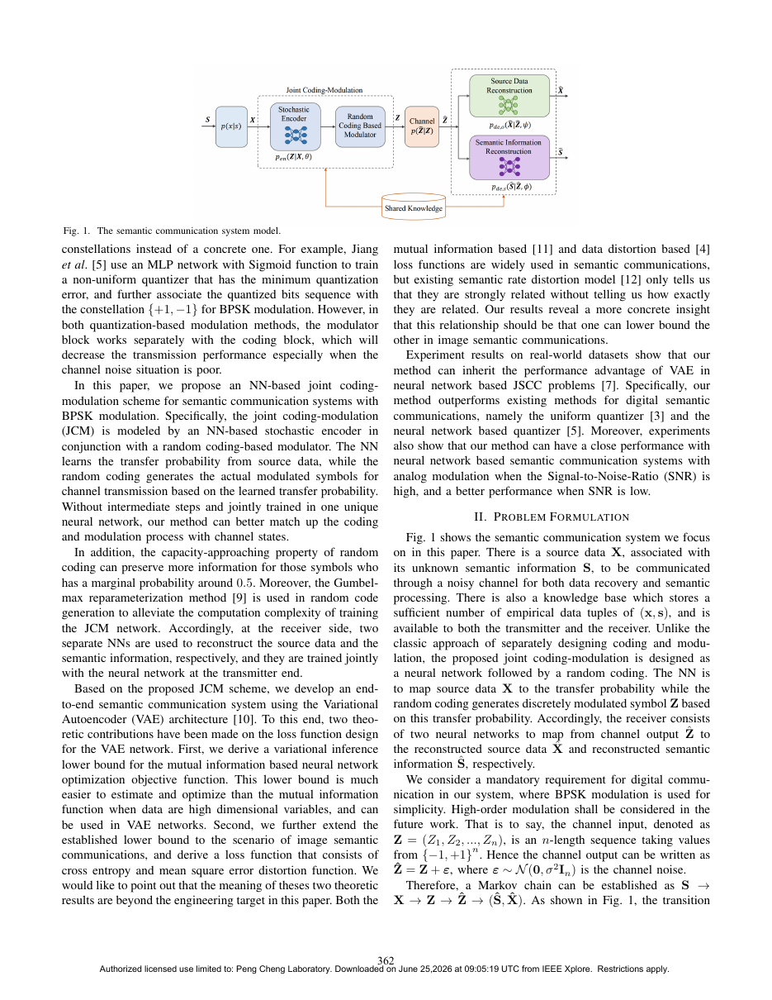
方法/架构图页：来自《Learning Based Joint Coding-Modulation for Digital Semantic Communication Systems》PDF p.2。
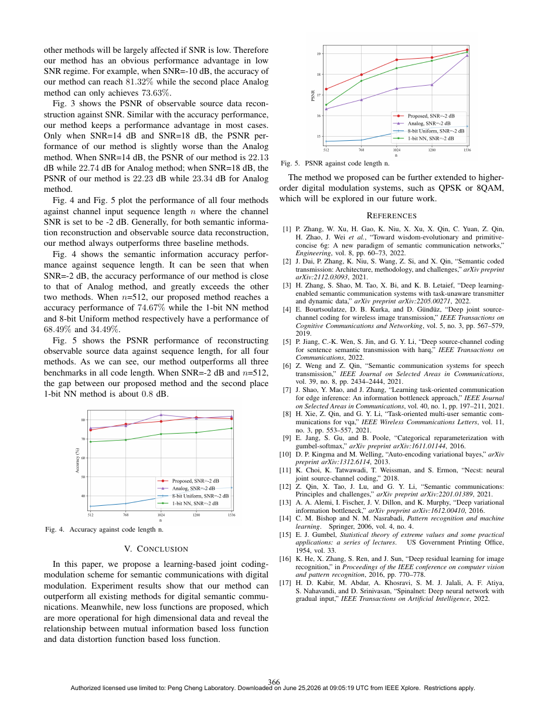
关键结果图/表页：来自《Learning Based Joint Coding-Modulation for Digital Semantic Communication Systems》PDF p.6，通常包含 SNR/PSNR/MS-SSIM/BER/Accuracy/码率等结果。
局限性
仅 BPSK，未覆盖高阶调制和复杂 fading；随机采样训练的方差/稳定性仍是问题。
Robust Information Bottleneck for Task-Oriented Communication With Digital Modulation
字段 内容 作者 Songjie Xie, Shuai Ma, Ming Ding, Yuanming Shi, Mingjian Tang, Youlong Wu 来源/年份 IEEE · IEEE Journal on Selected Areas in Communications, 2023 · 2023 标识 DOI 10.1109/JSAC.2023.3288252 任务 任务导向边缘推理/分类 是否严格数字语义通信 核心 信道处理分类 4. 显式建模离散错误并联合优化
实验设置
项目 提取结果 数据集 MNIST、CIFAR-10。 Baseline DeepJSCC、VFE、其他 task-oriented JSCC 变体。 评价指标 Top-1 accuracy/error rate、mutual information、不同 PSNR 下曲线。 信道类型 AWGN；K-PSK 数字调制。 实验条件 训练 PSNR 8/12/16 dB，测试 PSNR 4-20 dB；实验采用 K=16、16-PSK 等配置。
Introduction 讲述逻辑
现有进展：连续 DeepJSCC/任务导向 SemCom 已证明端到端语义传输可在低 SNR 或低带宽下优于传统分离式通信。 仍有问题：只保留任务相关信息会牺牲抗信道扰动冗余，连续 JSCC 又难接入数字调制。 为什么重要：数字语义通信必须进入现有 bit、调制、信道编码和硬件栈；一旦离散变量出错，语义 latent 可能发生非线性跳变。 本文方案：提出 RIB 目标，在任务信息与对信道扰动的冗余之间做可控折中。 如何解决：学习 codebook、离散表示和 K-PSK 调制映射，把 AWGN 后的 corrupted representation 纳入训练目标。 核心观点：MNIST/CIFAR-10 在训练/测试 SNR 不匹配时更稳，表明冗余不是浪费，而是任务鲁棒性资源。 方法与数字化方案
技术路线： DT-JSCC + robust information bottleneck。把输入编码成 d 个离散表示，每个表示从 K 个 codeword/符号中采样；再映射到 K-PSK constellation。
实际传输单位： discrete representation / PSK symbol。码本/离散集合： 有 learnable codebook；K 在实验中可从 2 到 64 扫描，主实验 K=16。
传输开销推导： 若编码成 $$d$$ 个离散变量、每个变量 K 类，则语义 payload $$B_{sem}=d\lceil\log_2 K\rceil$$；当 K-PSK 与 K 对齐时每个变量对应一个 channel symbol，符号数约 $$d$$。论文同时用互信息 $$I(Z;\hat Z)$$ 与任务信息刻画有效传输率。
实际数值计算实例： 以论文 CIFAR-10 主设置为例。原始样本为 32×32×3 RGB，按 8-bit 像素为 24,576 bits。论文实验使用 d=16 个离散表示，主实验 K=16，并映射到 16-PSK；每个离散变量携带 log2(16)=4 bits，所以语义 payload 为 16×4=64 bits，同时需要约 16 个 K-PSK channel symbols。按 raw RGB bit 计，压缩率为 24,576/64=384×。如果 K 扫描到 64，则同样 d=16 时 payload 为 16×6=96 bits，压缩率为 256×；这说明该文用 K 控制表示细粒度和信道易错性之间的折中。
信道如何作用于离散变量
decoder 输入： decoder 收到 demodulation 后的 corrupted discrete vector \hat z。
错误建模/纠错机制： 显式建模 $$p(\hat z|z)$$，即符号错误导致离散类别变化；RIB 让 codeword/分布保留必要冗余以抵抗这种变化。
Codex 判断： 这是严格数字任务通信中的关键论文：不仅量化，还把 modulation error 对任务表示的影响写入目标函数。
架构图与结果图
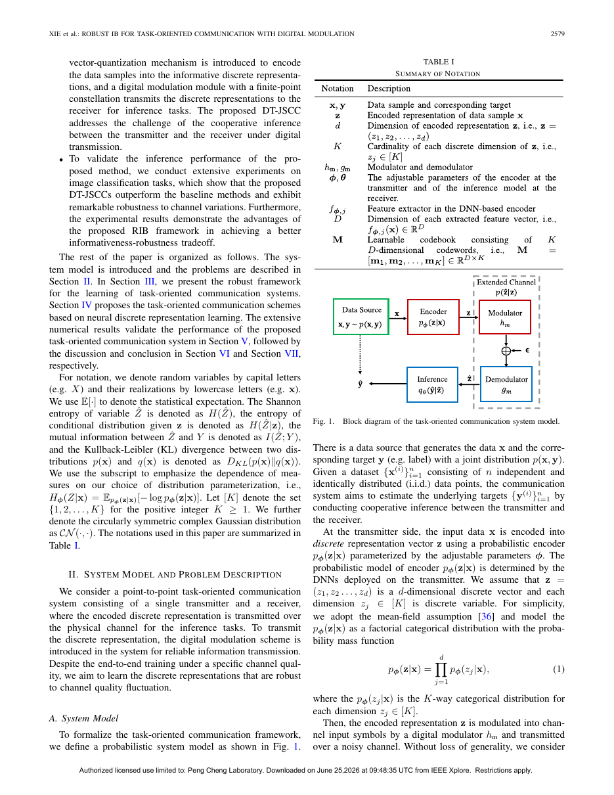
方法/架构图页：来自《Robust Information Bottleneck for Task-Oriented Communication With Digital Modulation》PDF p.3。
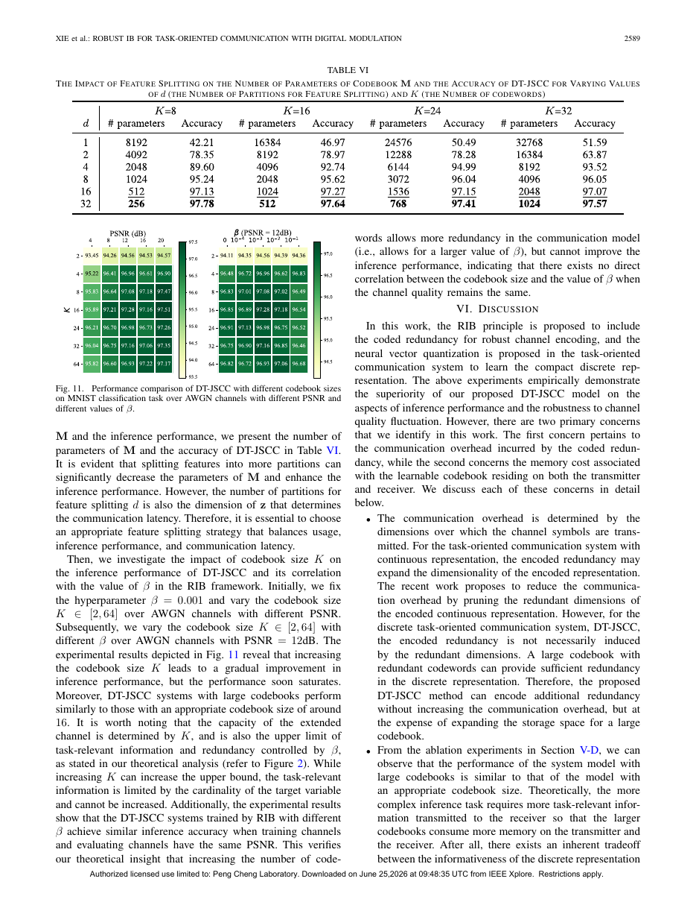
关键结果图/表页：来自《Robust Information Bottleneck for Task-Oriented Communication With Digital Modulation》PDF p.13，通常包含 SNR/PSNR/MS-SSIM/BER/Accuracy/码率等结果。
局限性
任务集中在分类；图像重建/感知质量不是主线；K-PSK 假设与实际编码调制链路仍有距离。
Robust Semantic Communications With Masked VQ-VAE Enabled Codebook
字段 内容 作者 Qiyu Hu, Guangyi Zhang, Zhijin Qin, Yunlong Cai, Guanding Yu, Geoffrey Ye Li 来源/年份 IEEE · IEEE Transactions on Wireless Communications, 2023 · 2023 标识 IEEE Xplore 任务 图像检索/重建与语义噪声鲁棒性 是否严格数字语义通信 核心 信道处理分类 5. 语义噪声与码本鲁棒性机制
实验设置
项目 提取结果 数据集 图像检索和重建数据集；文中含 retrieval、reconstruction 与 semantic noise 实验。 Baseline JPEG/BPG+LDPC、无 masking/无 FIM/普通 VQ-VAE 变体。 评价指标 Recall@1、重建质量、语义相似度、激活频率、不同 SNR 下性能。 信道类型 数字传输链路与 LDPC 对比；重点还包括 semantic noise 而非单纯物理噪声。 实验条件 patch size 8/16，对比低 SNR 和高 SNR；包含 semantic noise power ϵ 的实验。
Introduction 讲述逻辑
现有进展：连续 DeepJSCC/任务导向 SemCom 已证明端到端语义传输可在低 SNR 或低带宽下优于传统分离式通信。 仍有问题：语义噪声会让接收端拿到“语义上误导”的符号，传统 BER/SER 无法描述这种错误。 为什么重要：数字语义通信必须进入现有 bit、调制、信道编码和硬件栈；一旦离散变量出错，语义 latent 可能发生非线性跳变。 本文方案：用 masked VQ-VAE、语义相似度正则和 FIM 让码本更去相关，并抑制容易引入语义噪声的 feature。 如何解决：训练阶段通过 semantic noise/weight perturbation 增强鲁棒性；传输阶段仍发送离散 index。 核心观点：检索 Recall@1 和重建质量在 semantic noise 与低 SNR 下优于传统压缩+信道编码。 方法与数字化方案
技术路线： masked VQ-VAE codebook。语义编码器输出 feature 后进入 masked VQ-VAE；通过 mask 与 feature importance module 删除噪声相关或任务无关 feature；发送 codebook indices。
实际传输单位： codebook index / selected semantic tokens。码本/离散集合： 有码本；码本作为收发双方共享知识库，论文强调 codebook basis 的语义相似度约束。
传输开销推导： 若保留 $$N_s$$ 个重要 feature，每个索引来自 $$K$$ 个 codeword，则 $$B_{sem}=N_s\lceil\log_2 K\rceil$$；mask 降低 $$N_s$$，patch size 决定 token 数。论文以 patch/压缩率和检索指标给出开销收益，精确 bit 数需由保留 token 数和码本大小推导。
实际数值计算实例： 论文给出 224×224 RGB 输入、patch size=16、codebook size=256、masking ratio=0.5、16-QAM 与 1/2 LDPC 的实例。原始图像 bit 数为 224×224×3×8 = 1,204,224 bits。patch 网格为 14×14=196 个 token，K=256 表示每个 index 为 8 bits；mask 后保留 196×0.5=98 个 index，所以语义 payload 为 98×8=784 bits。16-QAM 每符号 4 bits，因此语义符号数为 784/4=196 symbols/image。论文对 JPEG+LDPC 的参照计算为 224×224×3×8×2/(11.2×4)=53,760 symbols/image；因此 masked VQ-VAE 链路的符号开销比例为 196/53,760=0.36%。按源 bit 直接比较，1,204,224/784=1,536×。
信道如何作用于离散变量
decoder 输入： 多数实验中 decoder 假设收到经通信链路恢复后的 index 或受语义噪声扰动的 feature/index。
错误建模/纠错机制： 论文重点是 semantic noise，不是 bit flip 到邻近/远端 codeword 的物理层模型；index 错误的跳变风险被间接缓解，但未完全用 BSC/BER 端到端建模。
Codex 判断： 它把“错误的语义符号”问题说清楚了，但对物理信道造成的 index bit error 仍偏间接。
架构图与结果图
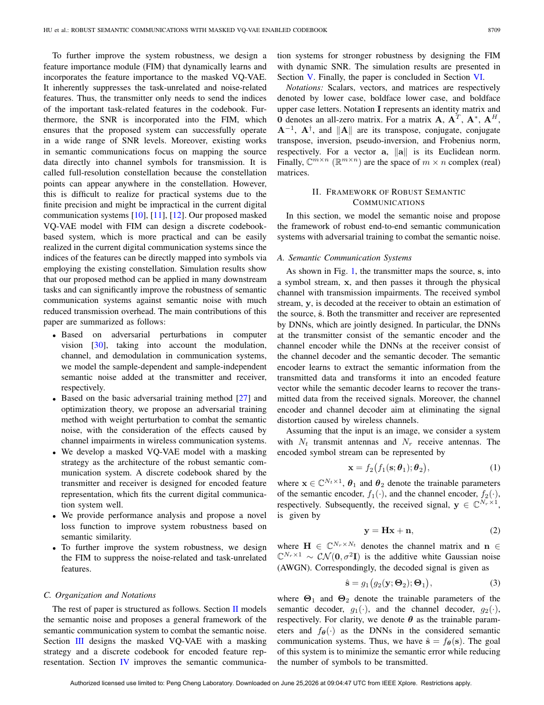
方法/架构图页：来自《Robust Semantic Communications With Masked VQ-VAE Enabled Codebook》PDF p.3。
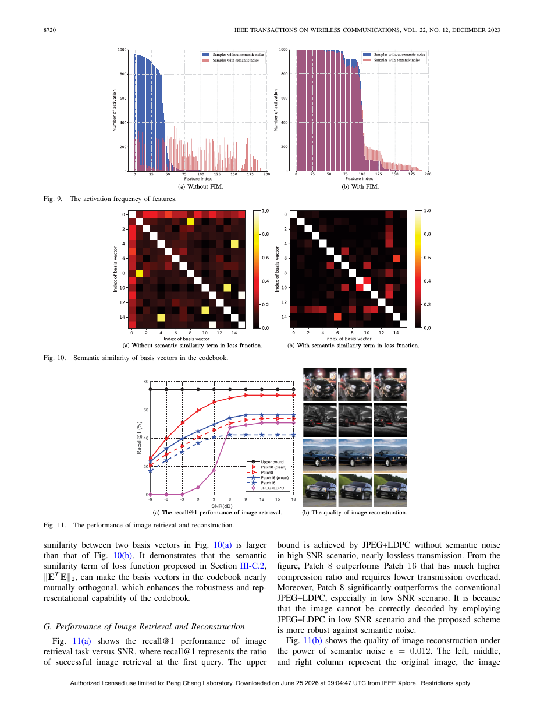
关键结果图/表页：来自《Robust Semantic Communications With Masked VQ-VAE Enabled Codebook》PDF p.14，通常包含 SNR/PSNR/MS-SSIM/BER/Accuracy/码率等结果。
局限性
semantic noise 与 physical bit error 的边界略模糊；缺少软信息或可学习信道编码。
Vector Quantized Semantic Communication System
字段 内容 作者 Qifan Fu, Huiqiang Xie, Zhijin Qin, Gregory Slabaugh, Xiaoming Tao 来源/年份 IEEE · IEEE Wireless Communications Letters, 2023 · 2023 标识 IEEE Xplore; DOI in IEEE record 任务 图像重建/传输 是否严格数字语义通信 核心 信道处理分类 2. 数字语义特征加传统信道编码
实验设置
项目 提取结果 数据集 Cars196 训练，Kodak 测试；输入按论文实验裁剪和缩放。 Baseline BPG+LDPC、UNet-DeepJSCC/DeepJSCC、不同 LDPC blocklength 和调制组合。 评价指标 MS-SSIM，传输符号数，压缩率/相近 transmitted symbols 下的质量。 信道类型 AWGN、Rician；语义 index 转 bit 后走 LDPC、BPSK/QAM/AMC。 实验条件 文中给出 SNR=9 dB 训练点、LDPC blocklength 20/648/64800 bits，多尺度向量数如 N2=64,N3=16,N4=4 等配置。
Introduction 讲述逻辑
现有进展：连续 DeepJSCC/任务导向 SemCom 已证明端到端语义传输可在低 SNR 或低带宽下优于传统分离式通信。 仍有问题：连续 DeepJSCC 在低 SNR 平滑但与数字硬件不合；传统 BPG+LDPC 有 cliff effect；早期 VQ 语义系统又没有很好展示多尺度图像语义。 为什么重要：数字语义通信必须进入现有 bit、调制、信道编码和硬件栈；一旦离散变量出错，语义 latent 可能发生非线性跳变。 本文方案：提出 VQ-DeepSC，把语义 feature 压成多尺度 codebook indices，再用现有数字链路传输。 如何解决：多尺度码本保留全局/局部语义，PatchGAN 提升感知质量，LDPC/调制负责 index bits 的可靠传输。 核心观点：在低 SNR 下相对 BPG+LDPC cliff point 更低，且在部分 SNR 区间接近 DeepJSCC 的 MS-SSIM。 方法与数字化方案
技术路线： 多尺度 VQ-DeepSC。CNN 语义编码器产生多尺度 feature map，每个尺度用共享 embedding/codebook 最近邻量化；indices 再转 bitstream。
实际传输单位： codebook index / bitstream。码本/离散集合： 有码本；多尺度 embedding spaces，具体 codebook 维度以每尺度 N_l 与 K_l 表示。
传输开销推导： 传输开销可写为 $$B_{sem}=\sum_l N_l\lceil\log_2 K_l\rceil$$；若接 LDPC 码率 $$R_c$$ 和 $$M$$ 阶调制，则信道比特/符号数约为 $$B_{tx}=B_{sem}/R_c,\ N_{sym}=B_{tx}/\log_2 M$$。论文直接报告的是相近 transmitted symbols 与 compression ratio；对原始 Kodak RGB，原始 bit 约为 $$HWC\times8$$。
实际数值计算实例： 以 Kodak 768×512 RGB 测试图和 VQ-DeepSC3 配置为计算实例。论文按原始 8-bit RGB 计，原图数据量为 768×512×3×8 = 9,437,184 bits。VQ-DeepSC3 给出多尺度码本数量 N1=2、N2=64、N3=4、N4=4；若按论文多尺度 CNN 的逐级 2 倍下采样理解，四个 index feature map 尺寸约为 384×256、192×128、96×64、48×32，因此源端语义 index bit 数为 384×256×log2(2)+192×128×log2(64)+96×64×log2(4)+48×32×log2(4)=261,120 bits。源压缩率为 9,437,184/261,120=36.1×。若接论文使用的 LDPC 码率 Rc=1/2，则信道编码后约 522,240 coded bits；相对原图仍为 9,437,184/522,240=18.1×。
信道如何作用于离散变量
decoder 输入： 经过信道译码后的 recovered indices，而不是带 soft information 的连续 latent。
错误建模/纠错机制： 信道错误主要由传统 LDPC/AMC 处理；若 index bit 出错会跳到错误 codeword，但模型本身没有在训练中显式模拟 index flip 语义跳变。
Codex 判断： 它是数字语义通信的起点之一，但更偏“VQ 压缩 + 传统可靠链路”。真正的离散变量误码鲁棒性依赖外部信道编码，语义 decoder 没学会从错误 index 中恢复。
架构图与结果图
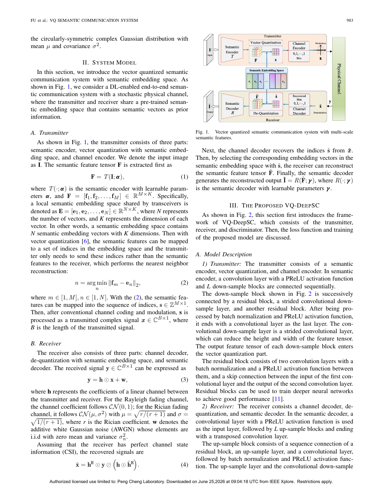
方法/架构图页：来自《Vector Quantized Semantic Communication System》PDF p.2。
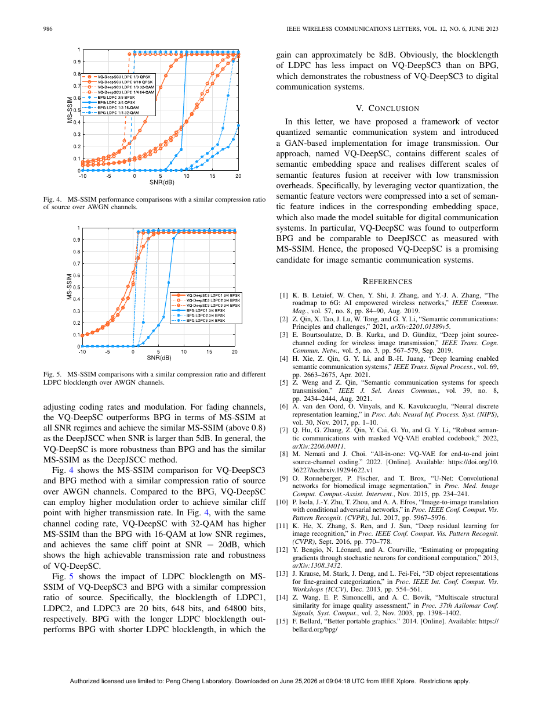
关键结果图/表页：来自《Vector Quantized Semantic Communication System》PDF p.5，通常包含 SNR/PSNR/MS-SSIM/BER/Accuracy/码率等结果。
局限性
码本/向量数配置较固定；对 index error 的端到端鲁棒性分析不足；缺少对 bit-level 重要性或 soft demodulation 的建模。
Activation Map-based Vector Quantization for 360-degree Image Semantic Communication
字段 内容 作者 Yang Ma, Wenchi Cheng, Jingqing Wang, Wei Zhang 来源/年份 arXiv · arXiv, 2024 · 2024 标识 arXiv 2406.04740 任务 360 度图像语义传输 是否严格数字语义通信 核心 信道处理分类 1. VQ 源编码，弱信道建模
实验设置
项目 提取结果 数据集 360-degree image 数据集。 Baseline 传统 coding、DL-based coding、普通 VQ。 评价指标 重建质量、相同 transmission symbols 下性能。 信道类型 无线传输；信道细节较弱。 实验条件 activation map 自适应量化，GAN discriminator。
Introduction 讲述逻辑
现有进展：连续 DeepJSCC/任务导向 SemCom 已证明端到端语义传输可在低 SNR 或低带宽下优于传统分离式通信。 仍有问题：360 图像数据量大且几何失真特殊，普通压缩没有利用语义/视场重要性。 为什么重要：数字语义通信必须进入现有 bit、调制、信道编码和硬件栈；一旦离散变量出错，语义 latent 可能发生非线性跳变。 本文方案：用 activation map 引导 VQ，减少不重要区域的量化开销。 如何解决：GAN 对抗训练增强视觉质量，VQ 保证数字兼容。 核心观点：相同传输符号数下优于传统和 DL-based coding。 方法与数字化方案
技术路线： AM-VQ。DNN 提取 360 图像语义 feature；activation map 衡量区域/feature 重要性并自适应 VQ，GAN 判别器提升重建。
实际传输单位： VQ index。码本/离散集合： 有码本；activation map 决定量化强度/选择。
传输开销推导： 若按 activation map 保留/量化 N_a 个 feature index，则 $$B_{sem}=N_a\lceil\log_2K\rceil$$；论文以 same transmission symbols 比较，具体压缩率由 N_a 和 K 推导。
实际数值计算实例： 该文以 bpp/压缩比报告 360 图像开销，正文没有给出单一固定 H、W。按其 bpp 定义，若采用 1024×2048 RGB 360 图像作为计算实例，原始 bit 数为 1024×2048×3×8=50,331,648 bits。若取曲线中的 0.05 bpp 工作点，payload 为 0.05×1024×2048=104,858 bits，raw/source 压缩率为 480×。论文设置 codebook embedding space dimension 为 1024；若实际码本 cardinality 也取 K=1024，则每个 index 为 10 bits，上述 104,858-bit 预算对应约 10,486 个 indices。需要注意：论文原文主要给 bpp 曲线和 embedding dimension，未把每张图的固定 token 网格与 codebook cardinality 完整列成 ledger。
信道如何作用于离散变量
decoder 输入： decoder 默认接收恢复后的 VQ indices。
错误建模/纠错机制： 信道错误不是核心；若 index 错误，论文没有显式邻近 codeword 或 UEP 机制。
Codex 判断： 源编码/重要性量化有价值，但离散变量过信道的错误问题还未真正展开。
架构图与结果图
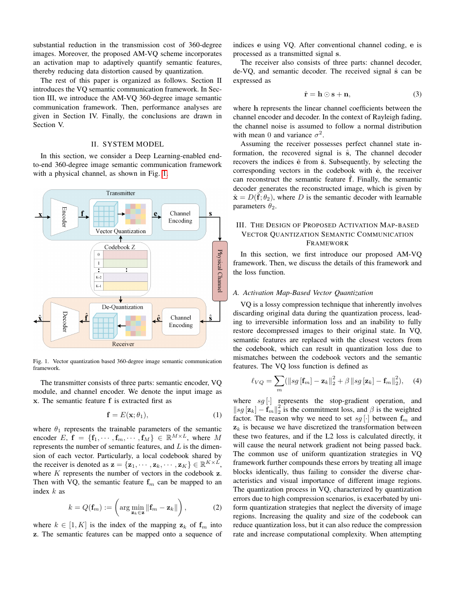
方法/架构图页：来自《Activation Map-based Vector Quantization for 360-degree Image Semantic Communication》PDF p.2。
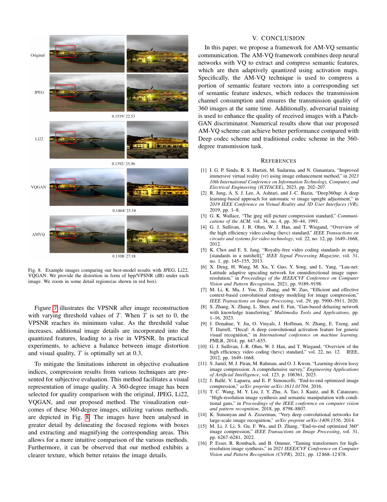
关键结果图/表页：来自《Activation Map-based Vector Quantization for 360-degree Image Semantic Communication》PDF p.6，通常包含 SNR/PSNR/MS-SSIM/BER/Accuracy/码率等结果。
局限性
需要纳入 BSC/OFDM/UEP 实验才能成为完整 DSC 方案。
D2-JSCC: Digital Deep Joint Source-channel Coding for Semantic Communications
字段 内容 作者 Jianhao Huang, Kai Yuan, Chuan Huang, Kaibin Huang 来源/年份 IEEE · IEEE PIMRC, 2024 · 2024 标识 DOI 10.1109/PIMRC59610.2024.10817394 任务 图像传输 是否严格数字语义通信 核心 信道处理分类 2. 数字 bitstream + channel coding
实验设置
项目 提取结果 数据集 真实图像数据集；与 JPEG/JPEG2000/BPG、DeepJSCC 对比。 Baseline DeepJSCC、JPEG/JPEG2000/BPG + channel code。 评价指标 PSNR/MS-SSIM 或 distortion-rate，E2E distortion。 信道类型 数字 source coding + channel coding；SNR 已知时优化 source/channel rate tradeoff。 实验条件 不同 SNR 和 channel codes；给定总 rate 求 source/channel rate。
Introduction 讲述逻辑
现有进展：连续 DeepJSCC/任务导向 SemCom 已证明端到端语义传输可在低 SNR 或低带宽下优于传统分离式通信。 仍有问题：Analog/Semi-analog JSCC 仍不含标准 channel encoder/decoder，不兼容数字系统。 为什么重要：数字语义通信必须进入现有 bit、调制、信道编码和硬件栈；一旦离散变量出错，语义 latent 可能发生非线性跳变。 本文方案：明确采用数字 source coding 与 channel coding，并用两步算法寻找源信道率折中。 如何解决：把 E2E distortion 写成 source rate 和 channel rate 的函数，在 SNR 下选择最优分配。 核心观点：在多个 SNR 上优于经典 separation 和 deep JSCC，尤其显示 source/channel rate 协同的重要性。 方法与数字化方案
技术路线： digital deep source-channel coding。深度 source coder 提取并压缩语义 feature，adaptive density model 估计分布；外接 channel code 保护 bitstream。
实际传输单位： bitstream。码本/离散集合： 无 VQ 码本；更接近 learned entropy/source coding。
传输开销推导： 总 bit budget 分成 source rate $$R_s$$ 和 channel redundancy $$R_c$$；给定总信道资源，优化 $$D(R_s,R_c,SNR)$$。若 source bitstream 长度为 $$B_s$$，码率 $$r_c$$，实际发送 $$B_s/r_c$$ bits。
实际数值计算实例： 以 Kodak 768×512 RGB 图像为例，原始数据量为 768×512×3×8=9,437,184 bits。论文的数字链路先由 entropy model 产生源 bitstream Bs，再按信道条件用 polar/channel code 转为 coded bits；因此开销实例要从 bpp 或 source rate 代入。若取一个 0.05 bpp 的数字图像传输工作点，则源 payload 为 0.05×768×512=19,661 bits，raw/source 压缩率为 9,437,184/19,661=480×。论文采用 polar code 形式 (ceil(4096c),4096)；若等效码率 Rc=1/2，则 coded bits 约为 39,322 bits，QPSK 下 channel symbols 约为 19,661。若 Rc=2/3，则 coded bits 约为 29,492 bits，QPSK symbols 约 14,746。
信道如何作用于离散变量
decoder 输入： decoder 接收经过 channel decoding 的 source bitstream。
错误建模/纠错机制： 信道错误由 channel code 负责；语义 decoder 不直接处理错误 bitstream。
Codex 判断： 它是数字 JSCC 系统级设计，严格数字但不是 VQ index error 方向。
架构图与结果图
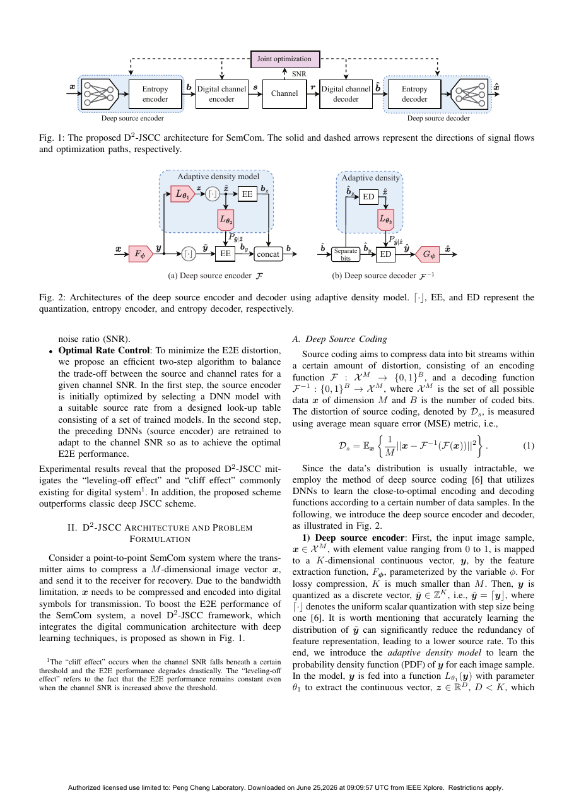
方法/架构图页：来自《D2-JSCC: Digital Deep Joint Source-channel Coding for Semantic Communications》PDF p.2。
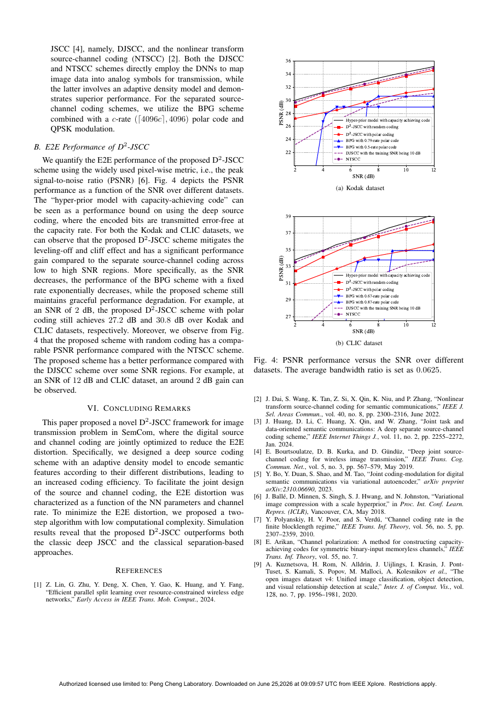
关键结果图/表页：来自《D2-JSCC: Digital Deep Joint Source-channel Coding for Semantic Communications》PDF p.7，通常包含 SNR/PSNR/MS-SSIM/BER/Accuracy/码率等结果。
局限性
离散语义变量本身的语义鲁棒性较少；性能依赖 density model 与 channel code 选择。
Joint Coding-Modulation for Digital Semantic Communications via Variational Autoencoder
字段 内容 作者 Yufei Bo, Yiheng Duan, Shuo Shao, Meixia Tao 来源/年份 IEEE · IEEE Transactions on Communications, 2024 · 2024 标识 IEEE Xplore 任务 图像语义传输/分类与重建 是否严格数字语义通信 核心 信道处理分类 4. 显式建模离散错误并联合优化
实验设置
项目 提取结果 数据集 CIFAR-10 等图像任务数据集。 Baseline Analog semantic communication、uniform quantization、learning-based JCM 等。 评价指标 Accuracy、PSNR、不同 transmission rate/modulation order/SNR。 信道类型 AWGN；多阶数字调制。 实验条件 跨 SNR、rate 与 modulation order 测试。
Introduction 讲述逻辑
现有进展：连续 DeepJSCC/任务导向 SemCom 已证明端到端语义传输可在低 SNR 或低带宽下优于传统分离式通信。 仍有问题：早期数字化方法多是先量化再调制，量化误差和信道条件没有联合适配。 为什么重要：数字语义通信必须进入现有 bit、调制、信道编码和硬件栈；一旦离散变量出错，语义 latent 可能发生非线性跳变。 本文方案：把 coding 与 modulation 合成 VAE 概率模型，使离散符号分布随信道和任务共同优化。 如何解决：VAE latent/transition probability 让端到端损失可导，并用信息论 matching loss 约束。 核心观点：在多 SNR、rate、调制阶数下优于量化式数字 baseline，高阶调制时接近 analog 语义通信。 方法与数字化方案
技术路线： VAE joint coding-modulation。用 VAE 学习从源数据到离散 constellation symbols 的 transition probability，避免硬调制不可导。
实际传输单位： constellation symbol。码本/离散集合： 无显式 VQ 码本；离散集合是 M 阶调制星座。
传输开销推导： 若每个样本发送 $$n_s$$ 个 M 阶星座符号，则语义 bit 等价量为 $$B_{sem}=n_s\log_2 M$$；论文通过 transmission rate 与 modulation order 给出实验点，具体原图压缩率需按输入 bit 数 $$HWC8$$ 对比。
实际数值计算实例： 论文对 CIFAR-10 明确定义 source dimension 为 k=32×32×3=3,072，并用 transmission rate r=n/k，而不是直接用 HWC×8。主实验 n=128 channel uses，因此按论文定义 r=128/3,072=1/24。若换成 bit 等价量，16-QAM 时 128 个 symbols 可携带 128×4=512 bits；与 8-bit RGB 原始量 24,576 bits 相比，压缩率为 48×。在 Tiny ImageNet 64×64×3 场景，论文图中使用 n=1024 channel uses，则 r=1024/(64×64×3)=1/12；若用 16-QAM，payload 为 4,096 bits，而原始 8-bit RGB 为 98,304 bits，压缩率为 24×。
信道如何作用于离散变量
decoder 输入： decoder 接收经过实际数字调制、AWGN 和 demodulation 后的符号/概率信息。
错误建模/纠错机制： 显式考虑 constellation symbol 错误；但不以 bit-level index flip 为中心，而是以符号级转移概率吸收误差。
Codex 判断： 它代表从 BPSK 原型走向多阶调制的数字语义 JSCC，真正处理了 symbol error。
架构图与结果图
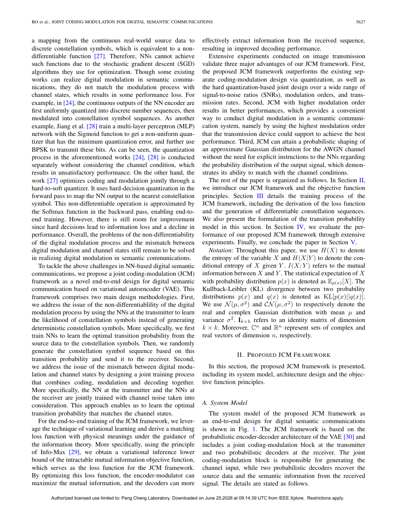
方法/架构图页：来自《Joint Coding-Modulation for Digital Semantic Communications via Variational Autoencoder》PDF p.2。
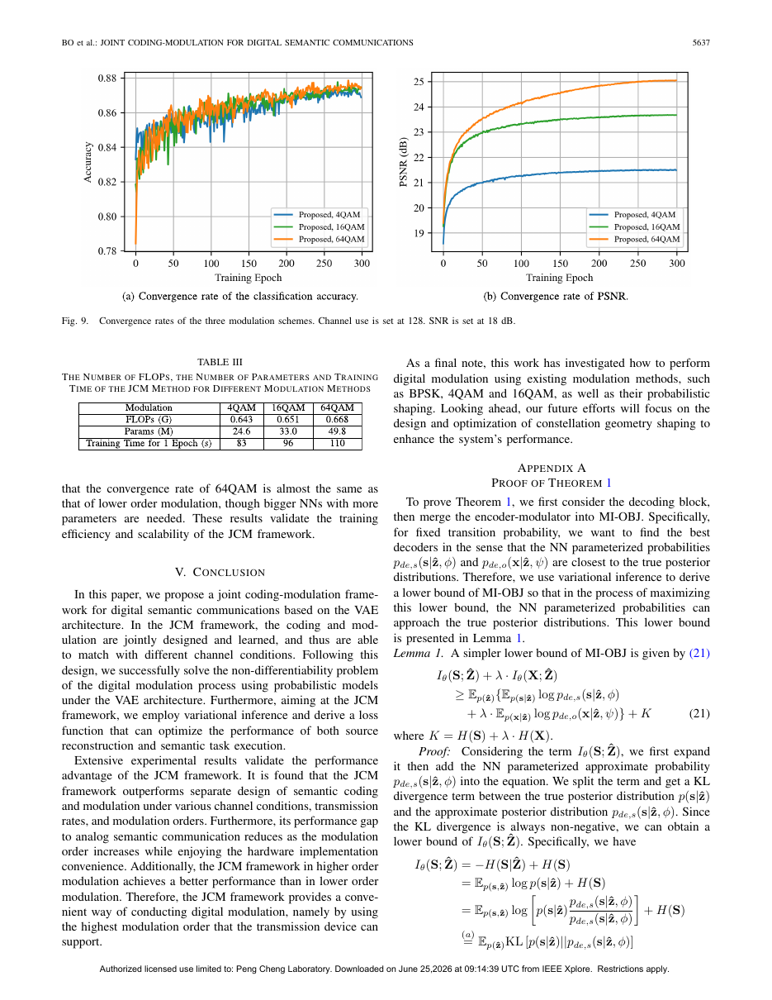
关键结果图/表页：来自《Joint Coding-Modulation for Digital Semantic Communications via Variational Autoencoder》PDF p.12，通常包含 SNR/PSNR/MS-SSIM/BER/Accuracy/码率等结果。
局限性
星座学习和实际标准编码调制仍需接口；对复杂多径/OFDM 的处理不足。
Joint Source-Channel Coding for Robust Digital Semantic Communications
字段 内容 作者 Joohyuk Park, Yongjeong Oh, Seonjung Kim, Yo-Seb Jeon 来源/年份 IEEE · IEEE Globecom, 2024 · 2024 标识 DOI 10.1109/GLOBECOM52923.2024.10901466 任务 图像分类/重建 是否严格数字语义通信 核心 信道处理分类 4. 显式建模离散错误并联合优化
实验设置
项目 提取结果 数据集 图像分类与重建数据集。 Baseline 固定环境训练 JSCC、常规 hard demodulation、已有 channel-adaptive JSCC。 评价指标 Accuracy、PSNR、SNR 鲁棒性。 信道类型 digital modulation；binary symmetric erasure channels (BSEC) 训练模型。 实验条件 从多种分布采样 BSEC 参数以覆盖信道变化。
Introduction 讲述逻辑
现有进展：连续 DeepJSCC/任务导向 SemCom 已证明端到端语义传输可在低 SNR 或低带宽下优于传统分离式通信。 仍有问题：数字调制下 end-to-end 训练受信道动态影响，固定 SNR 模型泛化差。 为什么重要：数字语义通信必须进入现有 bit、调制、信道编码和硬件栈；一旦离散变量出错，语义 latent 可能发生非线性跳变。 本文方案：提出不确定性感知 demodulation 和 BSEC 参数采样训练，提高不同信道环境下的鲁棒性。 如何解决：BSEC 把 bit flip 和 erasure 合在训练接口中，让 decoder 学会利用不确定/受损 bits。 核心观点：分类与重建任务在未见 SNR 下更稳。 方法与数字化方案
技术路线： BSEC robust JSCC。binary-output JSCC encoder 输出 bit，通信链路用不确定性 demodulation 与 BSEC 等效模型训练。
实际传输单位： bit / erased bit / soft uncertainty。码本/离散集合： 无 VQ 码本；离散变量是 binary encoder output。
传输开销推导： 若 encoder 输出 B bits，则 $$B_{sem}=B$$；调制阶数 M 时符号数 $$B/\log_2 M$$，BSEC 训练通过 erasure/flip 参数决定有效信息保留。
实际数值计算实例： 论文在 CIFAR-10 上给出明确的 binary latent 长度：分类任务 N=128，重建任务 N=512。CIFAR-10 原始 8-bit RGB 为 24,576 bits。分类时数字语义 payload 为 128 bits，压缩率 24,576/128=192×；若用 4-QAM，每符号 2 bits，则只需 64 channel symbols。重建时 payload 为 512 bits，压缩率为 48×，4-QAM 下为 256 symbols。论文给出的 JPEG+1/2 LDPC baseline 平均 bit 序列长度在分类中约 14,966 bits；经过 1/2 LDPC 后为 29,932 coded bits，4-QAM 下 14,966 symbols，显著高于所提方法的 64 symbols。
信道如何作用于离散变量
decoder 输入： decoder 收到含不确定性/擦除建模的 bit 表示，而不是完美 index。
错误建模/纠错机制： 显式处理 bit error/erasure，比只靠 LDPC 的 VQ 系统更接近数字语义误码问题。
Codex 判断： 这是后续 channel-adaptive DSC 的前身，核心价值是把 bit 错误模型放进训练。
架构图与结果图
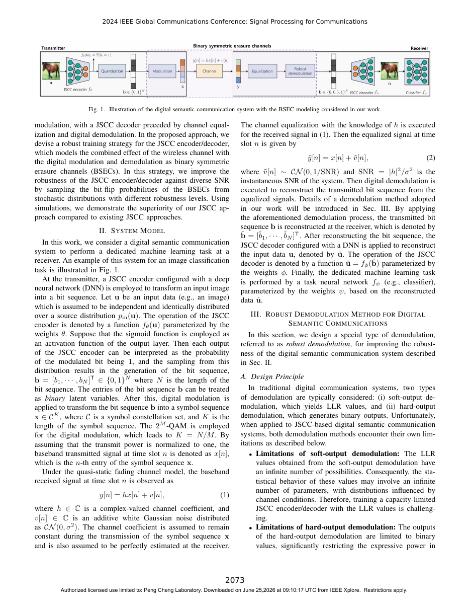
方法/架构图页：来自《Joint Source-Channel Coding for Robust Digital Semantic Communications》PDF p.2。
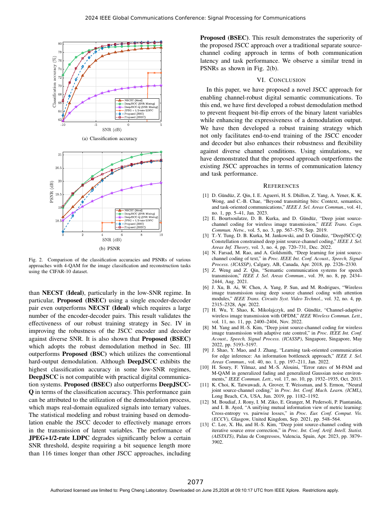
关键结果图/表页：来自《Joint Source-Channel Coding for Robust Digital Semantic Communications》PDF p.6，通常包含 SNR/PSNR/MS-SSIM/BER/Accuracy/码率等结果。
局限性
会议版规模较小；调制阶数自适应和功率控制在后续 TCCN/TCOMM 版更完整。
OFDM-Based Digital Semantic Communication With Importance Awareness
字段 内容 作者 Chuanhong Liu, Caili Guo, Yang Yang, Wanli Ni, Tony Q. S. Quek 来源/年份 IEEE · IEEE Transactions on Communications, 2024 · 2024 标识 IEEE Xplore 任务 图像/任务语义传输，OFDM 资源分配 是否严格数字语义通信 核心 信道处理分类 5. 重要性感知资源分配
实验设置
项目 提取结果 数据集 图像任务数据集；文中对比 analog SemCom 与 conventional bit-based communication。 Baseline Analog SemCom、传统 bit-based、无重要性感知分配变体。 评价指标 任务性能、SNR/频率选择性信道下增益、bit/subcarrier allocation 结果。 信道类型 频率选择性信道；OFDM；scalar quantization。 实验条件 报告了相对 analog SemCom 9.7%、相对 conventional bit-based 28.7% 的性能增益。
Introduction 讲述逻辑
现有进展：连续 DeepJSCC/任务导向 SemCom 已证明端到端语义传输可在低 SNR 或低带宽下优于传统分离式通信。 仍有问题：多数 SemCom 使用简化 AWGN/analog channel，无法落地到 OFDM 频选链路。 为什么重要：数字语义通信必须进入现有 bit、调制、信道编码和硬件栈；一旦离散变量出错，语义 latent 可能发生非线性跳变。 本文方案：构建兼容数字 OFDM 的语义链路，把更好子载波和更多 bits 分给更重要语义。 如何解决：先估计 semantic importance，再用低复杂度子载波分配和 DRL bit allocation 处理不可显式写出的任务目标。 核心观点：频选信道下比 analog SemCom 和 conventional bit-based 系统更高效。 方法与数字化方案
技术路线： OFDM + semantic importance bit allocation。语义 encoder 提取 feature，scalar quantizer 数字化，再映射到 OFDM 子载波；语义重要性决定子载波和 bit 数。
实际传输单位： quantized bit / OFDM symbol。码本/离散集合： 无 VQ 码本；使用标量量化 levels 与 bit allocation。
传输开销推导： 若第 i 个语义 feature 分配 $$b_i$$ bits，则 $$B_{sem}=\sum_i b_i$$；OFDM 资源开销还包括每子载波调制阶数与信道编码。论文把优化变量定义为 subcarrier assignment 与 bit allocation，而非固定 CBR。
实际数值计算实例： 以 STL-10 图像为例，论文使用 96×96 彩色图像，原始 8-bit RGB 数据量为 96×96×3×8=221,184 bits。实验设置语义特征数 C=512，并给出总 bit budget B∈[800,1300]。若取高预算 1300 bits，压缩率为 221,184/1,300=170.1×；低预算 800 bits 时压缩率为 221,184/800=276.5×。OFDM 参数为 256 个 data subcarriers、16 个 pilots 和 CP length 72，即一个 OFDM symbol 的时间域长度为 344。若采用 64-QAM，每个数据子载波承载 6 bits，1300 bits 需要 ceil(1300/6)=217 个数据子载波，可放入一个含 256 data subcarriers 的 OFDM symbol；实际物理资源还要加 16 pilots 和 72 CP 的开销。
信道如何作用于离散变量
decoder 输入： decoder 收到 OFDM 解调/译码后的量化语义 bits 或对应 feature 值。
错误建模/纠错机制： 考虑 bit allocation 与频选信道质量，但主要不是训练 decoder 从错误 bitstream 中恢复；误码影响通过资源分配和传统 OFDM 可靠性间接控制。
Codex 判断： 它把数字 SemCom 推进到 OFDM 系统层，强在资源分配，不强在 index error 的语义恢复。
架构图与结果图
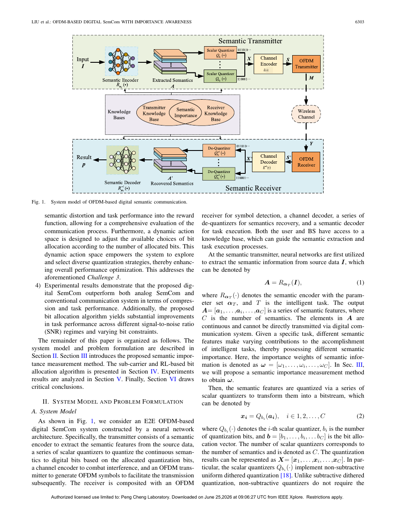
方法/架构图页：来自《OFDM-Based Digital Semantic Communication With Importance Awareness》PDF p.3。
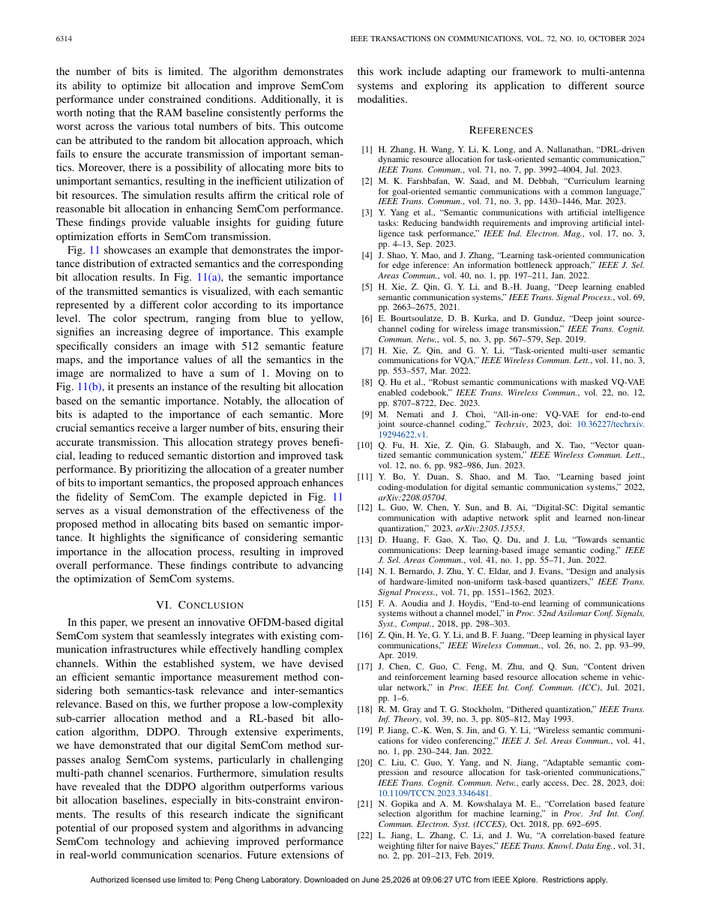
关键结果图/表页：来自《OFDM-Based Digital Semantic Communication With Importance Awareness》PDF p.14，通常包含 SNR/PSNR/MS-SSIM/BER/Accuracy/码率等结果。
局限性
信道错误到语义失真的端到端可微建模不足；依赖重要性估计和 DRL 的泛化能力。
VQ-DeepVSC: A Dual-Stage Vector Quantization Framework for Video Semantic Communication
字段 内容 作者 Yongyi Miao, Zhongdang Li, Yang Wang, Die Hu, Jun Yan, Youfang Wang 来源/年份 arXiv · arXiv 2024; IEEE TWC version identified in search · 2024 标识 arXiv 2409.03393; IEEE TWC 2026 version located but IEEE download timed out 任务 视频语义传输 是否严格数字语义通信 核心 信道处理分类 5. video VQ + recovery，误码建模中等
实验设置
项目 提取结果 数据集 视频数据集；与 H.265 和 JSCC/DeepWiVe 类方法对比。 Baseline H.265、JSCC/DeepWiVe、普通关键帧或无二阶段 VQ 变体。 评价指标 MS-SSIM、LPIPS、SNR、多径信道。 信道类型 低 SNR 与 multipath fading channel。 实验条件 adaptive key-frame extraction/interpolation + semantic VQ。
Introduction 讲述逻辑
现有进展：连续 DeepJSCC/任务导向 SemCom 已证明端到端语义传输可在低 SNR 或低带宽下优于传统分离式通信。 仍有问题：视频流冗余巨大，analog video JSCC 兼容性不足，传统 H.265 在低 SNR 下 cliff 明显。 为什么重要：数字语义通信必须进入现有 bit、调制、信道编码和硬件栈；一旦离散变量出错，语义 latent 可能发生非线性跳变。 本文方案：先语义选关键帧，再对关键帧 VQ 数字化，接收端插值恢复非关键帧。 如何解决：双阶段结构同时处理帧间冗余和帧内语义压缩，可调 index selection 控制码率。 核心观点：低 SNR/多径下 MS-SSIM 和 LPIPS 相比 H.265 有优势。 方法与数字化方案
技术路线： dual-stage VQ video SemCom。第一阶段选取/插值关键帧降低帧间冗余；第二阶段用 semantic VQ encoder/decoder 对关键帧做 index compression，并有 adjustable index selection/recovery。
实际传输单位： frame key index / VQ index。码本/离散集合： 有码本；语义向量量化用于关键帧。
传输开销推导： 视频开销约为关键帧数 $$T_k$$ 乘每帧 VQ index bits：$$B_{sem}=\sum_{t\in K}N_t\lceil\log_2K\rceil$$；帧间插值降低 $$T_k/T$$，adjustable index selection 改变 N_t。
实际数值计算实例： 论文用 bit compression ratio BCR=final bit sequence/original video bit sequence，并报告 VQ-DeepVSC BCR≈0.023，H.265 baseline≈0.024。以一个 16-frame、256×256 RGB clip 为具体代入实例，原始 bit 数为 16×256×256×3×8=25,165,824 bits。VQ-DeepVSC 在 BCR=0.023 时传输 bits≈25,165,824×0.023=578,814 bits，压缩率约 43.5×；H.265 在 0.024 时为 603,980 bits。若接论文 realistic transmission 的 LDPC rate=3/4，则 coded bits≈578,814/(3/4)=771,752；16-QAM 下 symbols≈192,938。论文内部 MSVQ 也可写成每 key frame bitstream Ls×B，其中 Ls=U×c、B=log2(codebook size)。
信道如何作用于离散变量
decoder 输入： decoder 收到关键帧的 VQ indices；错误 index 的恢复主要由 recovery module 和上下文插值缓解。
错误建模/纠错机制： 考虑低 SNR/多径性能，但 index bit error 的明确概率模型不如 BSC 类论文。
Codex 判断： 它把数字 VQ 扩展到视频，非常重要；信道错误处理仍偏经验模块。
架构图与结果图
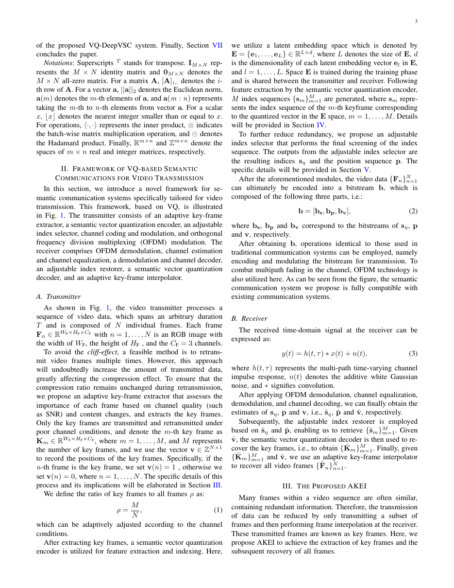
方法/架构图页：来自《VQ-DeepVSC: A Dual-Stage Vector Quantization Framework for Video Semantic Communication》PDF p.3。
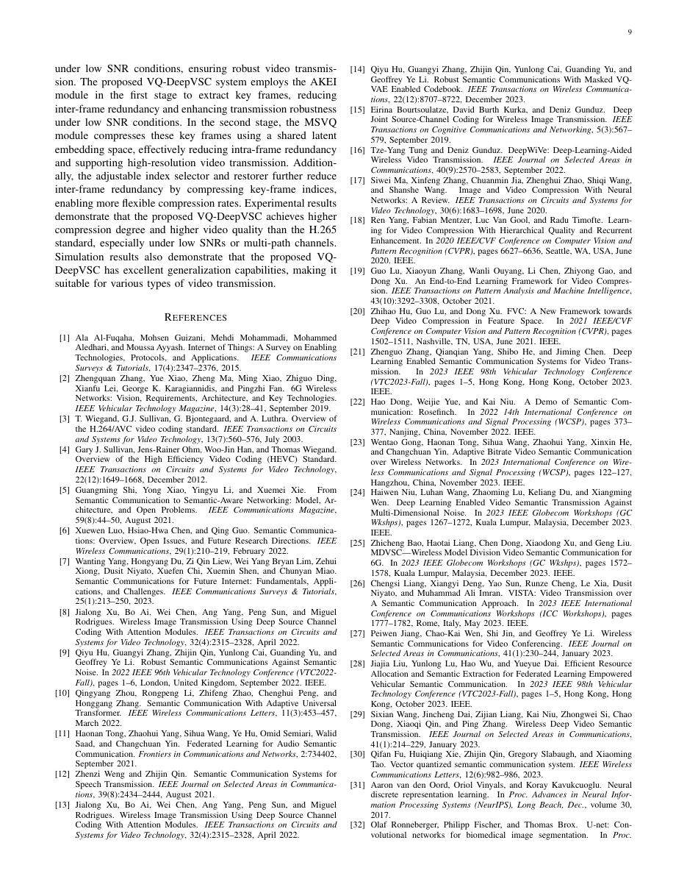
关键结果图/表页：来自《VQ-DeepVSC: A Dual-Stage Vector Quantization Framework for Video Semantic Communication》PDF p.9，通常包含 SNR/PSNR/MS-SSIM/BER/Accuracy/码率等结果。
局限性
需 IEEE 版本全文补验；arXiv 版对标准 channel coding 与 bit ledger 仍可更细。
A Hierarchical Error Protection Framework for Learnable Residual Vector Quantization in Digital Semantic Communication Systems
字段 内容 作者 Wonjung Kim, Jaein Lee, Wonjae Shin, Jungwoo Lee 来源/年份 IEEE · IEEE Globecom, 2025 · 2025 标识 DOI 10.1109/GLOBECOM59602.2025.11432246 任务 图像重建 是否严格数字语义通信 核心 信道处理分类 4. 显式建模离散错误并联合优化
实验设置
项目 提取结果 数据集 图像数据集；PSNR/MS-SSIM 实验。 Baseline RVQ、RVQ+uniform modulation、continuous reference、loss ablations。 评价指标 PSNR、MS-SSIM、CBR、SNR。 信道类型 AWGN；BSC mutual information analysis；unequal modulation。 实验条件 训练 SNR 0-10 dB；CBR 0.00391/0.0156/0.0299 等。
Introduction 讲述逻辑
现有进展：连续 DeepJSCC/任务导向 SemCom 已证明端到端语义传输可在低 SNR 或低带宽下优于传统分离式通信。 仍有问题：单阶段 VQ 扩 rate 会导致码本爆炸和 collapse；RVQ 有层级但不同 stage 重要性不同。 为什么重要：数字语义通信必须进入现有 bit、调制、信道编码和硬件栈；一旦离散变量出错，语义 latent 可能发生非线性跳变。 本文方案：提出 ResUME，把 RVQ 的层级信息和 unequal modulation 结合，按 mutual information 最大化分配保护。 如何解决：用信息瓶颈式 variational loss 减少 overfitting，并用 BSC 分析推导 modulation order 约束。 核心观点：在相同 CBR 下 RVQ+UME 提升 PSNR/MS-SSIM，特别是低 SNR。 方法与数字化方案
技术路线： ResUME / RVQ + unequal modulation。残差 VQ 多阶段逐层编码 residual；层级越早语义越重要，因此给不同 RVQ stage 分配不同 modulation order。
实际传输单位： RVQ stage index / modulation symbol。码本/离散集合： 有码本；RVQ(n,k) 表示 n-stage、每 stage k-bit codebook。
传输开销推导： RVQ(n,k) 每个位置开销为 $$nk$$ bits；若有 N 个位置，则 $$B_{sem}=Nnk$$，CBR 由 $$B_{sem}/(HWC8)$$ 得到。论文直接报告 CBR=0.00391、0.0156、0.0299 等。
实际数值计算实例： 以 Kodak 768×512 RGB 为例，原始 bit 数为 9,437,184。论文按 CBR 报告开销，CBR=0.0156 时语义 index bits 约 9,437,184×0.0156=147,220 bits，raw/source 压缩率约 64.1×；CBR=0.00391 时为 36,911 bits，压缩率 255.7×；CBR=0.0299 时为 282,171 bits，压缩率 33.4×。ResUME(4,12) 表示 4-stage residual VQ 且每 stage 12-bit codebook index，因此每个保留 latent position 为 4×12=48 bits；在 CBR=0.0156 的 147,220-bit 预算下，等价 latent positions 数约 147,220/48=3,067。UEP 调制向量如 M=[1,2,4,4] 改变各 stage 的调制保护，不改变源 index bit 总量。
信道如何作用于离散变量
decoder 输入： decoder 收到各 stage 经不同调制保护后的 indices。
错误建模/纠错机制： 显式考虑 index symbol 由 b bits 表示且经 BSC 发生错误；用 modulation order 进行层级 UEP。
Codex 判断： 它把 RVQ 结构与错误保护强度对齐，解决多阶段 index 不同重要性的问题。
架构图与结果图
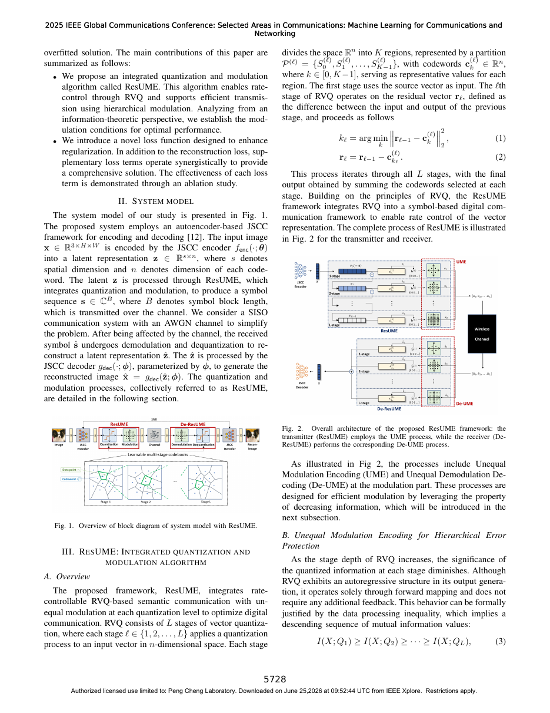
方法/架构图页：来自《A Hierarchical Error Protection Framework for Learnable Residual Vector Quantization in Digital Semantic Communication Systems》PDF p.2。
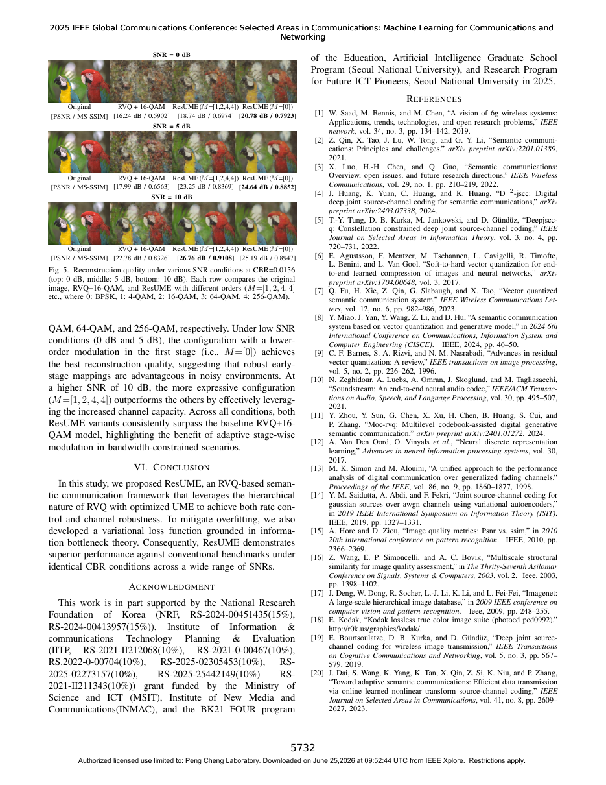
关键结果图/表页：来自《A Hierarchical Error Protection Framework for Learnable Residual Vector Quantization in Digital Semantic Communication Systems》PDF p.6，通常包含 SNR/PSNR/MS-SSIM/BER/Accuracy/码率等结果。
局限性
假设错误独立和 stage 重要性单调；真实 channel code/soft decoding 集成仍需扩展。
A Theoretically-Grounded Codebook for Digital Semantic Communications
字段 内容 作者 Lingyi Wang, Rashed Shelim, Walid Saad, Naren Ramakrishnan 来源/年份 arXiv · arXiv, 2025 · 2025 标识 arXiv 2510.07108 任务 数字语义通信码本理论 是否严格数字语义通信 核心 信道处理分类 5. 理论 bit-flip / codebook 分析
实验设置
项目 提取结果 数据集 理论与仿真实验。 Baseline 常规 VQ/codebook training、无熵正则或无 bit-flip 分析变体。 评价指标 mutual information、semantic distortion、codebook size、bit-flip robustness。 信道类型 bit-flip errors 下的 semantic distortion。 实验条件 推导 optimal codebook size 与 entropy-regularized quantization loss。
Introduction 讲述逻辑
现有进展：连续 DeepJSCC/任务导向 SemCom 已证明端到端语义传输可在低 SNR 或低带宽下优于传统分离式通信。 仍有问题：VQ 码本常经验训练，缺少语义信息论解释；K 越大不一定越好，因为 bit-flip 后误差可能更大。 为什么重要：数字语义通信必须进入现有 bit、调制、信道编码和硬件栈；一旦离散变量出错，语义 latent 可能发生非线性跳变。 本文方案：用互信息和熵正则建立 codebook 训练目标，并分析物理信道 bit-flip 造成的语义失真。 如何解决：把 semantic mapping、quantization partition 和 channel-induced distortion 放到同一理论框架。 核心观点：说明合理 K 和 entropy regularization 能改善数字语义鲁棒性。 方法与数字化方案
技术路线： theoretical codebook。把语义同义一对多映射与 VQ Voronoi partition 对应，最大化语义 feature 与 quantized index 的互信息。
实际传输单位： codebook index。码本/离散集合： 有码本；理论讨论 K 的选择。
传输开销推导： 基础开销 $$B_{sem}=N\lceil\log_2K\rceil$$；理论部分把 K 增大带来的量化信息增益与 bit-flip 造成的 semantic distortion 平衡，给出 optimal codebook size 的判断。
实际数值计算实例： 这篇理论论文同样以 Bsem=Nlog2K 作为离散语义 index 的基本开销。以 CIFAR-10 任务样本为代入实例，原始 8-bit RGB 为 24,576 bits。若 semantic encoder 产生 N=16 个 indices，K=16，则 payload=64 bits，压缩率 384×；若 K=64，则 payload=96 bits，压缩率 256×；若 N 增到 32 且 K=64，则 payload=192 bits，压缩率 128×。理论分析关注的正是这个三角关系：增大 K 或 N 可降低量化失真，但会提高每样本 bit 开销，并在 bit/index error 下扩大码字跳变风险，因此最优 codebook 不是单纯越大越好。
信道如何作用于离散变量
decoder 输入： decoder 收到可能因 bit flip 错误的 index。
错误建模/纠错机制： 明确讨论 bit-flip errors 和 semantic distortion，但偏理论，不是完整系统。
Codex 判断： 它解释了为什么“更大码本/更细 index”可能在有误码信道下反而危险。
架构图与结果图
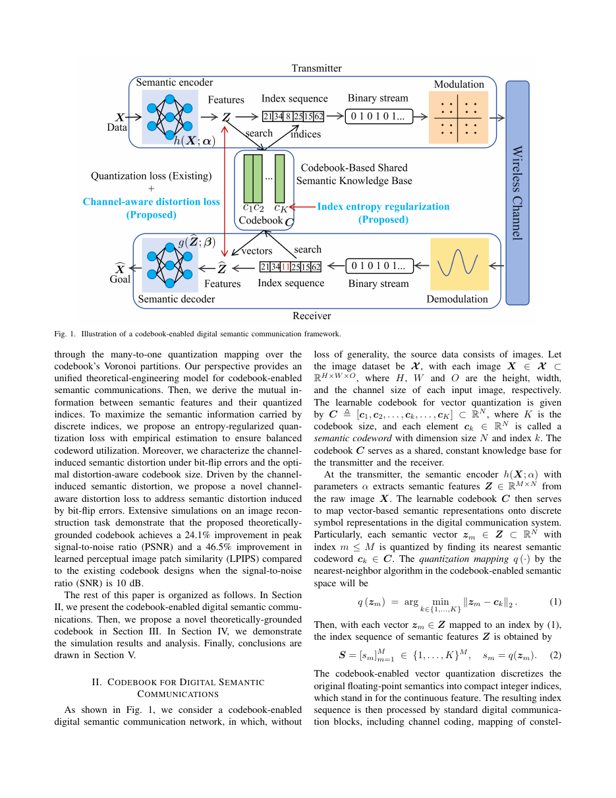
方法/架构图页：来自《A Theoretically-Grounded Codebook for Digital Semantic Communications》PDF p.2。
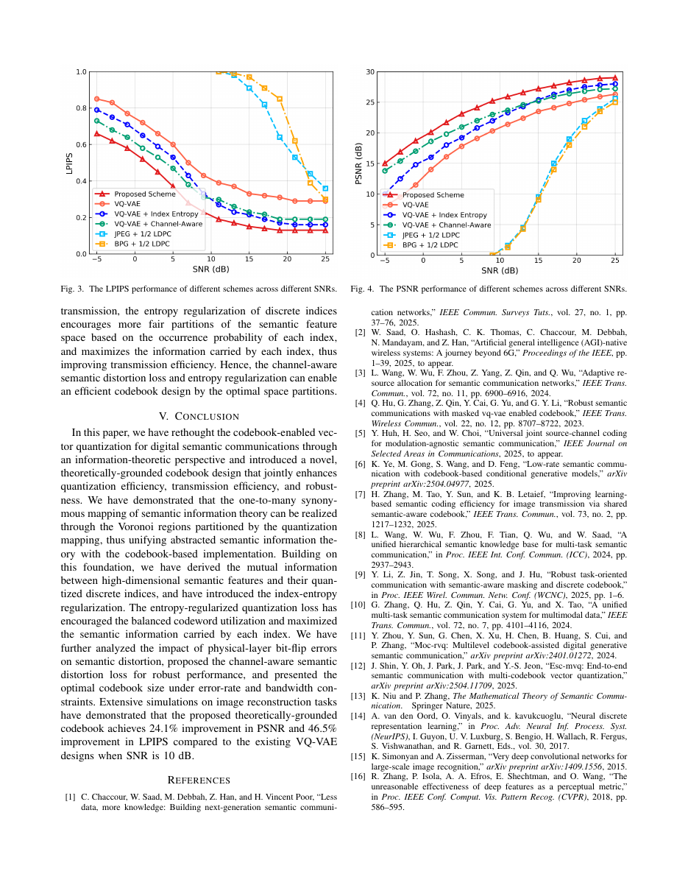
关键结果图/表页：来自《A Theoretically-Grounded Codebook for Digital Semantic Communications》PDF p.6，通常包含 SNR/PSNR/MS-SSIM/BER/Accuracy/码率等结果。
局限性
需要和具体神经架构、调制/信道编码联合验证。
Blind Training for Channel-Adaptive Digital Semantic Communications
字段 内容 作者 Yongjeong Oh, Joohyuk Park, Jinho Choi, Jihong Park, Yo-Seb Jeon 来源/年份 IEEE · IEEE Transactions on Communications, 2025 · 2025 标识 DOI 10.1109/TCOMM.2025.3585587 任务 图像/视频语义任务的 channel-adaptive 训练框架 是否严格数字语义通信 核心 信道处理分类 4. 显式建模离散错误并联合优化
实验设置
项目 提取结果 数据集 图像分类/重建等任务数据集。 Baseline 特定信道训练、BSC+VQ、BSC+SQ、BlindSC 等。 评价指标 任务性能、power consumption、SNR 泛化、参数量。 信道类型 parallel BSC 作为数字通信通用等效模型；推理时 adaptive power/modulation。 实验条件 bit-flip probabilities 作为可训练参数，训练后用通信策略匹配实际 BER。
Introduction 讲述逻辑
现有进展：连续 DeepJSCC/任务导向 SemCom 已证明端到端语义传输可在低 SNR 或低带宽下优于传统分离式通信。 仍有问题：实际系统的信道、调制和功率设计很多，逐一训练语义模型不可行。 为什么重要：数字语义通信必须进入现有 bit、调制、信道编码和硬件栈；一旦离散变量出错，语义 latent 可能发生非线性跳变。 本文方案：提出 blind training，把所有数字链路抽象为并行 BSC，训练后再用通信策略对齐 BER。 如何解决：可学习 flip probabilities 让模型自己分配 bit 重要性；推理根据 SNR 选 power/modulation。 核心观点：在多 SNR 下用单模型达到接近/优于多个专用模型的性能，并降低功耗。 方法与数字化方案
技术路线： blind parallel-BSC training。semantic encoder 输出 bits；训练时不指定具体物理信道，而用 parallel BSC 的可学习 flip probability 表征每个 bit/substream 可靠性。
实际传输单位： bit / parallel BSC output。码本/离散集合： 无 VQ 码本；可与 VQ/SQ baseline 对比。
传输开销推导： 若有 B 个 semantic bits，$$B_{sem}=B$$；每个 BSC 分支有目标 flip probability $$\mu_i$$。推理时选功率/调制使实际 BER 接近 $$\mu_i$$，符号开销随所选 $$M_i$$ 为 $$\sum_i b_i/\log_2M_i$$。
实际数值计算实例： 论文给出 encoder 输出长度：MNIST 为 32，CIFAR-10/STL-10 为 96。以 CIFAR-10 为例，原始 8-bit RGB 为 32×32×3×8=24,576 bits，语义 bitstream 长度为 96 bits，压缩率为 24,576/96=256×。若目标平均传输率 Rtarget=4 bits/channel use，则 96 bits 约需 96/4=24 channel symbols；若 Rtarget=6，则约需 16 symbols。论文中的玩具例子也给出 16-bit 序列希望映射为 4 个 symbols，即平均 4 bits/symbol；候选调制分配如 {8,4,2,2} 可在 4 个 symbols 内传完 16 bits，同时让更重要的 bit 使用更可靠的低阶调制。
信道如何作用于离散变量
decoder 输入： decoder 收到经过 BSC 扰动的 bits；实际部署中接收 hard bits，其错误率由调制/功率匹配。
错误建模/纠错机制： 非常明确地处理 bit error；它不要求知道具体信道，只要求实际链路能实现目标 BER。
Codex 判断： 这是“数字语义变量经信道出错”问题最直接的解法之一。
架构图与结果图
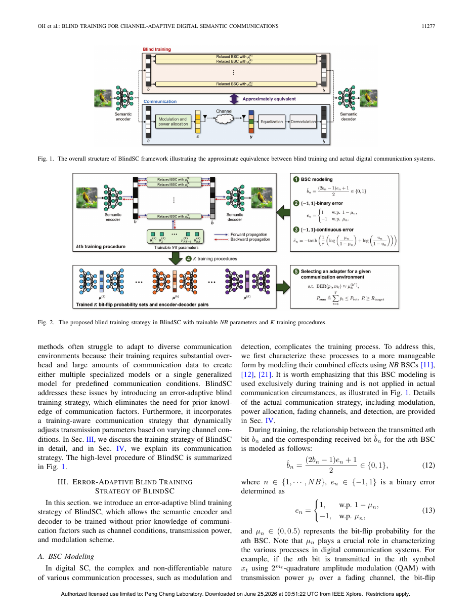
方法/架构图页：来自《Blind Training for Channel-Adaptive Digital Semantic Communications》PDF p.4。
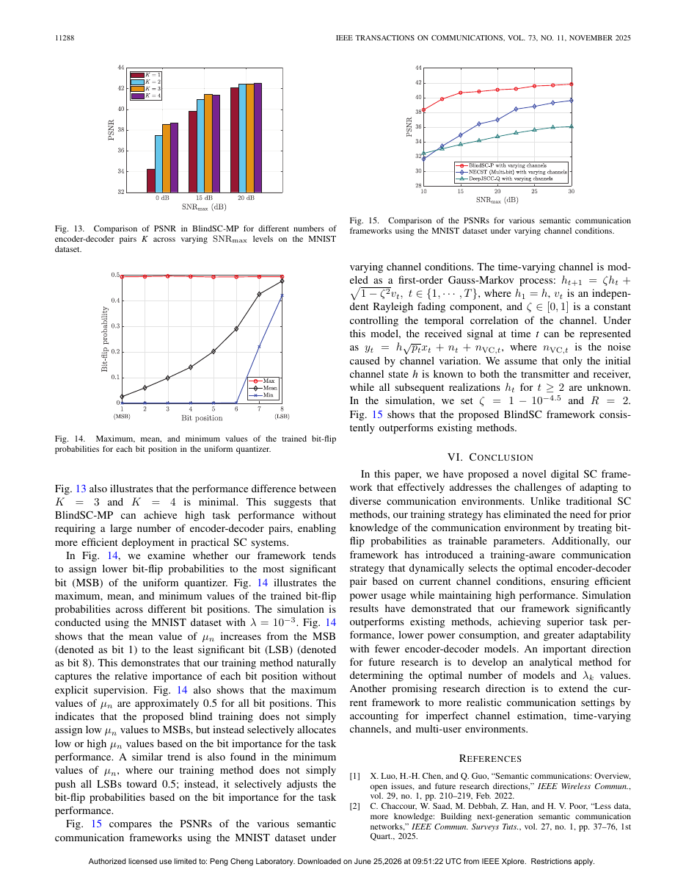
关键结果图/表页：来自《Blind Training for Channel-Adaptive Digital Semantic Communications》PDF p.15，通常包含 SNR/PSNR/MS-SSIM/BER/Accuracy/码率等结果。
局限性
等效 BSC 忽略 burst error、软译码和相关错误；BER 匹配表需要校准。
Channel-Aware Vector Quantization for Robust Semantic Communication on Discrete Channels
字段 内容 作者 Zian Meng, Qiang Li, Wenqian Tang, Mingdie Yan, Xiaohu Ge 来源/年份 arXiv · arXiv, 2025 · 2025 标识 arXiv 2510.18604 任务 图像语义重建，离散信道 是否严格数字语义通信 核心 信道处理分类 4. 显式建模离散错误并联合优化
实验设置
项目 提取结果 数据集 图像重建数据集。 Baseline VQJSCC without CAVQ、state-of-the-art digital SemCom baselines。 评价指标 重建质量、digital cliff effect、不同 modulation/discrete channel 下鲁棒性。 信道类型 discrete memoryless channel；modulation constellation transition probabilities。 实验条件 多 modulation schemes 和 channel transition matrix。
Introduction 讲述逻辑
现有进展：连续 DeepJSCC/任务导向 SemCom 已证明端到端语义传输可在低 SNR 或低带宽下优于传统分离式通信。 仍有问题：普通 VQ 假设 index 无误或等概率错误；一旦 index 错到远端 codeword，语义失真很大。 为什么重要：数字语义通信必须进入现有 bit、调制、信道编码和硬件栈；一旦离散变量出错，语义 latent 可能发生非线性跳变。 本文方案：把 channel transition probabilities 纳入 codebook 优化，使高概率混淆的符号语义距离更近。 如何解决：多码本 alignment 进一步解决 codebook order 与 modulation order 不匹配。 核心观点：显著缓解 digital cliff effect，在多调制方案下优于现有数字 SemCom。 方法与数字化方案
技术路线： CAVQ / channel-aware codebook。语义 feature 先 VQ 离散化，再直接映射到 modulation symbols；CAVQ 在量化距离中加入信道转移概率，让易混符号对应语义相近 codewords。
实际传输单位： codebook index / modulation symbol。码本/离散集合： 有码本；多码本 alignment 处理 codebook order 与 modulation order 不匹配。
传输开销推导： 单码本时 $$B_{sem}=N\lceil\log_2K\rceil$$；若 modulation order 为 M 且 K 不匹配，多子信道分解后总开销为各子码本索引 bits 之和。论文强调有效开销与 constellation order 对齐。
实际数值计算实例： 论文 CIFAR-10 输入为 32×32×3，原始 8-bit RGB 为 24,576 bits。方法定义 encoder 输出 N 个 feature vectors，每个 position 在 l 个子向量上量化；codebook order 为 mb 时，每个 index 需要 mb bits，因此总 payload 为 N×l×mb bits。论文实验展示 mb=4/6/8，对应 K=16/64/256，并与 16-QAM/64-QAM/256-QAM 比较；Fig.7/8 中 l=3。若以常见 CIFAR latent 网格 N=64、l=3、mb=6 为具体工作点，则 payload=64×3×6=1,152 bits，压缩率为 24,576/1,152=21.3×；若 mb=8、l=3，则 payload=1,536 bits，压缩率 16×。当 mc=6 的 64-QAM 与 mb=6 对齐时，1,152 bits 刚好是 192 个 64-QAM symbols；当 mb=8 配 64-QAM 时，index bit 会跨 symbol 拆分，论文用 multi-codebook 子信道处理这种错位。
信道如何作用于离散变量
decoder 输入： decoder 直接接收可能错误的 symbol/index，并映射到对应 codeword。
错误建模/纠错机制： 非常明确地处理 index/symbol error：不是防止错误，而是让错误落到语义相近 codeword。
Codex 判断： 这是 VQ 数字语义通信里真正击中“index 出错跳到完全不同向量”痛点的论文。
架构图与结果图
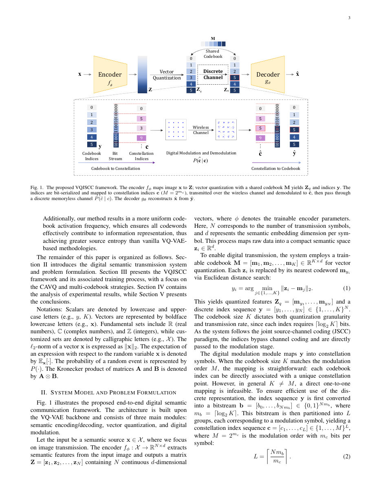
方法/架构图页：来自《Channel-Aware Vector Quantization for Robust Semantic Communication on Discrete Channels》PDF p.3。
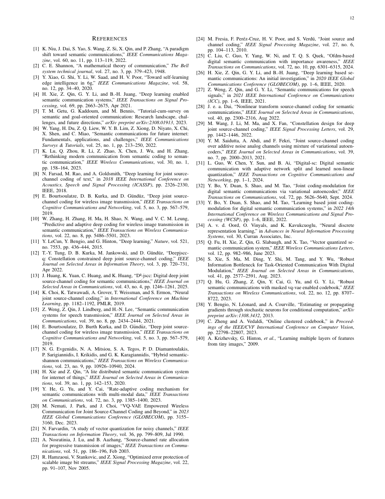
关键结果图/表页：来自《Channel-Aware Vector Quantization for Robust Semantic Communication on Discrete Channels》PDF p.12，通常包含 SNR/PSNR/MS-SSIM/BER/Accuracy/码率等结果。
局限性
需要已知或估计信道转移矩阵；复杂非平稳信道下 codebook 可能需要重训/自适应。
Conditional Entropy-Constrained Multi-Stage Vector Quantization for Semantic Communication
字段 内容 作者 Junyong Shin, Jihun Park, Jinsung Park, Yo-Seb Jeon 来源/年份 IEEE · IEEE Wireless Communications Letters, 2025/2026 · 2025 标识 IEEE Xplore 任务 图像语义传输/重建 是否严格数字语义通信 核心 信道处理分类 1. VQ 源编码与 rate control
实验设置
项目 提取结果 数据集 CIFAR-10 等。 Baseline single-stage VQ、MSVQ、ECVQ、现有 VQ-based SC。 评价指标 task performance、rate-distortion、bitrate、codeword utilization。 信道类型 数字语义链路；主要关注 rate-distortion，不强调物理信道错误。 实验条件 selectively activating VQ modules 支持 multi-rate。
Introduction 讲述逻辑
现有进展：连续 DeepJSCC/任务导向 SemCom 已证明端到端语义传输可在低 SNR 或低带宽下优于传统分离式通信。 仍有问题：单阶段 VQ fixed-rate 且大码本复杂，MSVQ 虽灵活但不利用非均匀 codeword 分布。 为什么重要：数字语义通信必须进入现有 bit、调制、信道编码和硬件栈；一旦离散变量出错，语义 latent 可能发生非线性跳变。 本文方案：把 MSVQ 与 conditional entropy-constrained VQ 结合，实现更细粒度 rate control。 如何解决：Markovian stage model 让每 stage index 码长随条件概率缩短。 核心观点：在 CIFAR-10 等任务上用更低复杂度/码率获得更好语义 fidelity。 方法与数字化方案
技术路线： CEC-MSVQ。多阶段 VQ 逐步量化 residual；条件熵模型显式估计 stage-wise code distribution，训练 rate-distortion objective。
实际传输单位： multi-stage VQ index / entropy-coded bitstream。码本/离散集合： 多阶段码本；每 stage 小 codebook。
传输开销推导： 原始 MSVQ 开销 $$B=\sum_l N_l\log_2K_l$$；加入 conditional entropy coding 后期望码长 $$E[B]=\sum_l H(I_l|I_{<l})$$，低于固定长度索引。multi-rate 通过启用前 L' 个 stage 控制。
实际数值计算实例： 论文 CIFAR-100 特征维度 M=512，STL-10 特征维度 M=4608，sub-vector dimension D=4，stage 数 S=2，codebook K=256。以 CIFAR-100 为例，原始 32×32×3×8=24,576 bits；subvector 数为 M/D=512/4=128，固定长度 MSVQ payload 为 128×2×log2(256)=128×2×8=2,048 bits，压缩率 12×。STL-10 原始 bit 数为 96×96×3×8=221,184，subvector 数 4608/4=1,152，fixed payload=1,152×2×8=18,432 bits，压缩率同样 12×。CEC 的 Huffman/conditional entropy coding 会把每 stage 的 8-bit 固定 index 替换成接近 H(Is|I<s) 的变长码，因此实际 bit 数低于上述 fixed-length 上界。
信道如何作用于离散变量
decoder 输入： decoder 接收 entropy-decoded indices，默认 bitstream 正确。
错误建模/纠错机制： 没有重点建模 bit/index error；熵编码甚至可能放大 bit error 的同步问题，需要外部保护。
Codex 判断： 它是 rate-control/entropy coding 路线的重要论文，但不解决信道错误跳变。
架构图与结果图
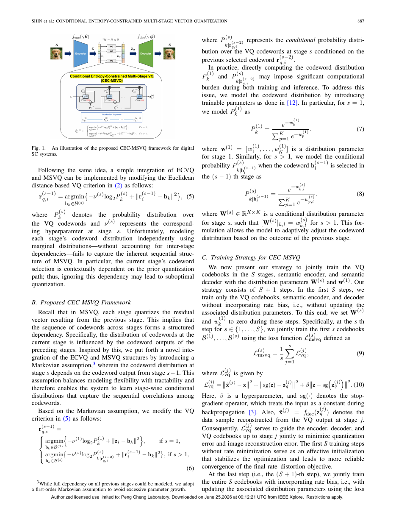
方法/架构图页：来自《Conditional Entropy-Constrained Multi-Stage Vector Quantization for Semantic Communication》PDF p.3。
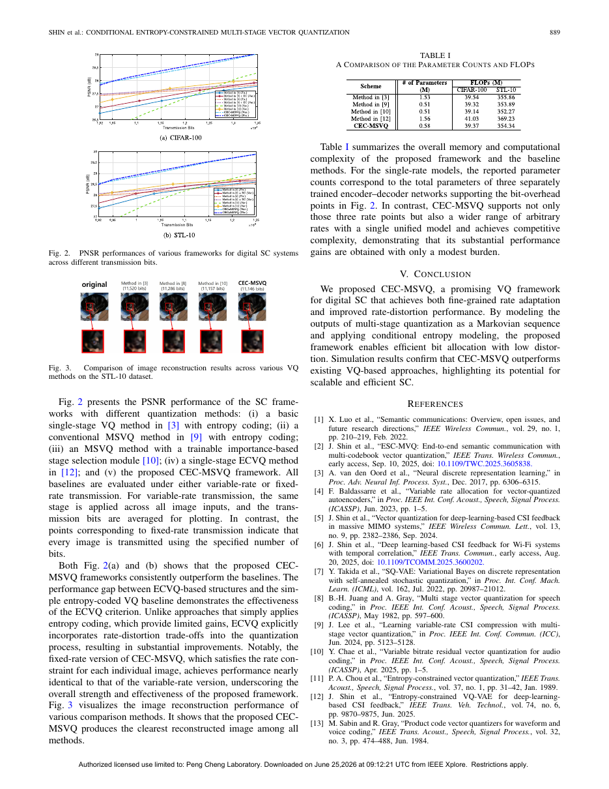
关键结果图/表页：来自《Conditional Entropy-Constrained Multi-Stage Vector Quantization for Semantic Communication》PDF p.5，通常包含 SNR/PSNR/MS-SSIM/BER/Accuracy/码率等结果。
局限性
缺少 noisy channel 下的同步/误码恢复分析。
Digital Semantic Communications with Variable Product Quantization for Image Transmission
字段 内容 作者 Junxiao Liang, Fengyu Wang, Yuan Zheng, Wenjun Xu, Xiaodong Xu, Jincheng Dai 来源/年份 IEEE · IEEE WCNC, 2025 · 2025 标识 DOI 10.1109/WCNC61545.2025.10978348 任务 图像传输 是否严格数字语义通信 核心 信道处理分类 2. PQ 特征加数字链路
实验设置
项目 提取结果 数据集 图像重建数据集。 Baseline VQ-based digital SemCom、DeepJSCC-Q、Seb/传统方案。 评价指标 LPIPS、PSNR/MS-SSIM、SNR 与 bandwidth 多场景。 信道类型 数字链路；面向多 bandwidth 和 SNR。 实验条件 报告 high SNR 下 LPIPS 提升 32.4%，SNR=2 dB 提升 62.2%。
Introduction 讲述逻辑
现有进展：连续 DeepJSCC/任务导向 SemCom 已证明端到端语义传输可在低 SNR 或低带宽下优于传统分离式通信。 仍有问题：单 VQ codebook 容量与灵活性不足，固定 modulation/order 难适配多带宽。 为什么重要：数字语义通信必须进入现有 bit、调制、信道编码和硬件栈；一旦离散变量出错，语义 latent 可能发生非线性跳变。 本文方案：引入 VPQ，用多个轻量 codebook 提升表示能力，并按语义熵动态调码率。 如何解决：PQ 避免单大码本指数增长，entropy-aware 模块让低复杂度数字 SemCom 支持多 rate。 核心观点：相对现有 VQ-based digital SemCom 在 LPIPS 上有明显改善。 方法与数字化方案
技术路线： VPQ-SemCom。语义 feature 被分成多个子向量，用 product quantization 的多个轻量 codebooks 表示；rate adaptation 根据 feature entropy 动态调整长度/码率。
实际传输单位： PQ sub-index / bitstream。码本/离散集合： 多 lightweight codebooks；每个子空间一个 codebook。
传输开销推导： 若 feature 被分成 m 个子向量、每个子码本大小 K_j，则每个 token 开销 $$\sum_{j=1}^m\lceil\log_2K_j\rceil$$；若保留 N 个 token，则 $$B_{sem}=N\sum_j\lceil\log_2K_j\rceil$$。rate adaptation 改变 N 或子码本使用，论文以多 bitrate/SNR 下性能体现。
实际数值计算实例： 以论文 ImageNet/Kodak 256×256 crop 设置为例，原始 8-bit RGB 为 256×256×3×8=1,572,864 bits。VPQ-SemCom 的 rate 以 bpp 计，Fig.3(b) 中 VPQ-SemCom 约 0.38 bpp，因此源 payload 为 0.38×256×256=24,904 bits，raw/source 压缩率为 63.2×。论文设置 downsampling factor f=16，latent 网格约为 16×16=256 positions；有 L=16 个 subcodebooks，每个 Vi=256，即每个 sub-index 8 bits。若所有 16 个 subcodebooks 都使用，单 latent position 需要 16×8=128 bits；rate module 通过选择前 myi 个 subcodebooks 降低到目标 bpp。side information rate m≈0.015 bpp 时，额外侧信息约 0.015×65,536=983 bits。
信道如何作用于离散变量
decoder 输入： decoder 收到经数字系统恢复后的 PQ sub-indices。
错误建模/纠错机制： 论文主要关注压缩/码本表示；信道错误多由传统数字链路吸收，未显式训练 index error。
Codex 判断： 核心贡献是“更好的数字化表示与 rate adaptation”，不是错误 index 的语义鲁棒性。
架构图与结果图
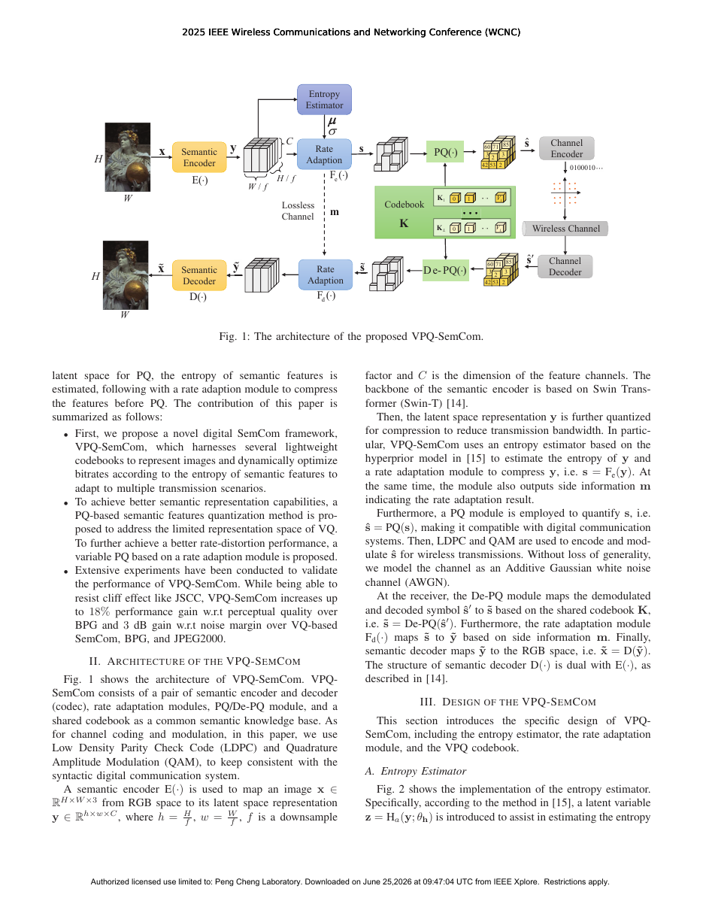
方法/架构图页：来自《Digital Semantic Communications with Variable Product Quantization for Image Transmission》PDF p.2。
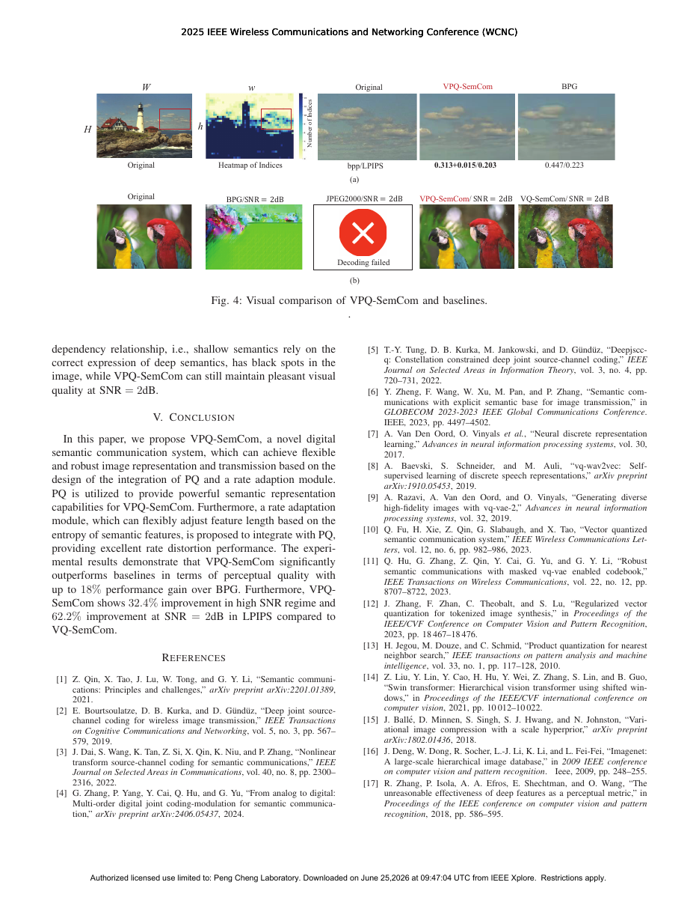
关键结果图/表页：来自《Digital Semantic Communications with Variable Product Quantization for Image Transmission》PDF p.6，通常包含 SNR/PSNR/MS-SSIM/BER/Accuracy/码率等结果。
局限性
需要与 CAVQ/UEP 类方法结合，才能完整处理 sub-index bit error。
Digital-SC: Digital Semantic Communication With Adaptive Network Split and Learned Non-Linear Quantization
字段 内容 作者 Lei Guo, Wei Chen, Yuxuan Sun, Bo Ai 来源/年份 IEEE · IEEE Transactions on Cognitive Communications and Networking, 2025 · 2025 标识 IEEE Xplore 任务 device-edge 协同推理/图像分类 是否严格数字语义通信 核心 信道处理分类 2. 数字特征加传统链路
实验设置
项目 提取结果 数据集 CIFAR-10、Mini-ImageNet。 Baseline 无量化/线性量化、固定 split、固定 feature 维度、传统 edge inference baseline。 评价指标 分类 accuracy、通信开销、计算开销、不同 channel/input 约束下性能。 信道类型 数字无线链路；learned non-linear quantization 输出 bit sequences。 实验条件 自适应选择 split point 与 transmitted feature dimension。
Introduction 讲述逻辑
现有进展：连续 DeepJSCC/任务导向 SemCom 已证明端到端语义传输可在低 SNR 或低带宽下优于传统分离式通信。 仍有问题：把完整 DNN 放在端侧太重，把原图传到边缘又太耗带宽；连续 feature 也不适合数字链路。 为什么重要：数字语义通信必须进入现有 bit、调制、信道编码和硬件栈；一旦离散变量出错，语义 latent 可能发生非线性跳变。 本文方案：用可学习非线性量化和自适应网络切分，在 device-edge 间只传必要中间语义 bits。 如何解决：SLL 约束语义错误，policy network 选择 split/feature 数，结构化剪枝降低传输维度。 核心观点：在 CIFAR-10/Mini-ImageNet 上在相近精度下显著降低通信/计算开销。 方法与数字化方案
技术路线： learned non-linear quantization。DNN 在设备端切分，设备输出中间语义 feature；非线性可训练量化 levels 将 feature 变为 bit sequence，并通过 structured pruning 降维。
实际传输单位： bit sequence / quantized intermediate feature。码本/离散集合： 无 VQ 码本；有码字意义上的 learned quantization levels。
传输开销推导： 若切分层输出维度为 $$D_s$$、剪枝后保留 $$D_r$$、每维量化 $$b$$ bits，则 $$B_{sem}=D_r b$$；策略网络实际改变 $$D_r$$ 与 split，使 CBR 随输入和信道约束变化。
实际数值计算实例： 论文给出一般开销为 w2×h2×z×q bits，其中 q 是每个量化输出的 bit-depth。以 CIFAR-10 32×32×3 为例，原始 RGB bit 数为 24,576 bits。文中图像重建比较中，传输 feature 使用 40 channel uses，并采用 2-bit quantization，因此可按 40×2=80 bits 计算实际语义 payload；压缩率为 24,576/80=307.2×。论文的 pruning ablation 还给出通道数从 z=128 剪到 z=13 的设置；在同一空间尺寸和 q=2 下，payload 比例变为 13/128=10.16%，即仅保留约十分之一的语义通道开销。
信道如何作用于离散变量
decoder 输入： edge decoder 收到经数字系统恢复的 quantized feature bit sequence。
错误建模/纠错机制： 论文主要假设数字链路能传输 bit sequence；对 bit error 后 feature 值跳变没有像 BSC/soft decoding 那样端到端建模。
Codex 判断： 严格数字化且有实际开销控制，但信道误码机制偏弱，更多是边缘推理压缩论文。
架构图与结果图
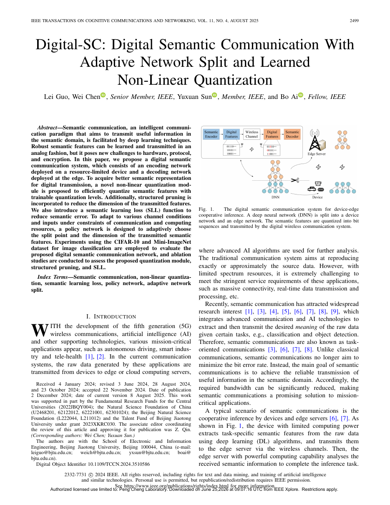
方法/架构图页：来自《Digital-SC: Digital Semantic Communication With Adaptive Network Split and Learned Non-Linear Quantization》PDF p.1。
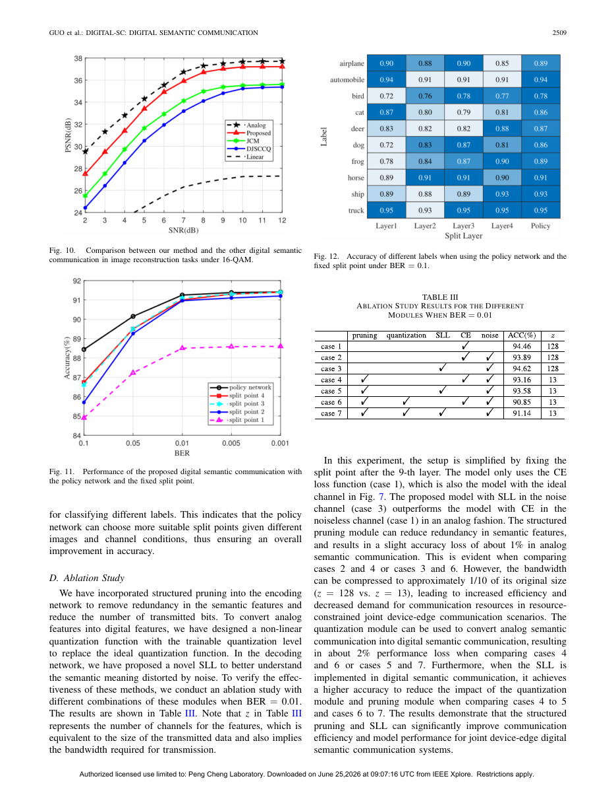
关键结果图/表页：来自《Digital-SC: Digital Semantic Communication With Adaptive Network Split and Learned Non-Linear Quantization》PDF p.11，通常包含 SNR/PSNR/MS-SSIM/BER/Accuracy/码率等结果。
局限性
缺少显式 BER/UEP/index error 分析；对复杂无线链路的鲁棒性不如专门 channel-adaptive DSC。
ESC-MVQ: End-to-End Semantic Communication With Multi-Codebook Vector Quantization
字段 内容 作者 Junyong Shin, Yongjeong Oh, Jinsung Park, Joohyuk Park, Yo-Seb Jeon 来源/年份 IEEE · IEEE Transactions on Wireless Communications, 2025/2026 · 2025 标识 DOI 10.1109/TWC.2025.3605838 任务 图像重建 是否严格数字语义通信 核心 信道处理分类 4. 显式建模离散错误并联合优化
实验设置
项目 提取结果 数据集 CIFAR-100、STL-10 等。 Baseline BSC+VQ、BSC+SQ、BlindSC、single-codebook ESC-SVQ、Codebook Selection。 评价指标 PSNR、BER matching、参数量、SNR 曲线。 信道类型 parallel BSC training；AWGN/Rayleigh inference；adaptive modulation/power。 实验条件 BSC flip probability sampled U[0,0.1]；Rayleigh SNR 表映射。
Introduction 讲述逻辑
现有进展：连续 DeepJSCC/任务导向 SemCom 已证明端到端语义传输可在低 SNR 或低带宽下优于传统分离式通信。 仍有问题：单一码本无法同时适应宽 SNR；多个专用模型内存大。 为什么重要：数字语义通信必须进入现有 bit、调制、信道编码和硬件栈；一旦离散变量出错，语义 latent 可能发生非线性跳变。 本文方案：联合训练多个 VQ codebooks 与 bit-flip probabilities，用单 encoder-decoder 覆盖多信道。 如何解决：JCAMP/JCAP 在推理时联合优化 codebook assignment、modulation 和 power。 核心观点：在 AWGN/Rayleigh 下用单模型超过多种数字 baseline，并验证 measured BER 与目标概率匹配。 方法与数字化方案
技术路线： multi-codebook VQ + JCAMP/JCAP。一个 encoder-decoder 对，多套 VQ codebooks，每套 codebook 对应不同 bit-flip probability/鲁棒性；推理时按信道为 sub-vector 选 codebook、modulation 和 power。
实际传输单位： codebook index / bit / symbol。码本/离散集合： 多码本 V；每个 sub-vector 可以选择不同 codebook。
传输开销推导： 若有 N 个 sub-vectors、选择第 v 个码本大小 K_v，则 $$B_{sem}=\sum_i\lceil\log_2K_{v_i}\rceil$$；JCAMP 还选择 modulation order 和 power，使实际 BER 匹配训练得到的 $$\mu_{i,v}$$。
实际数值计算实例： 论文明确定义压缩比 ψ=transmission bits/(C×H×W×8)，并在 CIFAR-10/CIFAR-100 与 STL-10 上使用 ψ=3/64。CIFAR-100 图像为 3×32×32，原始 bit 数 24,576，因此传输 semantic bits 为 24,576×3/64=1,152 bits。论文每个 VQ subvector index 使用 B=9 bits，所以 index 数约 1,152/9=128 个；rate constraint R=4 bits/symbol 时，理想符号数为 1,152/4=288 symbols。STL-10 为 3×96×96，原始 bit 数 221,184，同样 ψ 下传输 bit 数为 10,368 bits。多码本数量 V=5 改变的是不同 μ 区间 bit 的保护与调制分配，不改变 ψ 给定的源 bit 开销。
信道如何作用于离散变量
decoder 输入： decoder 接收经 BSC/实际链路扰动的 indices/bits，而非假设完全可靠。
错误建模/纠错机制： 非常明确地处理 VQ index/bit error：错误概率进入码本训练，推理用 BER matching 让实际错误分布和训练一致。
Codex 判断： 这是目前最强的“码本选择 + 调制功率 + bit flip”联合优化代表。
架构图与结果图
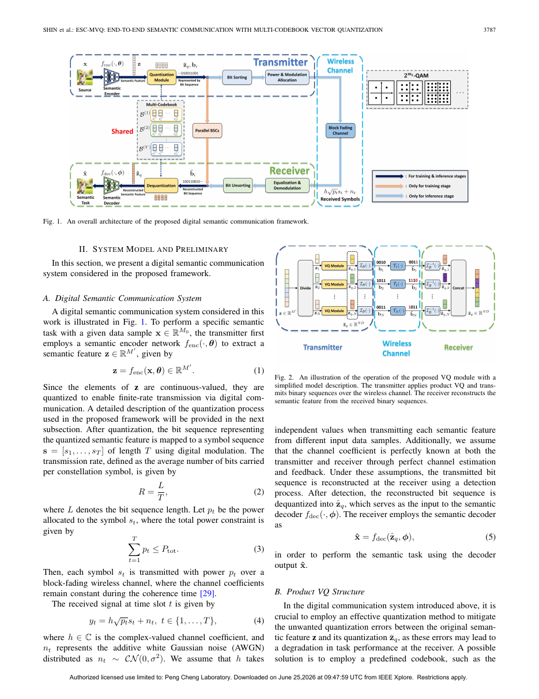
方法/架构图页：来自《ESC-MVQ: End-to-End Semantic Communication With Multi-Codebook Vector Quantization》PDF p.3。
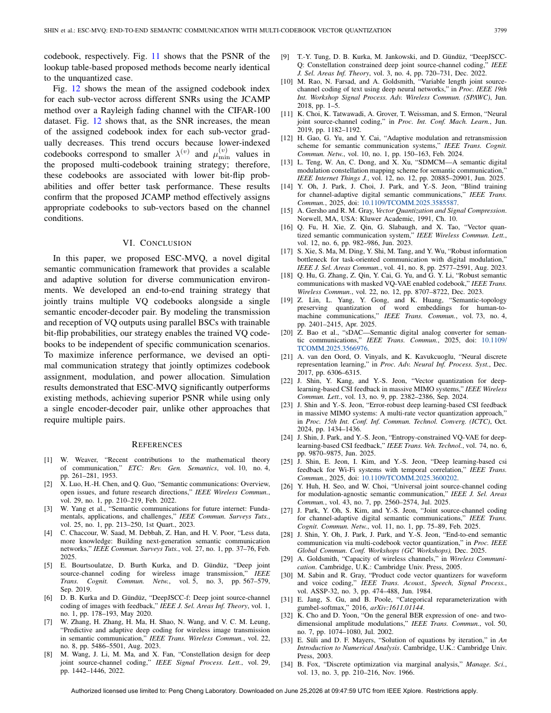
关键结果图/表页：来自《ESC-MVQ: End-to-End Semantic Communication With Multi-Codebook Vector Quantization》PDF p.15，通常包含 SNR/PSNR/MS-SSIM/BER/Accuracy/码率等结果。
局限性
需要维护多码本和查表；BER 独立假设对 burst/correlated error 仍有限。
From Analog to Digital: Multi-Order Digital Joint Coding-Modulation for Semantic Communication
字段 内容 作者 Guangyi Zhang, Pujing Yang, Yunlong Cai, Qiyu Hu, Guanding Yu 来源/年份 IEEE · IEEE Transactions on Communications, 2025 · 2025 标识 IEEE Xplore 任务 图像语义传输，多阶数字调制 是否严格数字语义通信 核心 信道处理分类 4. 显式建模离散错误并联合优化
实验设置
项目 提取结果 数据集 图像重建数据集；NTSCC 体系下实验。 Baseline Analog NTSCC、传统数字压缩+信道编码、固定调制/无替代训练变体。 评价指标 PSNR、MS-SSIM、LPIPS、SNR 和 modulation order 曲线。 信道类型 数字调制/解调；多阶 QAM/PSK；训练中用替代噪声近似不可导模块。 实验条件 多 modulation order 与 SNR 测试。
Introduction 讲述逻辑
现有进展：连续 DeepJSCC/任务导向 SemCom 已证明端到端语义传输可在低 SNR 或低带宽下优于传统分离式通信。 仍有问题：analog JSCC 性能好但不兼容数字系统；硬调制不可导阻碍端到端训练。 为什么重要：数字语义通信必须进入现有 bit、调制、信道编码和硬件栈；一旦离散变量出错，语义 latent 可能发生非线性跳变。 本文方案：用 substitution training 近似 modulation/demodulation，使训练模型可部署到真实多阶数字调制。 如何解决：层级降维进一步减少 transmitted symbols，同时保持语义质量。 核心观点：在多阶调制下缩小与 analog SemCom 的差距，并优于直接量化式数字方案。 方法与数字化方案
技术路线： MDJCM。在 NTSCC 中加入多阶 modulation/demodulation 模块；训练时把调制看作受约束量化并加入 scaling 与人工噪声。
实际传输单位： digital constellation symbol。码本/离散集合： 无 VQ 码本；离散集合由 modulation constellation 决定。
传输开销推导： 每个 channel use 承载 $$\log_2 M$$ bits，对 n 个符号 $$B_{sem}=n\log_2 M$$；论文重点比较相同 bandwidth ratio 下多阶调制性能，压缩率由 NTSCC latent 维度和 M 决定。
实际数值计算实例： 论文把源编码器输出的熵模型 rate 用来控制 channel bandwidth ratio，定义 CBR ρ=ns/nx，其中 ns 是传输 channel symbols 数，nx 是输入源符号数。以 Kodak 图像 768×512 RGB 为例，nx=768×512×3=1,179,648，原始 8-bit 数据量为 9,437,184 bits。论文 Fig.13 使用平均 CBR=0.0625，因此 channel symbols 数 ns=0.0625×1,179,648=73,728 symbols。若采用 16-QAM，则等价 payload 为 73,728×4=294,912 bits，对 raw bit 的压缩率为 9,437,184/294,912=32×；若采用 64-QAM，则 payload 为 442,368 bits，压缩率为 21.3×。传统 BPG+LDPC 在 SNR=10 dB 的参照链路使用 LDPC rate=2/3 和 16-QAM，因此同一 294,912 coded bits 只对应 196,608 source bits。
信道如何作用于离散变量
decoder 输入： decoder 接收经过数字调制信道后的符号判决/等效 latent。
错误建模/纠错机制： 显式把调制错误作为训练近似的一部分，但 bit-level mapping 不如 sDMCM/UEP 细。
Codex 判断： 它解决“可导训练 vs 真数字调制”关键矛盾，是从 analog JSCC 转向数字 JSCC 的代表。
架构图与结果图
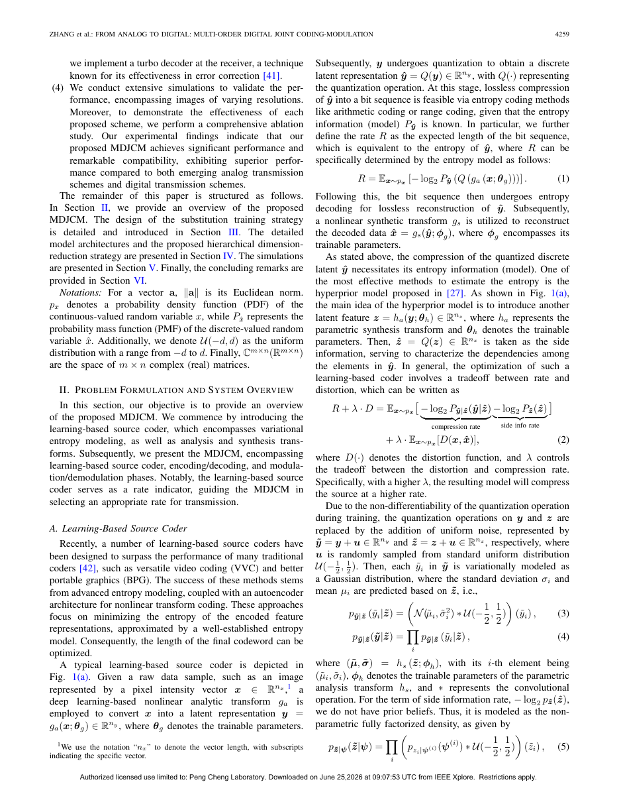
方法/架构图页：来自《From Analog to Digital: Multi-Order Digital Joint Coding-Modulation for Semantic Communication》PDF p.3。
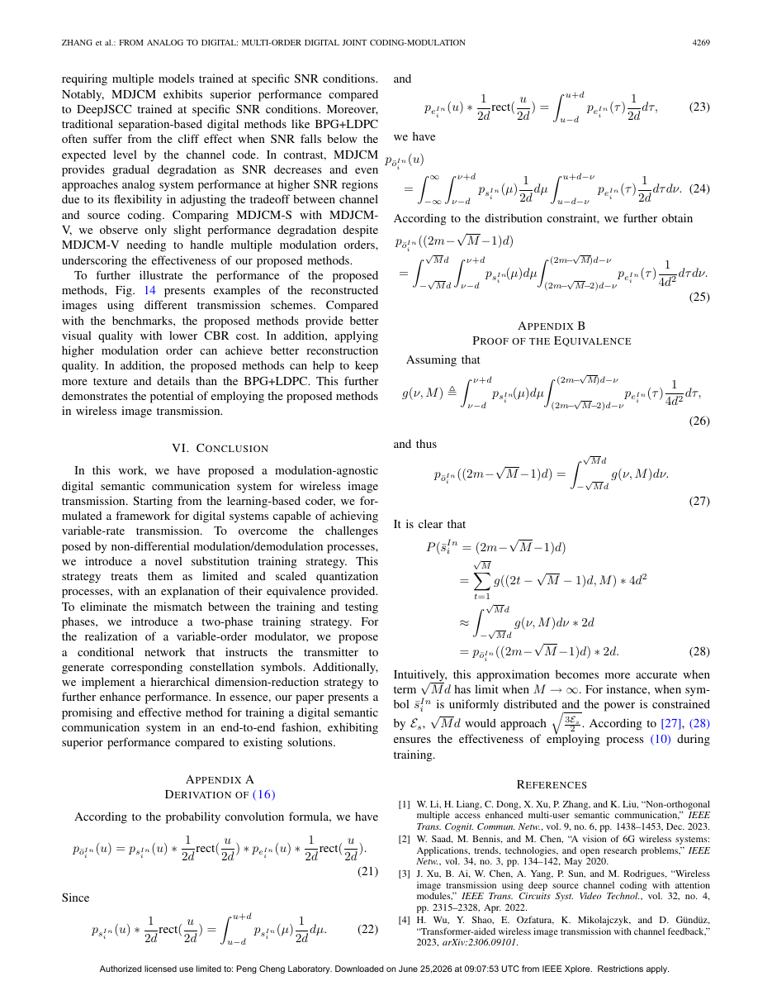
关键结果图/表页：来自《From Analog to Digital: Multi-Order Digital Joint Coding-Modulation for Semantic Communication》PDF p.13，通常包含 SNR/PSNR/MS-SSIM/BER/Accuracy/码率等结果。
局限性
替代训练与实际硬件误差之间仍有 gap；未深入优化 bit-label 与语义重要性的对应关系。
Fully Learnable Multi-Rate Quantization for Digital Semantic Communication Systems
字段 内容 作者 Minhoe Kim, Dong Jin Ji 来源/年份 IEEE · IEEE Wireless Communications Letters, 2025 · 2025 标识 DOI 10.1109/LWC.2025.3581374 任务 图像传输 是否严格数字语义通信 核心 信道处理分类 4. 显式建模离散错误并联合优化
实验设置
项目 提取结果 数据集 ImageNet。 Baseline VQ-based baselines、固定 rate 量化方法。 评价指标 SSIM、PSNR、复杂度、multi-rate 性能。 信道类型 Rayleigh、Rician fading；端到端 channel noise 训练。 实验条件 temperature-controlled concrete distribution；masking 支持 multi-rate。
Introduction 讲述逻辑
现有进展：连续 DeepJSCC/任务导向 SemCom 已证明端到端语义传输可在低 SNR 或低带宽下优于传统分离式通信。 仍有问题：VQ 虽兼容数字系统，但码本庞大、不可导且受 channel noise 影响明显。 为什么重要：数字语义通信必须进入现有 bit、调制、信道编码和硬件栈；一旦离散变量出错，语义 latent 可能发生非线性跳变。 本文方案：用 Concrete 分布替代硬 VQ，保持端到端可导并支持 multi-rate。 如何解决：温度控制软硬程度，mask 控制 rate，训练中加入 channel noise。 核心观点：ImageNet 上在 Rayleigh/Rician 下 SSIM/PSNR 超过 VQ baseline。 方法与数字化方案
技术路线： ConcreteSC。不用大 VQ codebook，而用 temperature-controlled concrete distributions 做可微离散化；masking 控制 rate。
实际传输单位： learned quantized bits / concrete categorical variables。码本/离散集合： 无大码本；用可学习 concrete distribution 近似离散选择。
传输开销推导： 若 mask 后保留 L 个离散变量、每个变量 b bits，则 $$B_{sem}=Lb$$；multi-rate 通过 mask 改变 L，不需要重训。复杂度随 bit length 线性增长，而 VQ 大码本常随 K 指数增长。
实际数值计算实例： 论文用 ImageNet-1k 256×256×3 图像，原始 8-bit RGB 数据量为 1,572,864 bits。ConcreteSC 输出最多 Nmax 个 soft bits，推理时只发送前 Nfb 个 bit；论文展示的典型 Nfb 包括 16、32、64。Nfb=16 时语义 payload 为 16 bits，压缩率 1,572,864/16=98,304×；Nfb=32 时为 49,152×；Nfb=64 时为 24,576×。若采用 4-QAM，每个 symbol 2 bits，则这三档分别需要 8、16、32 个 channel symbols。这里的开销极小，因为目标是低比特语义重建并依赖强神经 decoder，而非传统保真图像压缩。
信道如何作用于离散变量
decoder 输入： decoder 接收经信道扰动后的量化变量/bit 表示。
错误建模/纠错机制： 训练中考虑 channel noise，但误差模型不是显式 index flip；由于没有大码本，单个符号错到远端 codeword 的风险被弱化。
Codex 判断： 它是 VQ 替代路线：用可微离散化解决训练与复杂度，而非专门做 channel code。
架构图与结果图
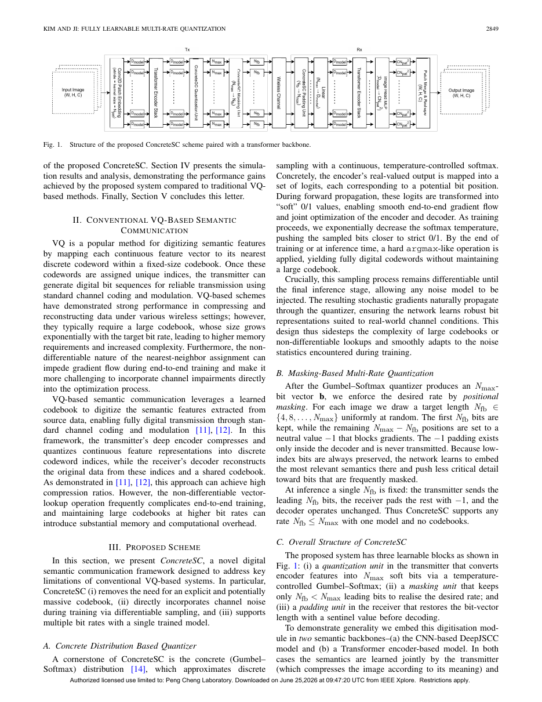
方法/架构图页：来自《Fully Learnable Multi-Rate Quantization for Digital Semantic Communication Systems》PDF p.2。
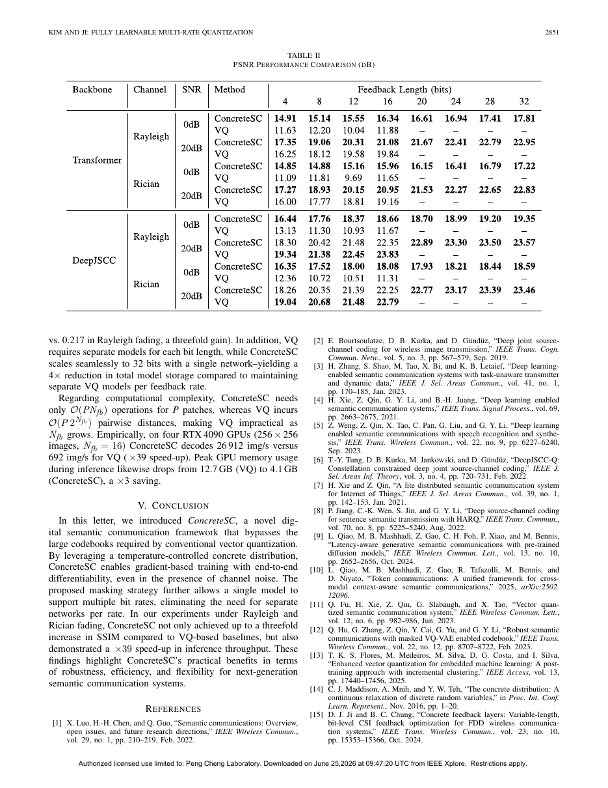
关键结果图/表页：来自《Fully Learnable Multi-Rate Quantization for Digital Semantic Communication Systems》PDF p.4，通常包含 SNR/PSNR/MS-SSIM/BER/Accuracy/码率等结果。
局限性
对标准调制、BER 映射和实际 bitstream packing 的描述仍需更细。
Generative AI-Based Vector Quantized End-to-End Semantic Communication System for Wireless Image Transmission
字段 内容 作者 Maheshi Lokumarambage, Thushan Sivalingam, Feng Dong, Nandana Rajatheva, Anil Fernando 来源/年份 IEEE · IEEE Transactions on Machine Learning in Communications and Networking, 2025 · 2025 标识 DOI 10.1109/TMLCN.2025.3607891 任务 无线图像传输，人/机感知 是否严格数字语义通信 核心 信道处理分类 2. VQ index + LDPC
实验设置
项目 提取结果 数据集 图像数据集；同时验证 human perception 和 machine perception task utility。 Baseline BPG、JSCC、LDPC 组合、无注意力/无对比损失变体。 评价指标 PSNR、MS-SSIM/LPIPS、任务指标、复杂度、延迟。 信道类型 LDPC 信道；低 SNR (<5 dB) 对比。 实验条件 传输 quantized latent index；共享 codebook 作为知识库。
Introduction 讲述逻辑
现有进展：连续 DeepJSCC/任务导向 SemCom 已证明端到端语义传输可在低 SNR 或低带宽下优于传统分离式通信。 仍有问题：语义源编码要能泛化训练集外，同时低 SNR 下保持人/机感知质量。 为什么重要：数字语义通信必须进入现有 bit、调制、信道编码和硬件栈；一旦离散变量出错，语义 latent 可能发生非线性跳变。 本文方案：用 generative AI + VQ latent + 多层 contrastive objectives 训练端到端系统。 如何解决：attention 关注边缘，critic 约束分布真实，LDPC 负责无线 bit 可靠性。 核心观点：低 SNR 尤其 <5 dB 时优于 BPG，并以更低复杂度/延迟接近 JSCC。 方法与数字化方案
技术路线： VQ generative semantic codec。encoder 用 spatial attention 提取 latent，经 learned codebook VQ 后只发送 code index；生成式 decoder/critic 根据 quantized latent 重建。
实际传输单位： VQ index / LDPC-protected bits。码本/离散集合： 有码本；shared knowledge base。
传输开销推导： 若 latent map 尺寸为 h×w 且每位置一个 K 阶 index，$$B_{sem}=hw\lceil\log_2K\rceil$$；LDPC 后 $$B_{tx}=B_{sem}/R_c$$。论文强调相对 BPG/JSCC 的复杂度和低 SNR 表现，精确 bit ledger 需按 latent map/codebook 实验配置推导。
实际数值计算实例： 论文直接给出关键 ledger：每张图有 N=4096 个 quantized indices，codebook K=256，每个 index 8 bits，因此 Bsem=4096×8=32,768 bits/image。以 Kodak 768×512 RGB 为例，原始 bit 数为 9,437,184，因此 source-level 压缩率为 9,437,184/32,768=288×。若使用 LDPC code rate Rc=0.67，则 coded bits≈32,768/0.67=48,907；QPSK 下 channel symbols≈24,454。论文还报告 BPG 最大压缩平均约 5 KB=40,000 bits，SVQ-WGAN 的 32,768-bit source payload 低于该 baseline；表中有效 bpp 为 0.438，而 BPG 为 0.562。
信道如何作用于离散变量
decoder 输入： decoder 接收 LDPC 恢复后的 index，或低 SNR 下残余错误较少的 bitstream。
错误建模/纠错机制： 主要依靠 LDPC 抑制 bit error；生成式 decoder 可能容忍部分 latent 误差，但没有专门 index flip 训练。
Codex 判断： 核心是生成式 VQ 数字语义图像系统，错误处理仍偏传统信道编码。
架构图与结果图
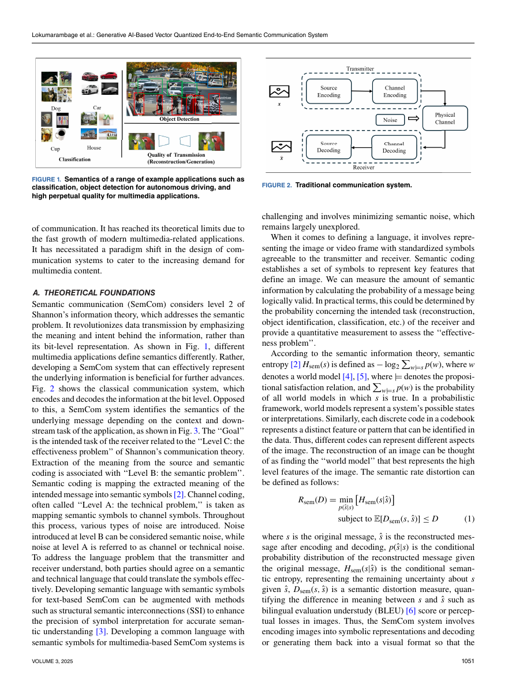
方法/架构图页：来自《Generative AI-Based Vector Quantized End-to-End Semantic Communication System for Wireless Image Transmission》PDF p.2。
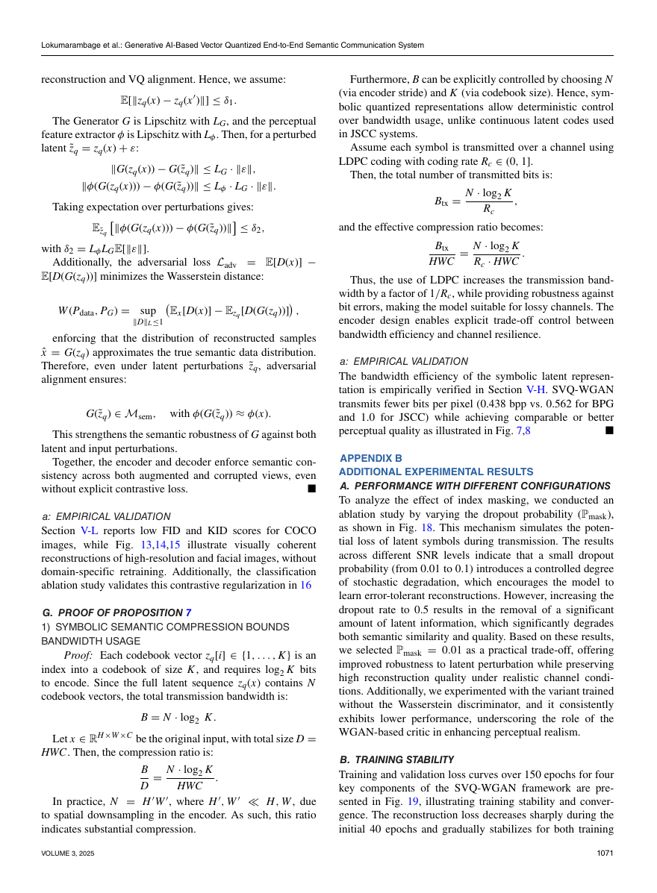
关键结果图/表页：来自《Generative AI-Based Vector Quantized End-to-End Semantic Communication System for Wireless Image Transmission》PDF p.22，通常包含 SNR/PSNR/MS-SSIM/BER/Accuracy/码率等结果。
局限性
VQ index 错误语义跳变未充分建模；生成结果质量可能掩盖细节错误。
Joint Semantic-Channel Coding and Modulation for Token Communications
字段 内容 作者 Jingkai Ying, Zhijin Qin, Yulong Feng, Liejun Wang, Xiaoming Tao 来源/年份 arXiv · arXiv, 2025 · 2025 标识 arXiv 2511.15699 任务 token/prompt 通信，多模态 Transformer token 是否严格数字语义通信 核心 信道处理分类 5. token-level JSCC / modulation
实验设置
项目 提取结果 数据集 文本、音频、图像/视频/点云 token 任务。 Baseline 传统 token transmission、separate source-channel coding、固定 modulation baseline。 评价指标 token reconstruction/task performance、BER/SNR、latency/overhead。 信道类型 无线信道；joint semantic-channel coding and modulation。 实验条件 面向 Transformer token 的 task-oriented transmission。
Introduction 讲述逻辑
现有进展：连续 DeepJSCC/任务导向 SemCom 已证明端到端语义传输可在低 SNR 或低带宽下优于传统分离式通信。 仍有问题：大模型时代 token 是统一语义单位，但现有通信仍把 token 当普通 bits 可靠传。 为什么重要：数字语义通信必须进入现有 bit、调制、信道编码和硬件栈；一旦离散变量出错，语义 latent 可能发生非线性跳变。 本文方案：把 token 的语义重要性直接纳入 source-channel coding 和 modulation。 如何解决：对 token sequence 设计任务导向的联合编码调制，使错误 token 对下游任务影响更小。 核心观点：预期在多模态 token 任务中降低开销并提升错误鲁棒性。 方法与数字化方案
技术路线： token JSCC-modulation。把 tokenizer 产生的离散 token 当作通信基本单元，联合设计 token semantic coding、channel coding 和 modulation。
实际传输单位： token index / bit / modulation symbol。码本/离散集合： token vocabulary 本身就是 codebook；可能另有 task-specific token mapping。
传输开销推导： 若 vocab 大小为 V、发送 T 个 token，最朴素开销 $$B_{sem}=T\lceil\log_2V\rceil$$；若引入语义信道编码和 modulation，则实际 $$B_{tx}$$ 取决于冗余和 $$\log_2M$$。压缩来自减少 token 数或改变 token 重要性保护。
实际数值计算实例： 论文关注 token/prompt 级数字语义传输，开销由 token 数 T 和 vocabulary size V 决定。若采用常见约 V=50,000 的 tokenizer，则每个 token 需要 ceil(log2V)=16 bits。以 128-token prompt 为例，token payload 为 128×16=2,048 bits；若语义筛选后只传 64 个任务相关 tokens，则 payload 为 1,024 bits。若原始 UTF-8 prompt 长 512 bytes，则原始文本 bit 数为 512×8=4,096 bits；128-token 方案相对原始文本压缩 2×，64-token 方案压缩 4×。用 16-QAM 时，2,048 bits 需要 512 channel symbols，1,024 bits 需要 256 symbols；后续 JSCC/modulation 模块处理的是这些 token bits 或其 learned modulation representation。
信道如何作用于离散变量
decoder 输入： decoder 收到可能错误/受保护等级不同的 token 或 token bits。
错误建模/纠错机制： 论文方向正对 token index error；细节取决于 token-channel mapping 和冗余设计。
Codex 判断： 它把数字语义通信从 VQ image codebook 推向大模型 token 通信，是重要未来路线。
架构图与结果图
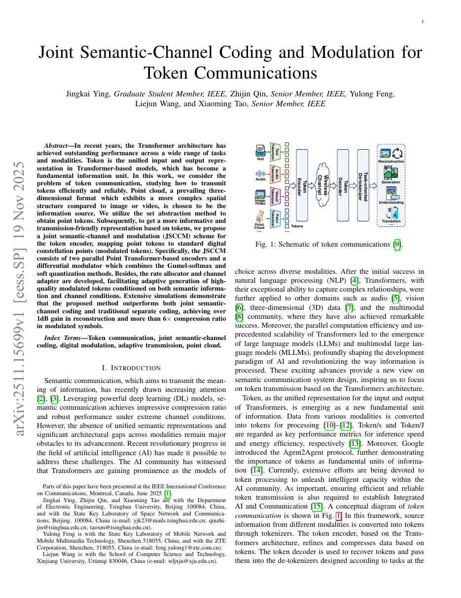
方法/架构图页：来自《Joint Semantic-Channel Coding and Modulation for Token Communications》PDF p.1。
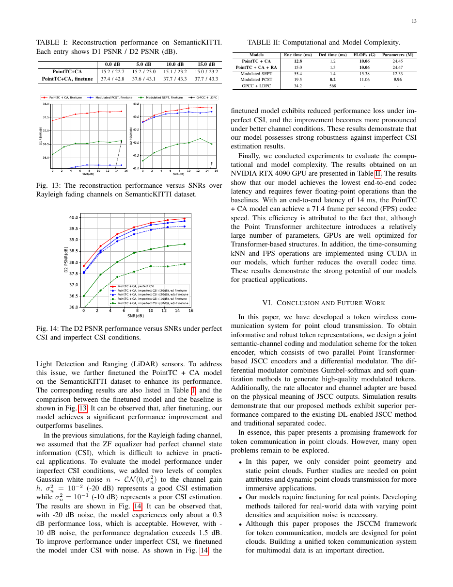
关键结果图/表页：来自《Joint Semantic-Channel Coding and Modulation for Token Communications》PDF p.13，通常包含 SNR/PSNR/MS-SSIM/BER/Accuracy/码率等结果。
局限性
arXiv 较新；需要更多公开基准和标准 PHY 链路验证。
Joint Source-Channel Coding for Channel-Adaptive Digital Semantic Communications
字段 内容 作者 Joohyuk Park, Yongjeong Oh, Seonjung Kim, Yo-Seb Jeon 来源/年份 IEEE · IEEE Transactions on Cognitive Communications and Networking, 2025 · 2025 标识 DOI 10.1109/TCCN.2024.3422496 任务 图像分类、重建、检索 是否严格数字语义通信 核心 信道处理分类 4. 显式建模离散错误并联合优化
实验设置
项目 提取结果 数据集 多种图像任务数据集；覆盖 classification/reconstruction/retrieval。 Baseline 固定 JSCC、传统 demodulation、已有 SNR-adaptive/attention JSCC。 评价指标 Accuracy、PSNR、retrieval 指标、latency/power。 信道类型 digital modulation/demodulation；binary symmetric erasure channels。 实验条件 多 channel conditions 和 modulation orders；推理时 adaptive modulation。
Introduction 讲述逻辑
现有进展：连续 DeepJSCC/任务导向 SemCom 已证明端到端语义传输可在低 SNR 或低带宽下优于传统分离式通信。 仍有问题：固定数字 JSCC 难以适应 SNR 与调制阶数动态，传统 hard demodulation 丢失可靠性信息。 为什么重要：数字语义通信必须进入现有 bit、调制、信道编码和硬件栈；一旦离散变量出错，语义 latent 可能发生非线性跳变。 本文方案：把 demodulation uncertainty、BSEC robust training 与 adaptive modulation 组合。 如何解决：训练阶段随机化 BSEC 参数；推理阶段根据信道条件决定 latent-level modulation order 降低延迟。 核心观点：在分类、重建、检索上相对固定数字 JSCC 更稳，且降低通信延迟。 方法与数字化方案
技术路线： BSEC + channel-adaptive modulation。binary-output JSCC encoder 输出 latent bits；新 demodulation 估计不确定性；训练用 BSEC 参数分布覆盖环境。
实际传输单位： bit / soft-erasure representation。码本/离散集合： 无 VQ 码本；离散单位是 semantic bits。
传输开销推导： 开销为 encoder bit 数 $$B$$；推理选择第 j 个 latent 的调制阶数 $$M_j$$，总符号数约 $$\sum_j b_j/\log_2 M_j$$，其中 bit 可靠性由 BSEC 参数和 demodulation uncertainty 调节。
实际数值计算实例： 该文延续 binary semantic bitstream，并把 N 个 bit 按自适应 M-QAM 分组。以 CIFAR-10 重建设置 N=512 作为实例，原始 8-bit RGB 为 24,576 bits，语义源 payload 为 512 bits，源压缩率 48×。若全用 QPSK/4-QAM，每符号 2 bits，需要 512/2=256 symbols；若全用 16-QAM，需要 512/4=128 symbols；若全用 64-QAM，需要 ceil(512/6)=86 symbols。自适应调制时，如果前 256 个高重要 bit 用 4-QAM、后 256 个低重要 bit 用 16-QAM，则符号数为 256/2+256/4=192 symbols；payload bit 数不变，但信道资源和误码敏感性发生变化。
信道如何作用于离散变量
decoder 输入： decoder 收到带不确定性的 bit/erasure 表示，而不是无误 bitstream。
错误建模/纠错机制： 明确处理 bit error/erasure；不是 VQ index 跳变，但机制直接针对数字 bit 受损。
Codex 判断： 这是严格处理离散 bit 经过信道后出错的核心论文之一。
架构图与结果图
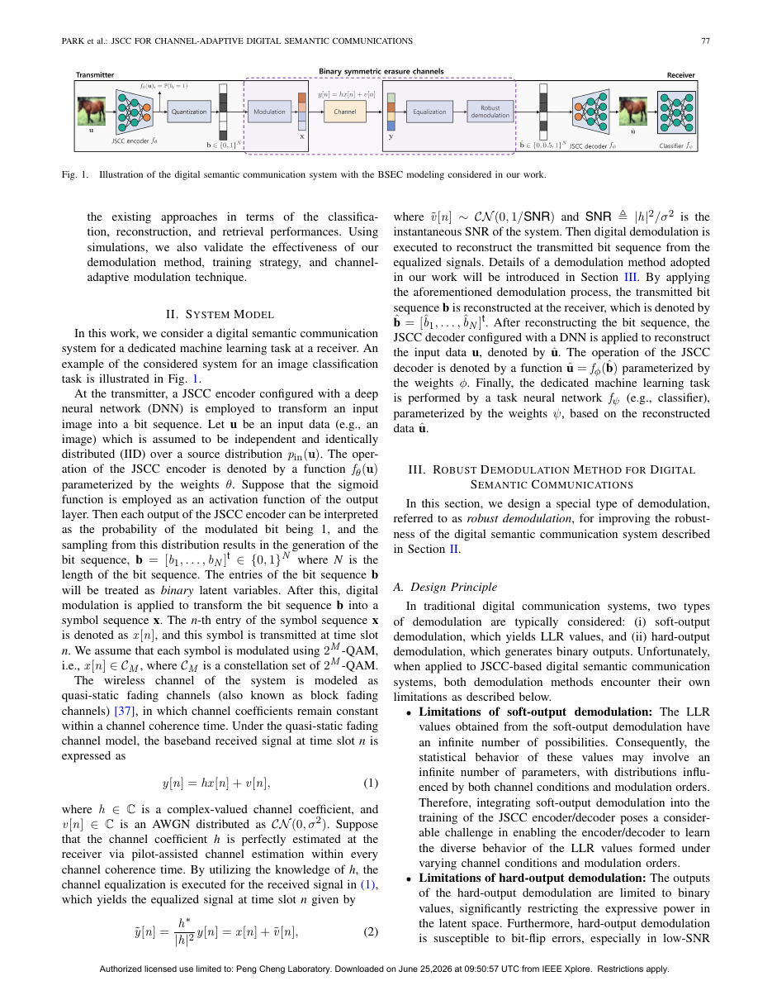
方法/架构图页：来自《Joint Source-Channel Coding for Channel-Adaptive Digital Semantic Communications》PDF p.3。
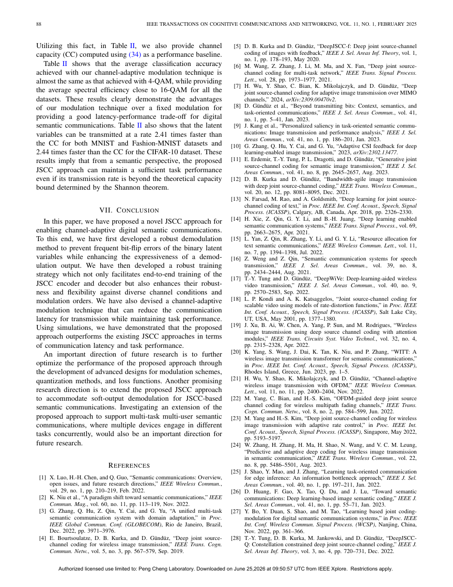
关键结果图/表页：来自《Joint Source-Channel Coding for Channel-Adaptive Digital Semantic Communications》PDF p.14，通常包含 SNR/PSNR/MS-SSIM/BER/Accuracy/码率等结果。
局限性
复杂度来自 robust training 与调制选择；若标准信道译码输出 hard bits，软信息接口需要重新设计。
Less Signals, More Understanding: Channel-Capacity Codebook Design for Digital Task-Oriented Semantic Communication
字段 内容 作者 Anbang Zhang, Shuaishuai Guo, Chenyuan Feng, Hongyang Du, Haojin Li, Chen Sun, Haijun Zhang 来源/年份 arXiv · arXiv, 2025 · 2025 标识 arXiv 2508.04291 任务 任务导向语义推理 是否严格数字语义通信 核心 信道处理分类 5. channel-aware codebook design
实验设置
项目 提取结果 数据集 多 SNR 下 inference tasks。 Baseline 常规离散 ToSC、未考虑 channel capacity 的 codebook。 评价指标 task accuracy、semantic fidelity、SNR robustness、communication efficiency。 信道类型 SNR regimes；channel-aware discrete semantic coding。 实验条件 Wasserstein-regularized objective 对齐 code activation 与 optimal input distribution。
Introduction 讲述逻辑
现有进展：连续 DeepJSCC/任务导向 SemCom 已证明端到端语义传输可在低 SNR 或低带宽下优于传统分离式通信。 仍有问题：现有离散 ToSC 常把语义映射与信道容量/任务需求分开，导致 codebook 使用不匹配。 为什么重要：数字语义通信必须进入现有 bit、调制、信道编码和硬件栈；一旦离散变量出错，语义 latent 可能发生非线性跳变。 本文方案：把 codebook 设计和 channel capacity 关联，用 Wasserstein 正则调节 activation。 如何解决：让有限 codewords 的使用接近信道最适输入，同时保持任务语义可分。 核心观点：多 SNR inference tasks 中 accuracy 与效率提升。 方法与数字化方案
技术路线： channel-capacity codebook。离散 codebook 把语义 feature 空间划为 Voronoi/indices；训练时把 code activation 分布和信道容量诱导的最优输入分布对齐。
实际传输单位： codebook index。码本/离散集合： 有码本；重点是 codebook size 与 activation distribution。
传输开销推导： 固定长度索引开销 $$B_{sem}=N\lceil\log_2K\rceil$$；论文还从信道容量角度讨论 optimal codebook usage。若 code activation entropy 小于 $$\log_2K$$，可用 entropy coding 进一步降至 $$NH(I)$$。
实际数值计算实例： 该文是 codebook/channel-capacity 设计，开销由 N 个 VQ indices 和 codebook size K 决定。以 CIFAR-10 32×32×3 为实例，原始 8-bit RGB 为 24,576 bits。若实验采用任务语义向量 N=16、K=16 的低维配置，则 payload=N×log2K=16×4=64 bits，压缩率 384×；若为了降低量化误差把 K 增到 64，则 payload=16×6=96 bits，压缩率 256×。论文的新增点是 codeword activation distribution 与 channel capacity 匹配：如果经过 capacity-aware 设计后的 index entropy 为 3.2 bits/index，而不是固定 log2K=4，则熵编码 payload 可从 64 bits 降至 16×3.2=51.2 bits，同时保持更适合信道转移概率的 codebook 布局。
信道如何作用于离散变量
decoder 输入： decoder 收到离散 indices；主要假设离散信道容量约束而非逐 bit 错误恢复。
错误建模/纠错机制： 考虑 channel-aware codebook，但对具体 index bit flip 的处理不如 CAVQ。
Codex 判断： 理论上补充“码本怎么和信道容量匹配”，对未来 codebook 设计有启发。
架构图与结果图
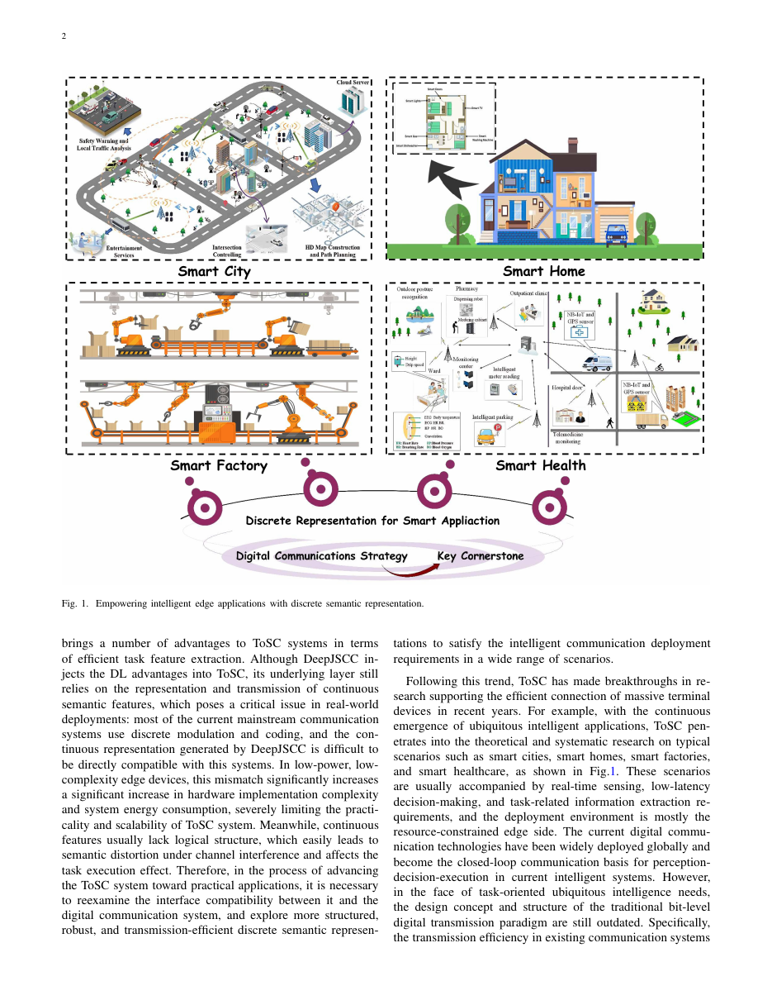
方法/架构图页：来自《Less Signals, More Understanding: Channel-Capacity Codebook Design for Digital Task-Oriented Semantic Communication》PDF p.2。
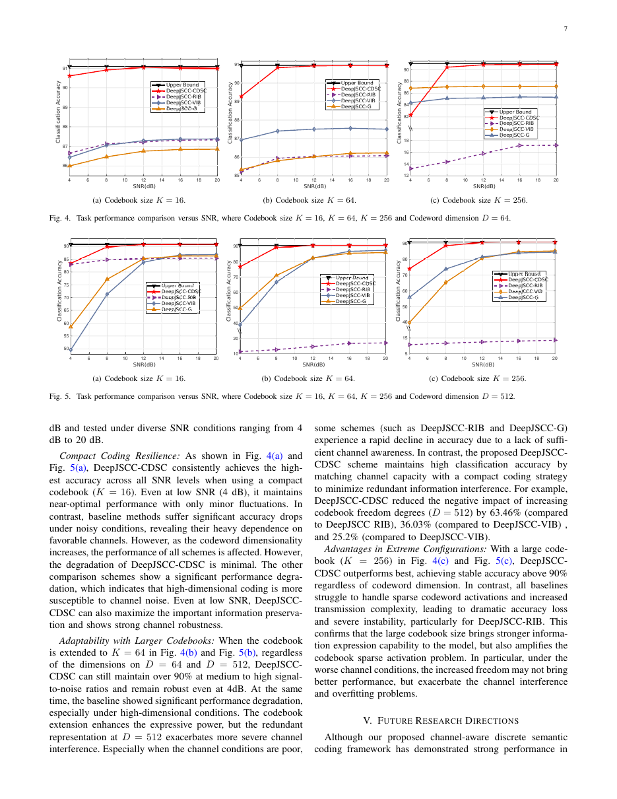
关键结果图/表页：来自《Less Signals, More Understanding: Channel-Capacity Codebook Design for Digital Task-Oriented Semantic Communication》PDF p.7，通常包含 SNR/PSNR/MS-SSIM/BER/Accuracy/码率等结果。
局限性
arXiv 新作，需更多真实链路和标准调制验证。
Low-Bitrate High-Quality Digital Semantic Communication Based on RVQGAN
字段 内容 作者 Xiaojiao Chen, Jing Wang, Jingxuan Huang, Ming Zeng, Zhong Zheng, Zesong Fei 来源/年份 IEEE · IEEE Internet of Things Journal, 2025 · 2025 标识 DOI 10.1109/JIOT.2025.3534462 任务 语音低码率传输 是否严格数字语义通信 核心 信道处理分类 5. RVQ token + neural error suppression
实验设置
项目 提取结果 数据集 语音数据集；低码率 3 kb/s 实验。 Baseline 传统 speech codec、JSCC、无 CNS/无 code predictor 变体。 评价指标 语音质量、SNR、带宽节省、重建指标。 信道类型 低 SNR channel；channel noise suppression (CNS) + code predictor。 实验条件 3 kb/s 低码率，可节省至少 50% 带宽。
Introduction 讲述逻辑
现有进展：连续 DeepJSCC/任务导向 SemCom 已证明端到端语义传输可在低 SNR 或低带宽下优于传统分离式通信。 仍有问题：低码率下数字 SemCom 容易牺牲接收端任务/感知质量，语音尤其敏感。 为什么重要：数字语义通信必须进入现有 bit、调制、信道编码和硬件栈；一旦离散变量出错，语义 latent 可能发生非线性跳变。 本文方案：用 RVQGAN 获得低码率高质量语音 token，再用 CNS 与 predictor 抵抗信道噪声。 如何解决：生成式 decoder 补细节，CNS 消除低 SNR 特征污染，predictor 利用上下文修正 code。 核心观点：3 kb/s 下保持较高语音质量并在低 SNR 优于 baseline。 方法与数字化方案
技术路线： RVQGAN speech semantic codec。多尺度语义 codec 使用 RVQGAN 抽取语义 token/code indices；U-Net CNS 恢复受信道影响的语义 feature，Transformer predictor 修正 code。
实际传输单位： RVQ code index / low-bitrate token stream。码本/离散集合： 有码本；Residual VQ 多阶段 codebooks。
传输开销推导： 若 RVQ 每帧产生 L 个 codebook indices、每个 codebook K 阶，则帧开销 $$B_f=L\lceil\log_2K\rceil$$；总 bitrate $$R=B_f\times f_{frame}$$。论文直接给出 3 kb/s 工作点。
实际数值计算实例： 论文语音采样率为 16 kHz，目标语义码率为 3,000 bit/s。若按 16-bit PCM 原始语音计，1 秒原始数据量为 16,000×16=256,000 bits。RVQGAN 使用 320-sample hop，因此每秒 16,000/320=50 frames；目标 3 kb/s 对应每帧 3,000/50=60 bits。论文设置 Nq=6 个 residual quantizers，因此每层每帧 10 bits，codebook size 为 2^10=1024；每秒 index 数为 50×6=300 个，payload 为 300×10=3,000 bits。相对原始 PCM 压缩率为 256,000/3,000=85.3×；相对 6 kb/s Opus baseline，语义码率为其一半。
信道如何作用于离散变量
decoder 输入： decoder 收到可能受信道影响的 RVQ indices/semantic features，经 CNS/predictor 后重建。
错误建模/纠错机制： 有面向 channel effect 的恢复模块，但 index bit error 的精确 BSC/BER 映射不如 Blind/ESC-MVQ 清晰。
Codex 判断： 它是语音数字语义低码率方向的重要例子，强在生成式低码率和后处理鲁棒。
架构图与结果图
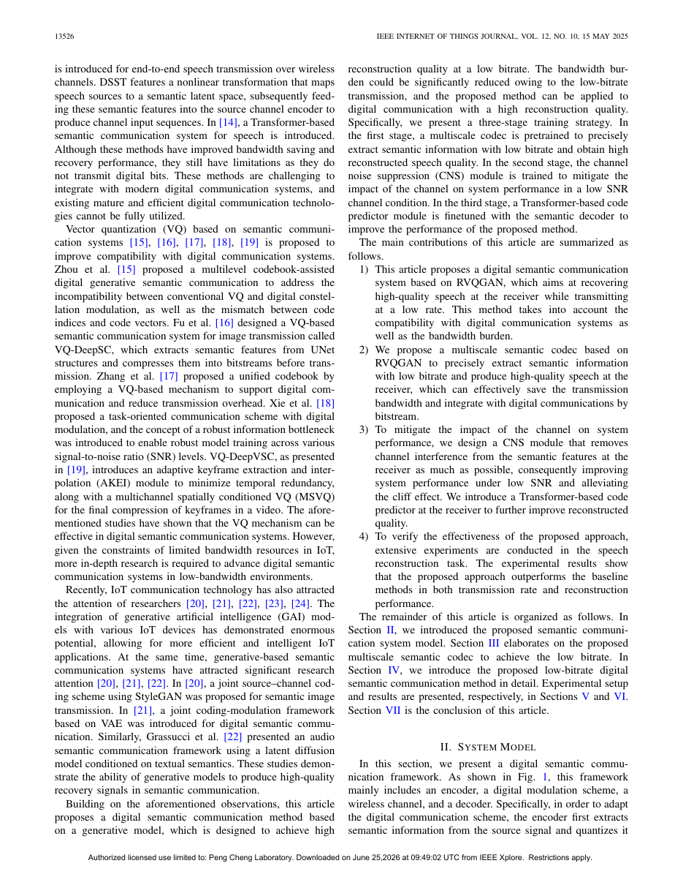
方法/架构图页：来自《Low-Bitrate High-Quality Digital Semantic Communication Based on RVQGAN》PDF p.2。
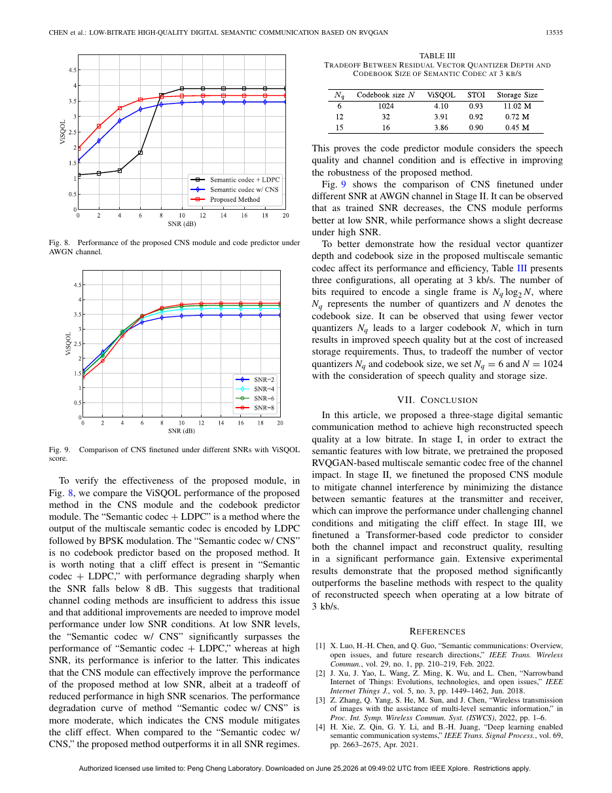
关键结果图/表页：来自《Low-Bitrate High-Quality Digital Semantic Communication Based on RVQGAN》PDF p.11，通常包含 SNR/PSNR/MS-SSIM/BER/Accuracy/码率等结果。
局限性
需要更透明的 bitstream/packet error 设置；生成式模型可能引入语义 hallucination。
MaskDSC: Resilient Digital Semantic Communication with Masked Transformer and Unequal Error Protection
字段 内容 作者 Jun Wang, Kailin Tan, Sixian Wang, Xiaoqi Qin, Zhenyu Liu, Jincheng Dai 来源/年份 IEEE · IEEE WCNC, 2025 · 2025 标识 DOI 10.1109/WCNC61545.2025.10978821 任务 图像/视觉数据传输 是否严格数字语义通信 核心 信道处理分类 5. masked error concealment + UEP
实验设置
项目 提取结果 数据集 图像数据集；关注视觉 token 传输。 Baseline 传统 RTC/压缩+信道编码、无 masked Transformer、无 UEP 变体。 评价指标 压缩效率、重建质量、error resilience、动态信道下曲线。 信道类型 不可靠无线信道；物理层 UEP。 实验条件 通过 critical packets 可靠保护，其余 token 允许 bit errors。
Introduction 讲述逻辑
现有进展：连续 DeepJSCC/任务导向 SemCom 已证明端到端语义传输可在低 SNR 或低带宽下优于传统分离式通信。 仍有问题：实时视觉通信里所有 bit 都强保护太贵，不保护又会因错误 token 崩溃。 为什么重要：数字语义通信必须进入现有 bit、调制、信道编码和硬件栈；一旦离散变量出错，语义 latent 可能发生非线性跳变。 本文方案：用 masked Transformer 从上下文恢复缺失/错误 token，同时把关键 packets 分配更强保护。 如何解决：因果上下文提升压缩，mask 训练提升 error concealment，UEP 把可靠性预算给关键语义。 核心观点：在动态信道下比传统均等保护更稳，压缩和鲁棒性同时提升。 方法与数字化方案
技术路线： masked Transformer + UEP。视觉 token 以因果顺序建模；masked Transformer 同时用于 entropy modeling 和 error concealment；物理层对关键 packets 做 UEP。
实际传输单位： token bitstream / packet。码本/离散集合： 可与 VQ/entropy coding 结合；核心不是单一 codebook，而是 token/context model。
传输开销推导： 总开销由 entropy-coded token bitstream 给出；若 token i 的码长为 $$l_i$$，关键 token 采用更强 channel code 码率 $$R_i$$，则 $$B_{tx}=\sum_i l_i/R_i$$。UEP 不改变源 bitstream，但改变实际信道开销。
实际数值计算实例： 论文定义 CBR 为 ρ=k/(H×W×3)，k 是总 channel symbols，而不是直接的 source bits。Kodak 常用图像为 768×512 RGB，因此 H×W×3=1,179,648，原始 8-bit RGB 为 9,437,184 bits。Fig.3 在 Kodak 上使用平均 CBR ρ=0.05，所以 k=0.05×1,179,648=58,982 channel symbols。若按 QPSK 和 Rc=1/2 估算可承载的 source payload，则为 58,982×2×1/2=58,982 bits；raw/source 压缩率为 9,437,184/58,982=160×。Fig.6/表格还出现类似压缩率 CBR≈0.07 的可视化点，此时 k≈82,575 symbols；在同样 QPSK、Rc=1/2 下 source payload≈82,575 bits，压缩率≈114×。
信道如何作用于离散变量
decoder 输入： decoder 收到部分可靠、部分可能带错的 token bitstream，并用 masked Transformer 补偿。
错误建模/纠错机制： 显式承认 bit/packet error，不再要求全 bit 无误；关键 token 用 UEP，非关键 token 交给上下文模型恢复。
Codex 判断： 它是真正面向错误 bitstream 的数字视觉 SemCom，而不是只做 VQ 压缩。
架构图与结果图
方法/架构图页：来自《MaskDSC: Resilient Digital Semantic Communication with Masked Transformer and Unequal Error Protection》PDF p.2。
关键结果图/表页：来自《MaskDSC: Resilient Digital Semantic Communication with Masked Transformer and Unequal Error Protection》PDF p.6，通常包含 SNR/PSNR/MS-SSIM/BER/Accuracy/码率等结果。
局限性
UEP 策略与实际 channel code/packetization 的耦合需要系统级验证；不同语义任务的关键 token 定义可能变化。
Rate-Adaptive Semantic Communication via Multi-Stage Vector Quantization
字段 内容 作者 Jinsung Park, Junyong Shin, Yongjeong Oh, Jihun Park, Yo-Seb Jeon 来源/年份 arXiv · arXiv, 2025 · 2025 标识 arXiv 2510.02646 任务 图像语义重建，rate-adaptive 是否严格数字语义通信 核心 信道处理分类 1. MSVQ rate adaptation，弱信道错误
实验设置
项目 提取结果 数据集 CIFAR-10。 Baseline single-stage VQ、existing digital semantic communication methods。 评价指标 semantic fidelity、rate、复杂度、module selection。 信道类型 主要是 rate constraint；信道条件作为 rate adaptation 动因。 实验条件 动态激活 stage 与 VQ modules；可结合 entropy coding。
Introduction 讲述逻辑
现有进展：连续 DeepJSCC/任务导向 SemCom 已证明端到端语义传输可在低 SNR 或低带宽下优于传统分离式通信。 仍有问题：固定 rate SC 无法适配动态无线环境，单大码本高复杂且易 collapse。 为什么重要：数字语义通信必须进入现有 bit、调制、信道编码和硬件栈；一旦离散变量出错，语义 latent 可能发生非线性跳变。 本文方案：用 MSVQ 分阶段增加语义精度，按 rate budget 激活模块。 如何解决：增量 allocation 找最能降低 task loss 的下一个模块，entropy coding 进一步利用非均匀分布。 核心观点：在 CIFAR-10 上较现有 VQ-based DSC 更高效且 rate 控制更细。 方法与数字化方案
技术路线： MSVQ-SC。多个 VQ stage 逐级细化 residual，每个 stage 中还有多个可选 VQ module；增量分配算法选择模块满足 rate constraint。
实际传输单位： multi-stage codebook index。码本/离散集合： 有码本；多 stage/multi-module codebooks。
传输开销推导： 固定长度时 $$B_{sem}=\sum_{active}N_l\lceil\log_2K_l\rceil$$；若加入 entropy coding，则用 codeword 概率得到期望码长。论文把 module selection 写成 rate-constrained loss minimization。
实际数值计算实例： 论文 CIFAR-10 原始数据量为 24,576 bits；semantic latent vector dimension M=512、D=4，因此 N=128 个 sub-vectors，Tmax=3 stages。Type-I 设计中，高方差 64 个 sub-vectors 的三阶段 bit 数为 8/7/6，低方差 64 个为 6/5/4，所以全三阶段 payload 为 64×(8+7+6)+64×(6+5+4)=2,304 bits，压缩率为 24,576/2,304=10.67×。论文表 I 还评估 896、1024、1200、1920、2088 bits 等 stage-selection 开销；例如 1024 bits 时压缩率为 24×。实际通信设置中 LDPC block length=3156，code rate=1/2 时 source information bits=1578，coded bits=3156；若用 16-QAM，延迟为 3156/4=789 symbols/image。
信道如何作用于离散变量
decoder 输入： decoder 收到被选择模块的 index 序列，默认正确解码。
错误建模/纠错机制： 信道错误不是重点；如果某 stage index 错误，会污染 residual refinement，论文没有专门处理。
Codex 判断： 它补足 rate adaptation，但应和 CAVQ/UEP/Blind Training 组合处理误码。
架构图与结果图
方法/架构图页：来自《Rate-Adaptive Semantic Communication via Multi-Stage Vector Quantization》PDF p.3。
关键结果图/表页：来自《Rate-Adaptive Semantic Communication via Multi-Stage Vector Quantization》PDF p.12，通常包含 SNR/PSNR/MS-SSIM/BER/Accuracy/码率等结果。
局限性
误码和 packet loss 下的级联 residual 失真有待研究。
sDMCM—A Semantic Digital Modulation Constellation Mapping Scheme for Semantic Communication
字段 内容 作者 Lei Teng, Wannian An, Chen Dong, Xiaodong Xu 来源/年份 IEEE · IEEE Internet of Things Journal, 2025 · 2025 标识 DOI 10.1109/JIOT.2025.3545667 任务 语义图像/工业 IoT 图像传输中的调制映射 是否严格数字语义通信 核心 信道处理分类 5. semantic-aware modulation mapping
实验设置
项目 提取结果 数据集 图像语义通信系统 LSCI、工业 IoT STSCI。 Baseline Gray、Pseudo-Gray、Structural Quadrant (SQ) mapping。 评价指标 MSE、MS-SSIM、BER、SNR；理论与仿真曲线。 信道类型 AWGN；PAM/QAM；不同 quantization bit number n 与 modulation parameter m。 实验条件 16-QAM、256-QAM，n=m/n>m/n<m 多情形。
Introduction 讲述逻辑
现有进展：连续 DeepJSCC/任务导向 SemCom 已证明端到端语义传输可在低 SNR 或低带宽下优于传统分离式通信。 仍有问题：传统 Gray mapping 优化 BER，不优化语义数值 MSE；同样 BER 下语义值错误大小可能差异巨大。 为什么重要：数字语义通信必须进入现有 bit、调制、信道编码和硬件栈；一旦离散变量出错，语义 latent 可能发生非线性跳变。 本文方案：以 semantic information MSE 为目标重新设计 PAM/QAM 映射。 如何解决：利用 bit 位可靠性差异，把量化语义值的 MSB 等重要位放到更可靠位置。 核心观点：相同 MS-SSIM 下可容忍约 3 dB SNR 降低；IIoT 图像中指针/仪表盘更清晰。 方法与数字化方案
技术路线： semantic digital constellation mapping。不改变上游语义 encoder，而重新设计 semantic information value 的 bit-to-constellation mapping，使重要 bit 位落在更可靠星座位。
实际传输单位： quantized semantic bit / modulation symbol。码本/离散集合： 无 VQ 码本；核心是 constellation mapping/interleaving 表。
传输开销推导： 若语义值量化为 n bits、调制为 m-bit PAM/QAM，则每个符号承载 m bits；传统方式可能需要 $$\lceil n/m\rceil$$ 次传输，sDMCM 在 n<m 时可让一个高阶星座承载多个语义值。论文还给出例子：4 个 2-bit 语义值传统 16-QAM 需 8 次传输，而 m=4 的 256-QAM 可减少次数。
实际数值计算实例： 论文给出一个四个语义量化值的 toy example：每个值 2 bits，总语义 payload 为 4×2=8 bits。传统映射在较低阶调制下需要更多 transmission units；sDMCMA 通过 semantic-to-constellation bit-position mapping，把 MSB 或更重要 bit 放在更可靠的 constellation decision region。若代入 CIFAR-10 并假设每个 RGB scalar 都做 2-bit semantic quantization，则 payload 为 32×32×3×2=6,144 bits；用 256-QAM 每 symbol 8 bits，理想符号数为 6,144/8=768 symbols。若与原始 8-bit RGB 24,576 bits 比较，该 2-bit scalar payload 的源压缩率为 4×；sDMCMA 本身不改变 bit 数，而是降低同样 bit 数在符号错误下造成的语义失真。
信道如何作用于离散变量
decoder 输入： decoder 收到有 bit/symbol error 的调制结果，再通过 sDMCM 反映射得到量化语义值。
错误建模/纠错机制： 非常明确处理 bit/symbol error，但不是让错误消失，而是让错误造成的语义数值 MSE 尽量小。
Codex 判断： 这是物理层 mapping 直接服务语义误差的典型论文，可与 VQ index assignment 类工作互补。
架构图与结果图
方法/架构图页：来自《sDMCM—A Semantic Digital Modulation Constellation Mapping Scheme for Semantic Communication》PDF p.3。
关键结果图/表页：来自《sDMCM—A Semantic Digital Modulation Constellation Mapping Scheme for Semantic Communication》PDF p.15，通常包含 SNR/PSNR/MS-SSIM/BER/Accuracy/码率等结果。
局限性
主要针对标量量化语义值；复杂 learned VQ codebook 的高维语义距离需要进一步定义。
Semantic Codebook-Based HARQ for Wireless Image Transmission
字段 内容 作者 Gaohong Liang, Xuefei Zhang, Ji Zhang, Yao Sun, Qimei Cui, Xiaofeng Tao 来源/年份 IEEE · IEEE Transactions on Communications, vol. 73, no. 12, 2025 · 2025 标识 IEEE 11145114; DOI 10.1109/TCOMM.2025.3604326 任务 无线图像传输中的 semantic-level error detection 与 HARQ 重传。 是否严格数字语义通信 核心 信道处理分类 5. semantic codebook-assisted HARQ / feature error control
实验设置
项目 提取结果 数据集 DIV2K 训练；Kodak 测试；训练 crop 为 256×256。 Baseline DJSCC、传统 II-HARQ(JPEG + 1/2 LDPC + 4-QAM + CRC)、SCB ablation。 评价指标 PSNR、MS-SSIM、LPIPS、总传输 bit volume、retransmission gain。 信道类型 AWGN 与 Rayleigh fading；最多 3 次 retransmissions。 实验条件 语义 encoder 输出 Z in R^{M×M×B}；basic feature set size N1 典型比较 256/512/1024/2048；WSFI-512 用 N2=512 个 index-map clusters；压缩率 k/n=[0.042,0.084,0.167,0.250]。
Introduction 讲述逻辑
现有进展：连续 DeepJSCC/任务导向 SemCom 已证明端到端语义传输可在低 SNR 或低带宽下优于传统分离式通信。 仍有问题：传统 HARQ 的 CRC 是 bit-level，只能判断码块是否错；SemCom 需要判断接收 feature 是否在语义上偏离，且不希望等完整 decoder 输出后再检测。 为什么重要：数字语义通信必须进入现有 bit、调制、信道编码和硬件栈；一旦离散变量出错，语义 latent 可能发生非线性跳变。 本文方案：利用共享语义码本作为接收端先验：收到 feature 后与码本对应 feature 比较，生成 mask，只对语义失真的 feature 做 rate-adaptive retransmission。 如何解决：把 compact semantic index 用作 pre-decoding semantic check，使 HARQ 从 bit-level packet control 变成 feature-level semantic control。 核心观点：摘要报告相对传统 HARQ 图像重建性能提升 46.29%、总数据量降低 51.27%；图 9/10 显示 AWGN/Rayleigh 下 Kodak PSNR/MS-SSIM 与视觉结果均优于 DJSCC/II-HARQ/SCB。 方法与数字化方案
技术路线： semantic codebook + WSFI index-map + masked rate-adaptive JSCC HARQ。两级语义码本：basic feature set 用 VQGAN 提供局部语义 feature vectors；index-map set 用 WSFI 聚类把整幅图的 spatial index-map 压成一个 cluster index V。V 用作语义错误检测 prior，而图像内容仍由 rate-adaptive JSCC features 传输。
实际传输单位： compact index V plus masked JSCC feature stream。码本/离散集合： 有码本；basic feature set size N1，index-map set size N2；WSFI-512 明确 N2=512，direct VQGAN-1024 明确 N1=1024、M=48。
传输开销推导： 完整 index-map 需要 $$M^2\log_2 N_1$$ bits；WSFI 两级表示只传 $$\log_2 N_2$$ bits。论文给出 direct VQGAN-1024: M=48,N1=1024，因此 $$48^2\times10=23,040$$ bits/image；WSFI-512 只需 $$\log_2 512=9$$ bits/image。JSCC 主链路的 coding rate 定义为 $$k/n=C M^2/(H W 3)$$，HARQ 只重传 semantic-distorted masked features。
实际数值计算实例： 以论文 WSFI-512 与 VQGAN-1024 的 index-map 对比为具体例子。训练 crop 为 256×256 RGB，若按 8-bit 原图计算，原始数据量为 256×256×3×8=1,572,864 bits。论文给出 VQGAN-1024 direct index-map：basic feature set size N1=1024，每个 spatial index 需要 log2(1024)=10 bits；feature map spatial size M=48，因此完整 index-map 有 M^2=48^2=2,304 个 indices，总控制开销为 2,304×10=23,040 bits/image。WSFI-512 将整张图的 index-map 聚类为 N2=512 个 representative patterns，推理时只传 cluster index V，因此控制开销为 log2(512)=9 bits/image；相对 direct index-map 的压缩为 23,040/9=2,560×，也就是减少 99.96%。若与原始 RGB bit 比较，direct index-map 压缩率为 1,572,864/23,040=68.3×，WSFI compact index 本身为 1,572,864/9≈174,763×。注意 SCB-HARQ 的总传输还包括 masked rate-adaptive JSCC 主链路，论文对该主链路定义 k/n=C M^2/(H W 3)，并报告相对传统 II-HARQ 总数据量减少 51.27%。
信道如何作用于离散变量
decoder 输入： 控制信道中 V 假设 error-free；主数据信道中接收的是带噪 JSCC feature，经 decoder 得到 Z-hat，并与码本恢复出的 Zq 做 semantic similarity 决策。
错误建模/纠错机制： 论文真正处理的是连续/JSCC semantic feature 经信道失真后的检测与重传，而不是让 VQ index 本身经过有误 bit channel。V 被假设无误传输，因此它绕开了 index flip 跳到错误 codeword 的问题，但在 HARQ 层很好地处理了 feature corruption。
Codex 判断： 这篇由泛化 semantic communication + codebook + HARQ 检索补入；标题没有 digital，但摘要和方法明确使用 semantic codebook、compact index、feature-level retransmission，是数字语义通信可靠性方向的重要扩展。
架构图与结果图
方法/架构图页：来自《Semantic Codebook-Based HARQ for Wireless Image Transmission》PDF p.3。
关键结果图/表页：来自《Semantic Codebook-Based HARQ for Wireless Image Transmission》PDF p.12，通常包含 SNR/PSNR/MS-SSIM/BER/Accuracy/码率等结果。
局限性
核心 index V 假设走 error-free control channel，弱化了数字 index 自身的误码问题；码本主要用于检测/重传 prior，而不是完整替代语义内容传输；训练和多模块复杂度较高。
Semantic-Oriented Modulation for Wireless Communication
字段 内容 作者 Yangfan Wang, Xuefei Zhang, Yao Sun, Qimei Cui, Xiaofeng Tao 来源/年份 IEEE · IEEE Internet of Things Journal, vol. 12, no. 14, 2025 · 2025 标识 IEEE 10979950; DOI 10.1109/JIOT.2025.3565017 任务 图像传输、图像分类、文本传输、语音分类中的离散星座语义特征传输。 是否严格数字语义通信 核心 信道处理分类 3. 离散星座直接承载语义特征并建模 symbol error
实验设置
项目 提取结果 数据集 CIFAR-10、MNIST、European Parliament proceedings corpus、Edinburgh DataShare speech dataset。 Baseline JSCC-DT、JSCC-BOM(9-bit quantizer + LDPC rate 4/7 + 16-QAM)、JCM。 评价指标 PSNR、SSIM、ACC、BLEU、CosSim、KL divergence、EMD、SDR latency。 信道类型 AWGN；另有 USRP/SDR 实测链路验证。 实验条件 主实验 SOM 采用 L=8、M=4；两个 feature 组成一个 complex value，再映射成 8 个 4-QAM symbols，即每个 feature 4 个 symbols；重要特征实验用 top 62.5% feature 采用 L=8,M=4，其余可采用 L=2,M=64。
Introduction 讲述逻辑
现有进展：连续 DeepJSCC/任务导向 SemCom 已证明端到端语义传输可在低 SNR 或低带宽下优于传统分离式通信。 仍有问题：模拟/神经 JSCC 的连续特征有噪声鲁棒性，但不兼容数字系统；传统 bit-oriented modulation 会让 sign/exponent 等少数 bit 错误造成特征值大跳变。 为什么重要：数字语义通信必须进入现有 bit、调制、信道编码和硬件栈；一旦离散变量出错，语义 latent 可能发生非线性跳变。 本文方案：提出训练无关的 SOM：用多层 M-QAM 对 feature value 逐层局部放大并细化，试图保留 analog feature 的小误差特性，同时保持数字星座兼容。 如何解决：把 feature value 的误差分解为 quantization error 与 decision error；再用特征重要性分配不同 L/M 资源，较重要特征获得更多层或更稳健的配置。 核心观点：图 9 显示 SOM 在四类任务中总体优于 JSCC-BOM/JCM；图 10 显示 feature-level CosSim/KL/EMD 更接近原始特征；SDR 实验表明可落到现有硬件链路。 方法与数字化方案
技术路线： SOM multilayer local-amplification modulation。把归一化后的连续 semantic feature value 直接映射到多层离散 M-QAM constellation points，绕开先量化成 IEEE754/bitstream 再调制的路径。
实际传输单位： M-QAM constellation symbol sequence。码本/离散集合： 无 VQ 码本；离散集合是每层 M-QAM constellation，L 层局部放大构成层级离散近似。
传输开销推导： 若 encoder 输出 N 个实值 features，则配对为 N/2 个 complex values；SOM 每个 complex value 发送 L 个 M-QAM symbols，总符号数 $$N_{sym}=NL/2$$，等效 constellation bit 承载为 $$N_{sym}\log_2 M$$。主设置 L=8,M=4 时，每个 feature 使用 4 个 4-QAM symbols，相当于 8 个 constellation bits 的自由度；JSCC-BOM 用 9-bit quantizer、LDPC 4/7、16-QAM，约 4 个 16-QAM symbols/feature，用相同 channel resource 对齐。
实际数值计算实例： 以论文主设置 L=8、M=4 和文中复杂度/延迟实验展示的 N=512 feature-vector 长度为数值例子。若源任务取 CIFAR-10 图像传输，原始 32×32 RGB 图像为 32×32×3×8=24,576 bits。SOM 先把 N=512 个实值 semantic features 两两组成 N/2=256 个 complex values；每个 complex value 映射成 L=8 个 4-QAM symbols，因此总传输符号数为 256×8=2,048 个 4-QAM symbols。按 4-QAM 每符号 2 constellation bits 计，等效星座承载为 4,096 bits；按信道资源计为每 feature 4 个 symbols。raw/constellation-bit 压缩率为 24,576/4,096=6×。论文同时给出 JSCC-BOM 公平设置：每 feature 先 9-bit quantization，再用 LDPC rate 4/7，得到 9/(4/7)=15.75 coded bits/feature；16-QAM 每符号 4 bits，约 3.94≈4 symbols/feature，与 SOM 的 4 symbols/feature 对齐。这里 N=512 是文中用于复杂度/延迟说明的 feature 数例子；不同任务的 encoder 输出 N 可变。
信道如何作用于离散变量
decoder 输入： 接收端得到的是经过 M-QAM 最近邻判决后的离散符号序列，再经 multilayer demapper 还原近似连续 feature vector。
错误建模/纠错机制： 论文显式建模 symbol decision error 对 feature value 的影响，但不是 VQ index error。其关键是把单个 bit 翻转造成的大幅数值跳变，替换为星座邻域判决导致的受控 feature deviation。
Codex 判断： 这篇之所以容易被 digital semantic communication 关键词漏掉，是因为题名只写 Semantic-Oriented Modulation，摘要使用 semantic communication、modulation、discrete values，不强调 VQ/codebook。加入泛化 semantic communication + modulation 后应纳入核心。
架构图与结果图
方法/架构图页：来自《Semantic-Oriented Modulation for Wireless Communication》PDF p.3。
关键结果图/表页：来自《Semantic-Oriented Modulation for Wireless Communication》PDF p.11，通常包含 SNR/PSNR/MS-SSIM/BER/Accuracy/码率等结果。
局限性
SOM 不压缩 semantic encoder 本身，只定义特征到符号的调制映射；实际 N 取决于任务模型，论文没有把每个任务 encoder 输出维度整理成统一 payload ledger；错误恢复主要依赖局部几何而非纠错码或 learned recovery。
SQ-GAN: Semantic Image Communications Using Masked Vector Quantization
字段 内容 作者 Francesco Pezone, Sergio Barbarossa, Giuseppe Caire 来源/年份 IEEE · IEEE Transactions on Cognitive Communications and Networking, 2025/2026 · 2025 标识 IEEE Xplore 任务 语义图像压缩/传输 是否严格数字语义通信 相关核心：源编码强，信道弱 信道处理分类 1. 数字语义源编码，弱信道建模
实验设置
项目 提取结果 数据集 Cityscapes 等语义分割图像数据集。 Baseline JPEG2000、BPG、deep-learning compression、VQ-GAN 变体。 评价指标 perceptual quality、semantic segmentation accuracy、compression rate。 信道类型 完全兼容 legacy source coding；物理信道不是主要变量。 实验条件 极低 compression rates。
Introduction 讲述逻辑
现有进展：连续 DeepJSCC/任务导向 SemCom 已证明端到端语义传输可在低 SNR 或低带宽下优于传统分离式通信。 仍有问题：不是所有像素对任务都等价；传统压缩按视觉失真分配 bit，未利用语义类别重要性。 为什么重要：数字语义通信必须进入现有 bit、调制、信道编码和硬件栈；一旦离散变量出错，语义 latent 可能发生非线性跳变。 本文方案：把语义分割 mask 和 VQ-GAN 结合，只高质量编码任务重要区域。 如何解决：SAMM 和语义加权 loss 让压缩更服务于下游 segmentation/感知。 核心观点：极低码率下优于 BPG/JPEG2000 和深度压缩方法。 方法与数字化方案
技术路线： semantic mask + VQ-GAN。先用现成 semantic segmentation 得到类别重要性，SAMM 只编码任务相关区域/feature，再用 VQ-GAN codebook 表示。
实际传输单位： VQ token/index。码本/离散集合： 有码本；VQ-GAN latent codebook。
传输开销推导： 若 mask 后保留 N_m 个 latent positions，每个位置 K 阶 index，则 $$B_{sem}=N_m\lceil\log_2K\rceil$$；mask 直接降低 N_m。论文更关注 source compression rate，而非无线信道开销。
实际数值计算实例： 论文输入图像尺寸为 H=256、W=512，原始 RGB bit 数为 256×512×3×8=3,145,728 bits。latent grid 为 H/16×W/16=16×32=512 positions；codebook J=1024，因此每个 selected latent index 为 log2(1024)=10 bits。论文 bpp 公式为 BPP=(1/256)[10(mx+ms)+2]。若取 mx=ms=0.1，BPP=(1/256)[10×0.2+2]=4/256=0.015625 bpp；总传输 bits 为 0.015625×256×512=2,048 bits，raw/source 压缩率为 3,145,728/2,048=1,536×。直接按 index 数看，约 0.1×512=51 个图像 indices 和 51 个 SSM indices，共约 102×10=1,020 index bits，其余由 mask/位置等开销补足到 bpp 公式。
信道如何作用于离散变量
decoder 输入： decoder 假设收到无误 VQ token/index 或 legacy 系统传来的 bitstream。
错误建模/纠错机制： 几乎不处理信道 bit/index error；它是语义源编码而不是完整信道语义通信。
Codex 判断： 相关度高，但严格说是 digital semantic source coding；应与 UEP/CAVQ 结合才算完整 DSC 链路。
架构图与结果图
方法/架构图页：来自《SQ-GAN: Semantic Image Communications Using Masked Vector Quantization》PDF p.2。
关键结果图/表页：来自《SQ-GAN: Semantic Image Communications Using Masked Vector Quantization》PDF p.14，通常包含 SNR/PSNR/MS-SSIM/BER/Accuracy/码率等结果。
局限性
无线信道、误码、调制和信道编码分析不足。
Unequal Error Protection for Digital Semantic Communication with Channel Coding
字段 内容 作者 Seonjung Kim, Yongjeong Oh, Yongjune Kim, Namyoon Lee, Yo-Seb Jeon 来源/年份 arXiv · arXiv / IEEE-oriented preprint, 2025 · 2025 标识 arXiv 2508.03381 任务 图像传输/语义 bit 保护 是否严格数字语义通信 核心 信道处理分类 5. semantic-aware channel coding / UEP
实验设置
项目 提取结果 数据集 图像传输任务数据集。 Baseline Equal protection channel coding、long-block code、无 UEP 语义 bit baseline。 评价指标 任务性能、总 blocklength、保护等级、SNR/BER。 信道类型 channel coding；bit-level learned target error probabilities。 实验条件 比较 bit-level repetition UEP 与 block-level UEP。
Introduction 讲述逻辑
现有进展：连续 DeepJSCC/任务导向 SemCom 已证明端到端语义传输可在低 SNR 或低带宽下优于传统分离式通信。 仍有问题：语义 bits 重要性高度不均匀，用相同可靠性保护会浪费 blocklength。 为什么重要：数字语义通信必须进入现有 bit、调制、信道编码和硬件栈；一旦离散变量出错，语义 latent 可能发生非线性跳变。 本文方案：把 learned bit-flip probability 解释为目标 error protection level，并设计 bit/block-level UEP。 如何解决：按保护需求分组，短 block 反而更适合高度异质的语义 bits。 核心观点：在图像任务中比 equal protection 更短 blocklength 或更高性能。 方法与数字化方案
技术路线： semantic bit UEP。先由数字语义 encoder 产生 semantic bits；学习得到每个 bit 的目标 flip probability，再据此分配不等保护。
实际传输单位： bit。码本/离散集合： 无 VQ 码本；关注 semantic bits 的保护级别。
传输开销推导： 源开销 $$B_{sem}=B$$；信道开销由每个 bit/block 的重复次数或 channel code blocklength 决定，$$B_{tx}=\sum_i n_i$$。论文的核心是最小化满足 $$P_{e,i}\le\mu_i$$ 的总 blocklength。
实际数值计算实例： 论文系统模型把 M 个语义特征逐个用 B-bit uniform quantizer 量化，总语义 bit 数 K=M×B；实验表明 CIFAR-10/CIFAR-100 的 K=12,288，MNIST 的 K=3,136。以 CIFAR-10 为例，原始 RGB bit 数为 24,576 bits，语义 bitstream 为 K=12,288 bits，因此源压缩率为 2×；这篇论文的重点不是高压缩，而是对 12,288 个 semantic bits 做 UEP。若采用固定 repetition Rfix=8，则 coded blocklength 约为 12,288×8=98,304 bits；Rfix=12 时为 147,456 bits。Block-UEP/Bit-UEP 通过按目标 bit-flip probability 分配 repetition、polar 或 LDPC block，使总 blocklength 低于等保护方案，同时保持 PSNR。
信道如何作用于离散变量
decoder 输入： decoder 收到经 channel coding 保护后但仍可能有残余误码的 semantic bits。
错误建模/纠错机制： 明确处理 bit error；关键是把每个 bit 的语义重要性转化为不同的目标误码率。
Codex 判断： 这是从通信编码角度补上 DSC 的关键拼图，和 Blind Training/IAQ 相互呼应。
架构图与结果图
方法/架构图页：来自《Unequal Error Protection for Digital Semantic Communication with Channel Coding》PDF p.3。
关键结果图/表页：来自《Unequal Error Protection for Digital Semantic Communication with Channel Coding》PDF p.13，通常包含 SNR/PSNR/MS-SSIM/BER/Accuracy/码率等结果。
局限性
依赖已知/可学习的重要性与目标 BER；与神经 decoder 的联合端到端优化还可更紧。
Universal Joint Source-Channel Coding for Modulation-Agnostic Semantic Communication
字段 内容 作者 Yoon Huh, Hyowoon Seo, Wan Choi 来源/年份 IEEE · IEEE Journal on Selected Areas in Communications, 2025 · 2025 标识 IEEE Xplore 任务 图像/任务语义传输，单模型多调制阶数 是否严格数字语义通信 核心 信道处理分类 5. 调制自适应与模型复用
实验设置
项目 提取结果 数据集 图像语义任务数据集；覆盖多 modulation order。 Baseline 调制阶数专用模型、现有数字 SemCom、analog JSCC 变体。 评价指标 任务效果、通信效率、模型复杂度、不同 SNR/order 曲线。 信道类型 数字 modulation order 可变；VQ codebook + multiple BN。 实验条件 按 SNR boundary 选择 modulation order 与 BN 分支。
Introduction 讲述逻辑
现有进展：连续 DeepJSCC/任务导向 SemCom 已证明端到端语义传输可在低 SNR 或低带宽下优于传统分离式通信。 仍有问题：多数数字 SemCom 为固定调制阶数训练，换 M 就要重训或性能下降。 为什么重要：数字语义通信必须进入现有 bit、调制、信道编码和硬件栈；一旦离散变量出错，语义 latent 可能发生非线性跳变。 本文方案：提出 modulation-agnostic 单模型，靠 VQ 与多 BN 支持跨调制阶数。 如何解决：按 SNR 边界选择调制阶数，所有 NN 模块同步切换 BN 分支，减少模型数。 核心观点：相对每阶一个模型的方式节省参数，同时保持或提升任务效果。 方法与数字化方案
技术路线： uJSCC with VQ codebooks。NN encoder/decoder 共享一套主干，VQ codebook 数字化语义 latent；每个 modulation order 选择对应 BN 统计。
实际传输单位： VQ index / modulation symbol。码本/离散集合： 有 trained VQ codebooks；多 BN 使共享参数适应不同输出统计。
传输开销推导： 若每个 latent block 量化为 K 个 codeword，$$B_{sem}=N\lceil\log_2 K\rceil$$；不同调制阶数改变每个 channel use 可承载 bits，因此 $$N_{sym}=B_{sem}/\log_2 M$$。
实际数值计算实例： 以 CIFAR-10 为例，原始 8-bit RGB 为 24,576 bits。论文 Basic 模型固定 N=256 channel symbols，More Symbols 模型固定 N=1024。Basic 在 BPSK 下等价 payload 为 256 bits，压缩率 96×；在 16-QAM 下 payload 为 256×4=1,024 bits，压缩率 24×；在 256-QAM 下 payload 为 256×8=2,048 bits，压缩率 12×。More Symbols 模型若采用 16-QAM，payload 为 1024×4=4,096 bits，压缩率为 6×。论文强调的是同一个网络跨调制阶数泛化，因此 N 固定，实际 bit 开销随 log2(M) 改变。
信道如何作用于离散变量
decoder 输入： decoder 收到调制/解调后的 VQ 表示，BN 分支按调制阶数解释统计。
错误建模/纠错机制： 考虑 modulation order 变化对离散表示的影响，但没有把具体 bit flip/index flip 作为主要训练噪声。
Codex 判断： 它解决部署灵活性和模型复用，不是最彻底的错误语义恢复论文。
架构图与结果图
方法/架构图页：来自《Universal Joint Source-Channel Coding for Modulation-Agnostic Semantic Communication》PDF p.2。
关键结果图/表页：来自《Universal Joint Source-Channel Coding for Modulation-Agnostic Semantic Communication》PDF p.14，通常包含 SNR/PSNR/MS-SSIM/BER/Accuracy/码率等结果。
局限性
依赖 SNR boundary 与 BN 统计；极端非平稳信道下可能需要重新校准。
Vision Transformer-Based Semantic Communications With Importance-Aware Quantization
字段 内容 作者 Joohyuk Park, Yongjeong Oh, Yongjune Kim, Yo-Seb Jeon 来源/年份 IEEE · IEEE Internet of Things Journal, 2025 · 2025 标识 IEEE Xplore 任务 图像分类、多视图分类、目标检测 是否严格数字语义通信 核心 信道处理分类 4. 显式建模离散错误并联合优化
实验设置
项目 提取结果 数据集 CIFAR-100、多视图图像分类数据集、目标检测数据集。 Baseline JPEG/BPG、均匀 bit allocation、其他 quantization baselines。 评价指标 Accuracy/mAP、bit budget、BSC 下性能。 信道类型 BSC 等效数字链路；扩展到 erroneous communication。 实验条件 bit budget constraint；patch-wise Mi bits；Badd overhead。
Introduction 讲述逻辑
现有进展：连续 DeepJSCC/任务导向 SemCom 已证明端到端语义传输可在低 SNR 或低带宽下优于传统分离式通信。 仍有问题：端到端训练 SemCom 成本高；不同 patch 语义重要性不同，均匀量化浪费 bit。 为什么重要：数字语义通信必须进入现有 bit、调制、信道编码和硬件栈；一旦离散变量出错，语义 latent 可能发生非线性跳变。 本文方案：用 ViT attention 直接做重要性估计，不依赖重新训练 encoder/decoder。 如何解决：增量算法/水填充求解 bit allocation；BSC 扩展把 bit error 对量化误差的影响写入目标。 核心观点：在分类、多视图和检测任务中用更少 bit 达到更高任务性能。 方法与数字化方案
技术路线： ViT IAQ。预训练 ViT attention score 衡量 patch 重要性；为每个 patch 分配不同 quantization bits Mi，并把 bit sequence 过 BSC。
实际传输单位： patch-wise quantized bit sequence。码本/离散集合： 无 VQ 码本；使用 uniform quantizer 和可变 bit depth。
传输开销推导： 论文明确定义总 bit 长度 $$B=P^2C\sum_{i=1}^N M_i$$，另有 $$B_{add}$$ 传输量化器信息；原图 bit 为 $$HWC\times8$$，压缩率可由 $$B+B_{add}$$ 对比得到。
实际数值计算实例： 论文输入统一 resize 为 3×224×224，原始 8-bit RGB 为 224×224×3×8=1,204,224 bits。ViT patch size P=16，所以 patch 数 N=(224/16)^2=196，每个 patch 原始元素数 P^2C=16^2×3=768。若所有 patch 用 Mi=1 bit/element，传输量 B=768×196=150,528 bits；论文压缩率定义为 ρ=B/(8HWC)，因此 ρ=150,528/1,204,224=0.125，正好对应文中低开销点。若 ρ=0.5，则目标 bit 数为 0.5×1,204,224=602,112 bits，平均每个 patch 元素 Mi=602,112/(768×196)=4 bits；IAQ 的实际作用是在同样平均预算下给高 attention patch 分配高于 4 的 bit depth，给背景 patch 分配低于 4。量化器信息开销 Badd=log2(Mmax+1)N+16；若 Mmax=8，则 Badd≈196×3.17+16≈637 bits。
信道如何作用于离散变量
decoder 输入： decoder 收到可能有 bit error 的 patch-wise bit sequence，再反量化成图像/feature。
错误建模/纠错机制： 显式讨论 one-bit error 导致量化值偏移，并用 BSC 重新构造分配问题；但不涉及 VQ index 跳到远端 codeword。
Codex 判断： 这是 bit-level 错误建模很清楚的数字语义量化论文，尤其适合任务导向视觉。
架构图与结果图
方法/架构图页：来自《Vision Transformer-Based Semantic Communications With Importance-Aware Quantization》PDF p.3。
关键结果图/表页：来自《Vision Transformer-Based Semantic Communications With Importance-Aware Quantization》PDF p.12，通常包含 SNR/PSNR/MS-SSIM/BER/Accuracy/码率等结果。
局限性
依赖 ViT attention 作为重要性代理；对生成/重建质量和复杂 channel coding 的扩展有限。
VQ-SDSC: Vector Quantized Satellite Digital Semantic Communication Framework
字段 内容 作者 Jinghong Huang, Mengying Sun, Yuantao Zhang, Haiming Wang, Xiaodong Xu 来源/年份 IEEE · IEEE INFOCOM Workshops, 2025 · 2025 标识 DOI 10.1109/INFOCOMWKSHPS65812.2025.11153002 任务 卫星中继图像语义传输 是否严格数字语义通信 核心但证据有限 信道处理分类 2. VQ + 卫星数字链路
实验设置
项目 提取结果 数据集 图像重建实验。 Baseline 经典 semantic communication schemes。 评价指标 图像重建质量、卫星级联 fading 鲁棒性。 信道类型 卫星 relay/cascading fading；vector quantization + learned modulation。 实验条件 两页 poster，实验细节有限。
Introduction 讲述逻辑
现有进展：连续 DeepJSCC/任务导向 SemCom 已证明端到端语义传输可在低 SNR 或低带宽下优于传统分离式通信。 仍有问题：卫星链路有级联衰落、长时延，普通语义通信不一定能稳健转发。 为什么重要：数字语义通信必须进入现有 bit、调制、信道编码和硬件栈；一旦离散变量出错，语义 latent 可能发生非线性跳变。 本文方案：用 VQ 数字语义特征和联合语义编码调制增强卫星链路适应性。 如何解决：语义 forwarding 减轻级联 fading 对重建的影响。 核心观点：相对经典方案提升卫星 relay 场景下图像重建表现。 方法与数字化方案
技术路线： satellite VQ + semantic forwarding。semantic encoder 输出矩阵 L，训练 codebook E，将 feature 向量映射为 codebook indices，并优化 constellation symbol distribution。
实际传输单位： VQ index / constellation symbol。码本/离散集合： 有码本 E=[e1,...,eK]。
传输开销推导： 若 L 含 M 个向量、码本大小 K，则 $$B_{sem}=M\lceil\log_2K\rceil$$；poster 未给完整 K/M 数值表，需从实现或扩展版补齐。
实际数值计算实例： 论文报告 VQ-SDSC 与 TF-JCM 在相同 CBR=0.03125、64-QAM 下比较。若以 256×256 RGB 图像为例，H×W×C=196,608，按 CBR 定义 channel symbols 数 k=0.03125×196,608=6,144 symbols。64-QAM 每 symbol 6 bits，因此等价 payload 为 6,144×6=36,864 bits；原始 8-bit RGB 为 1,572,864 bits，压缩率为 42.7×。若换成 CIFAR-10 32×32×3，同一 CBR 给出 k=96 symbols、payload=576 bits、raw/payload 仍为 42.7×。码本层面，若 codebook size 为 K，则每个 index 为 log2K bits；64-QAM 只是把这些 index bits 分组到 6-bit constellation symbols。
信道如何作用于离散变量
decoder 输入： decoder 收到量化 index/调制符号恢复后的语义 feature。
错误建模/纠错机制： 提到 channel adaptability，但两页 poster 没有充分展开 index error 模型。
Codex 判断： 相关性强但证据深度有限；作为卫星 DSC 线索纳入。
架构图与结果图
方法/架构图页：来自《VQ-SDSC: Vector Quantized Satellite Digital Semantic Communication Framework》PDF p.1。
关键结果图/表页：来自《VQ-SDSC: Vector Quantized Satellite Digital Semantic Communication Framework》PDF p.2，通常包含 SNR/PSNR/MS-SSIM/BER/Accuracy/码率等结果。
局限性
缺少完整实验表、bit ledger 和 error model 细节。
VQ-VAE Based Digital Semantic Communication with Importance-Aware OFDM Transmission
字段 内容 作者 Ming Lyu, Hao Chen, Dan Wang, Chen Qiu, Guangyin Feng, Nan Ma, Xiaodong Xu 来源/年份 arXiv · arXiv:2508.08686, 2025 · 2025 标识 arXiv 2508.08686 任务 图像重建中的 VQ-VAE digital semantic features 与 OFDM importance-aware resource allocation。 是否严格数字语义通信 核心 信道处理分类 4. VQ-VAE feature corruption with OFDM-aware protection
实验设置
项目 提取结果 数据集 CelebA-HQ 30,000 张高质量人脸图像，重采样到 128×128。 Baseline DeepSC、VQ-VAE、VQ-VAE+FIT、proposed VQ-VAE rematching + FIT。 评价指标 PSNR、SSIM、视觉重建结果。 信道类型 Rayleigh fading；OFDM，2.4 GHz，20 MHz，16-QAM，CP length 72，CPI 为 448 OFDM symbols × 792 subcarriers，reference signals time interval 4、frequency interval 6。 实验条件 VQ-VAE encoder 将 3×128×128 图像压缩为 16×32×32 semantic features；codebook size 1024；uniform bit quantization 后 16-QAM 调制；重要 feature 靠近 reference signals。
Introduction 讲述逻辑
现有进展：连续 DeepJSCC/任务导向 SemCom 已证明端到端语义传输可在低 SNR 或低带宽下优于传统分离式通信。 仍有问题：多数 SemCom 直接传连续特征或端到端 analog symbols，不兼容数字 OFDM；VQ index 传输又会因为 index 错误跳到完全不同 codeword。 为什么重要：数字语义通信必须进入现有 bit、调制、信道编码和硬件栈；一旦离散变量出错，语义 latent 可能发生非线性跳变。 本文方案：用 VQ-VAE codebook 生成离散 semantic features，再对 feature values 做 bit quantization 和 OFDM 映射；重要 feature 靠近导频以降低信道估计误差；接收端 rematch 回 codebook 做纠错。 如何解决：把 VQ 离散性、OFDM pilot-neighborhood 可靠性和 codebook rematching 结合，缓解 Rayleigh/OFDM 信道中的 feature distortion。 核心观点：图 3/4 显示 proposed VQ-VAE+FIT+rematching 在低 SNR 下 PSNR/SSIM 优于 DeepSC、VQ-VAE 和 VQ-VAE+FIT；图 5 给出视觉重建对比。 方法与数字化方案
技术路线： VQ-VAE discrete codebook + bit quantization + importance-aware OFDM。VQ-VAE 先用共享 codebook 把连续 latent 匹配为 discrete features K；不同于 index-based 方法，论文强调直接传输 codebook vectors/features K，而不是传 index；K 再 uniform bit-quantized 成 bitstream，经 16-QAM/OFDM。
实际传输单位： bit-quantized semantic feature values over OFDM REs。码本/离散集合： 有码本；VQ-VAE codebook size J=1024，code vectors e_j in R^D；接收端 rematching 到最近 codebook vector 以纠正 feature errors。
传输开销推导： 原图按论文尺寸为 $$3\times128\times128$$，若按 8-bit RGB 为 $$3\times128\times128\times8=393,216$$ bits。encoder 输出 $$16\times32\times32=16,384$$ feature scalars；论文称 compression rate 为 1/3，等价于 feature-scalar 数相对 raw scalar 数 $$16,384/(3\times128\times128)=1/3$$。若每个 feature scalar 用 c-bit uniform quantizer，则 payload $$B_{sem}=16,384c$$ bits；16-QAM 下符号数 $$N_{sym}=B_{sem}/4$$。OFDM 资源还需加 reference signals 与 CP；CPI 总 RE 为 448×792，pilot 间隔 4×6，重要特征占靠近 pilot 的 4Nref RE。
实际数值计算实例： 以论文 CelebA-HQ 128×128 实验为具体代入。原始图像为 3×128×128，按 8-bit RGB 计算为 3×128×128×8=393,216 bits。论文 VQ-VAE encoder 输出 semantic features 尺寸为 16×32×32，共 16,384 个 feature scalars，并称 feature-scalar compression rate 为 16,384/(3×128×128)=1/3。codebook size 为 1024，若传 index 则每个 index 需要 10 bits，但论文明确说不传 index，而是传 codebook-matched features K，再进行 uniform bit quantization。令每个 feature scalar 的 quantizer bit-depth 为 c，则语义 payload 为 16,384c bits；16-QAM 每符号承载 4 bits，因此需要 4,096c 个 QAM symbols。举例若 c=4，则 Bsem=65,536 bits，raw/payload 压缩率为 393,216/65,536=6×，需要 16,384 个 16-QAM symbols；若 c=8，则 Bsem=131,072 bits，压缩率为 3×。OFDM 层还有 CP length=72、448×792 RE 的 CPI 网格、按 4×6 间隔插入 reference signals 的导频开销；这些决定物理资源占用，而论文的 1/3 是 feature-scalar 数量压缩，不是最终 bit 压缩率。
信道如何作用于离散变量
decoder 输入： 接收端先得到经 OFDM channel estimation/equalization、demodulation、bit dequantization 后的 K'，再与共享 codebook 最近邻 rematching 成 z_q。
错误建模/纠错机制： 论文显式讨论 feature transmission error：当 feature error 小于 codebook minimum distance 的一半时可 perfect rematching；当超过时可能映射到邻近 codeword。它没有传 index，而是传 quantized feature values，因此解决的是 feature-vector corruption，不是 index-bit flip。
Codex 判断： 这篇是加入泛化 semantic communication + OFDM + VQ-VAE 检索后新增的核心补充；IEEE snippet 里的 arnumber 曾错配到其他 workshop 文，最终采用 arXiv 开放全文。
架构图与结果图
方法/架构图页：来自《VQ-VAE Based Digital Semantic Communication with Importance-Aware OFDM Transmission》PDF p.2。
关键结果图/表页：来自《VQ-VAE Based Digital Semantic Communication with Importance-Aware OFDM Transmission》PDF p.5，通常包含 SNR/PSNR/MS-SSIM/BER/Accuracy/码率等结果。
局限性
arXiv 版本参数表仍不够完整：c-bit quantizer 的具体 c 未在抽取段落中清楚列出，导致 bit payload 只能写成 16,384c；“compression rate 1/3”按 feature-scalar 数定义，不等于实际传输 bit 压缩率。
Important Bits Prefix M-Ary Quadrature Amplitude Modulation for Semantic Communications
字段 内容 作者 Haonan Lu, Rui Meng, Xiaodong Xu, Yiming Liu, Ping Zhang, Dusit Niyato 来源/年份 IEEE · IEEE Wireless Communications Letters, vol. 15, 2026 · 2026 标识 IEEE 11520830; DOI 10.1109/LWC.2026.3693913; arXiv 2508.11351 任务 文本语义传输与图像分类任务中的 semantic-aware channel modulation 是否严格数字语义通信 核心 信道处理分类 5. semantic-aware modulation / unequal bit protection
实验设置
项目 提取结果 数据集 20 Newsgroup、Bangladesh News Articles；DPPO 图像语义方案使用 STL-10。 Baseline Conventional MQAM、SOM、sDMCM、JSCC；LDA/DPPO 两类 SemCom 前端作为语义源。 评价指标 SER、important SER(ISER)、unimportant SER(USER)、CosSim、STL-10 task accuracy、MSE/MAE。 信道类型 AWGN；显式推导 MQAM/IBP-MQAM 星座判决错误对 prefix/suffix bits 的影响。 实验条件 主要讨论 p=2 important prefix bits，suffix bits 为 s=n-p；STL-10 实验 1000-bit budget、33% important ratio，图 3 中各方案约 166 个 64-constellation symbols，训练 SNR=5 dB 并扫 SNR。
Introduction 讲述逻辑
现有进展：连续 DeepJSCC/任务导向 SemCom 已证明端到端语义传输可在低 SNR 或低带宽下优于传统分离式通信。 仍有问题：传统 MQAM 对所有 bit 同等保护；但 SemCom 的 bits 语义重要性不同，重要 bit 一旦翻转会造成更大的语义误差。之前的 digital semantic modulation 检索常漏掉该文，因为题名/关键词强调 MQAM 与 semantic communication，而不使用 digital semantic communication。 为什么重要：数字语义通信必须进入现有 bit、调制、信道编码和硬件栈；一旦离散变量出错，语义 latent 可能发生非线性跳变。 本文方案：提出 Important Bits Prefix MQAM，把重要 bits 放进 prefix 决策区域，使同 prefix 符号聚在一起，利用 alpha 在 important/unimportant error rate 之间调节。 如何解决：从星座几何推导 ISER/USER/SER，并在 LDA 文本语义和 DPPO 图像分类语义中验证：同样符号数下，优先降低 important bit 错误比单纯降低总 BER 更贴近任务目标。 核心观点：图 2 的仿真与理论 ISER/USER 基本一致；图 3 显示在 STL-10 上 IBP-MQAM 在低中 SNR 下优于 MQAM，并与 SOM/sDMCM/JSCC 形成可比较的 modulation-level 语义保护路线。 方法与数字化方案
技术路线： IBP-MQAM / important bits prefix semantic-aware modulation。语义信息先被量化成 important/unimportant bits；前 p 个 bit 映射到 QPSK prefix center，后 s 个 bit 映射到同一 prefix 下的 suffix sub-constellation；不是 VQ，而是 bit-level semantic unequal protection。
实际传输单位： important-prefix bitstream / MQAM symbol。码本/离散集合： 无 VQ 码本；离散集合是 MQAM 星座，prefix sub-constellation 由 p=2 的 QPSK center 组织，suffix 点由 alpha 控制。
传输开销推导： 若语义量化后总 bit 数为 B，M=2^n-QAM 每个符号携带 n bits，则符号数 $$N_{sym}=\lceil B/n\rceil$$。IBP-MQAM 不减少 B，而通过 prefix/suffix 几何改变重要 bit 的错误概率；对于 A 个 important bits 和 B 个 unimportant bits，论文进一步把 $$P_i,P_u$$ 代入 MSE/MAE 期望，解释同样 bit budget 下任务收益来自错误不等保护。
实际数值计算实例： 以论文 STL-10/DPPO 实验为具体代入例子。STL-10 输入图像按 96×96 RGB、8-bit 原始像素计算，原始数据量为 96×96×3×8=221,184 bits。论文给出 DPPO-based SemCom 在 1000-bit budget、33% important ratio 下工作；图 3 说明各方案传输 166 个 symbols，且每个 symbol 对应 64 constellation points，即每个符号 n=log2(64)=6 bits，因此实际星座承载约为 166×6=996 bits，与 1000-bit budget 对齐。IBP-MQAM 的 payload 不因调制而改变，仍约为 1000 semantic bits；其中 important bits 约 0.33×1000≈330 bits，被放在每个符号的 p=2 prefix 保护位置，unimportant bits 约 670 bits 位于 suffix。按 raw RGB bit 计算，压缩率为 221,184/996≈222×；若按名义 1000-bit budget，则为 221.2×。该论文的增益来自同样 996~1000 bits 下 ISER/USER 重新分配，而不是进一步减少 payload。
信道如何作用于离散变量
decoder 输入： 接收端拿到 demodulated/restructured bits，再由 inverse quantization 与知识库恢复 SemInf；不是 soft VQ index，也不是连续 latent。
错误建模/纠错机制： 论文显式处理 bit/symbol error：AWGN 使星座判决跨 prefix 或 suffix，分别形成 ISER/USER。它并不处理 VQ index 跳变问题，但清楚处理了 semantic bits 经过数字调制后的不等错误后果。
Codex 判断： 这是本轮加入泛化 semantic communication、MQAM、semantic modulation 检索后补到的核心论文。它属于数字语义通信的调制层工作：核心贡献不是压缩，而是同样数字 bit payload 下的 semantic-aware symbol mapping。
架构图与结果图
方法/架构图页：来自《Important Bits Prefix M-Ary Quadrature Amplitude Modulation for Semantic Communications》PDF p.2。
关键结果图/表页：来自《Important Bits Prefix M-Ary Quadrature Amplitude Modulation for Semantic Communications》PDF p.4，通常包含 SNR/PSNR/MS-SSIM/BER/Accuracy/码率等结果。
局限性
语义源量化前端仍较依赖 LDA/DPPO 设定；重要 bit 划分需要先验或额外算法；没有端到端学习 codebook-index 错误恢复，也未讨论现代信道译码 soft information 如何与 IBP-MQAM 联合。
VQ-DSC-R: Robust Vector Quantized-Enabled Digital Semantic Communication With OFDM Transmission
字段 内容 作者 Jianqiao Chen, Nan Ma, Xiaodong Xu, Tingting Zhu, Huishi Song, Chen Dong, Wenkai Liu, Rui Meng, Ping Zhang 来源/年份 arXiv · arXiv, 2026 · 2026 标识 arXiv 2602.15045 任务 图像语义传输，OFDM 多径鲁棒 是否严格数字语义通信 核心 信道处理分类 4. 显式建模离散错误并联合优化
实验设置
项目 提取结果 数据集 图像重建数据集。 Baseline VQ-DSC、analog DJSCC、传统 OFDM baseline。 评价指标 PSNR、MS-SSIM、LPIPS、SNR/多径条件。 信道类型 OFDM、多径 fading、噪声；CDM refinement。 实验条件 三阶段训练；Swin Transformer backbone。
Introduction 讲述逻辑
现有进展：连续 DeepJSCC/任务导向 SemCom 已证明端到端语义传输可在低 SNR 或低带宽下优于传统分离式通信。 仍有问题：VQ 数字化可兼容数字系统，但实际 OFDM 多径会造成 CSI 与 index 传输失真。 为什么重要：数字语义通信必须进入现有 bit、调制、信道编码和硬件栈；一旦离散变量出错，语义 latent 可能发生非线性跳变。 本文方案：把 VQ codebook、OFDM 链路和条件扩散 CSI refinement 结合，增强 index 传输鲁棒性。 如何解决：ANDVQ 减小量化误差，CDM 细化 channel state，attention 模块动态适配噪声。 核心观点：在复杂 OFDM 条件下比普通 VQ/analog baseline 更稳。 方法与数字化方案
技术路线： Swin + SQC + ANDVQ + CDM。Swin Transformer 提取层级 feature；VQ 模块映射到 shared semantic quantized codebook；indices 经 OFDM 传输。
实际传输单位： SQC index / OFDM symbol。码本/离散集合： 有 shared semantic quantized codebook；ANDVQ 用 KNN 统计自适应噪声方差并 EMA 稳定码本。
传输开销推导： 若层级 feature 产生 $$N$$ 个 SQC indices，码本大小 K，则 $$B_{sem}=N\lceil\log_2K\rceil$$；OFDM 实际开销需除以调制阶数与信道码率，并加 pilot/CSI 开销。论文主要报告 CBR/重建指标而非逐项 bit ledger。
实际数值计算实例： 论文在 DIV2K 上把测试图裁成 1024×1024 RGB，原始数据量为 1024×1024×3×8=25,165,824 bits。BCR 定义为索引序列传输 bit 数 Bs 相对原图 bit 数 H×W×O×8 的比例；实验使用 BCR=0.006 和 BCR=0.02。BCR=0.006 时，Bs=25,165,824×0.006≈150,995 bits，压缩率约 166.7×；BCR=0.02 时，Bs≈503,316 bits，压缩率 50×。论文 OFDM 设置为 1024 subcarriers、14 OFDM symbols，并采用 4-QAM；可用资源网格总数约 14,336 个复符号，若全部用于数据则仅能承载 28,672 coded/source bits，因此该文的 Bs 是 index 序列总 bit 开销，实际分配到多个 OFDM resource blocks/frames，并额外含 pilot 间隔 9 和 5 带来的导频开销。
信道如何作用于离散变量
decoder 输入： decoder 接收经 OFDM 影响后的 index/feature 表示以及 refined CSI。
错误建模/纠错机制： 处理了噪声和多径导致的 index 传输问题，但更偏连续 CSI/OFDM 鲁棒化；对 bit-level index flip 的语义邻近映射不如 CAVQ 清晰。
Codex 判断： 它把 VQ DSC 放进 OFDM 场景，重要但仍处于系统集成型。
架构图与结果图
方法/架构图页：来自《VQ-DSC-R: Robust Vector Quantized-Enabled Digital Semantic Communication With OFDM Transmission》PDF p.3。
关键结果图/表页：来自《VQ-DSC-R: Robust Vector Quantized-Enabled Digital Semantic Communication With OFDM Transmission》PDF p.13，通常包含 SNR/PSNR/MS-SSIM/BER/Accuracy/码率等结果。
局限性
arXiv 版本较新；需要标准链路、导频开销和真实信道测试进一步验证。